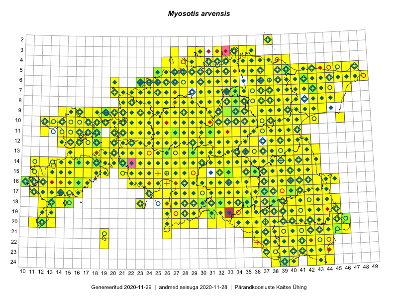

Myosotis arvensis — põld-lõosilm
Boraginaceae :: Myosotis arvensis (L.) Hill (2243); Myosotis intermedia Link (16)

Kaart põhineb 2461 kirjel:
vaatlusi 1846
herbaareksemplare 413
PKÜ kirjeid1 182
ELFi kirjeid2 20
Taime kaasaegsed ja ajaloolised leiukohad asuvad 514 ruudus.
Tingmärgid ja leidudega ruutude arvud periooditi uues (u) ja 2005 andmestikus (v)
| █ | vahemik | u3 | v4 |
|---|---|---|---|
| █ | 2006–2020 | 505 | – |
| ◆/◇ | 1971–2005 | 380 | 405 |
| ○ | 1921–1970 | 162 | 35 |
| + | kuni 1920 | 16 | 5 |
| × | hävinud | – | 0 |
| ? | kaheldav | – | 0 |
| Ruut | Leidja(d) | Leiuaeg | Kirje |
|---|---|---|---|
| 19-39 | Toomas Kukk | 2020-09-12 | ruut/ala: Myosotis arvensis (L.) Hill |
| 15-16 | Mari Reitalu, Sirje Azarov | 2020-09-07 | ruut/ala: Myosotis arvensis (L.) Hill |
| 03-34 | Toomas Kukk, Ott Luuk, Kersti Tambets, Sten Mander, Kristine Fenske, Maie Itse | 2020-08-19 | ruut/ala: Myosotis arvensis (L.) Hill |
| 05-42 | Toomas Kukk, Ott Luuk, Kersti Tambets, Sten Mander, Kristine Fenske | 2020-08-18 | ruut/ala: Myosotis arvensis (L.) Hill |
| 11-17 | Peedu Saar | 2020-08-06 | ruut/ala: Myosotis arvensis (L.) Hill |
| 22-41 | Toomas Kukk, Eerik Leibak | 2020-08-05 | ruut/ala: Myosotis arvensis (L.) Hill |
| 14-40 | Peedu Saar | 2020-08-03 | ruut/ala: Myosotis arvensis (L.) Hill |
| 06-27 | Peedu Saar | 2020-07-30 | ruut/ala: Myosotis arvensis (L.) Hill |
| 08-43 | Toomas Kukk | 2020-07-28 | ruut/ala: Myosotis arvensis (L.) Hill |
| 13-38 | Peedu Saar | 2020-07-28 | ruut/ala: Myosotis arvensis (L.) Hill |
| 09-26 | Ott Luuk | 2020-07-21–2020-07-23 | ruut/ala: Myosotis arvensis (L.) Hill |
| 05-32 | Rein Kalamees | 2020-07-12 | ruut/ala: Myosotis arvensis (L.) Hill |
| 20-45 | Toomas Kukk, Eerik Leibak | 2020-07-07 | ruut/ala: Myosotis arvensis (L.) Hill |
| 19-37 | Mari Reitalu, Sirje Azarov, Riine Latserus | 2020-07-04 | ruut/ala: Myosotis arvensis (L.) Hill |
| 17-14 | Peedu Saar, Toomas Kukk | 2020-07-03 | ruut/ala: Myosotis arvensis (L.) Hill |
| 20-37 | Ott Luuk | 2020-06-27 | ruut/ala: Myosotis arvensis (L.) Hill |
| 04-28 | Ott Luuk | 2020-06-22 | ruut/ala: Myosotis arvensis (L.) Hill |
| 08-28 | Ott Luuk | 2020-06-21 | ruut/ala: Myosotis arvensis (L.) Hill |
| 07-28 | Ott Luuk | 2020-06-21 | ruut/ala: Myosotis arvensis (L.) Hill |
| 05-29 | Peedu Saar, Mart Meriste | 2020-06-19 | ruut/ala: Myosotis arvensis (L.) Hill |
| 05-27 | Toomas Kukk, Martin Tikk, Rein Kalamees | 2020-06-17 | ruut/ala: Myosotis arvensis (L.) Hill |
| 05-31 | Rein Kalamees | 2020-06-13 | ruut/ala: Myosotis arvensis (L.) Hill |
| 08-36 | Toomas Kukk, Meeli Mesipuu | 2020-06-08 | ruut/ala: Myosotis arvensis (L.) Hill |
| 07-36 | Toomas Kukk, Meeli Mesipuu | 2020-06-08 | ruut/ala: Myosotis arvensis (L.) Hill |
| 17-13 | Mari Reitalu | 2020-06-07 | ruut/ala: Myosotis arvensis (L.) Hill |
| 04-36 | Tiina Reintal | 2020-06-06 | punkt: Myosotis arvensis (L.) Hill |
| 09-26 | Hele Möllits | 2020-06-06 | punkt: Myosotis arvensis (L.) Hill |
| 12-18 | Toomas Kukk, Ott Luuk, Peeter Pärn | 2020-05-29–2020-05-31 | ruut/ala: Myosotis arvensis (L.) Hill |
| 17-14 | Mari Reitalu, Triin Reitalu, Sirje Azarov | 2020-05-26 | ruut/ala: Myosotis arvensis (L.) Hill |
| 14-18 | Toomas Kukk, Peedu Saar | 2019-09-26 | ruut/ala: Myosotis arvensis (L.) Hill |
| 10-22 | Toomas Kukk, Peedu Saar | 2019-09-19 | ruut/ala: Myosotis arvensis (L.) Hill |
| 11-22 | Peedu Saar, Toomas Kukk | 2019-09-19 | ruut/ala: Myosotis arvensis (L.) Hill |
| 10-21 | Ott Luuk | 2019-09-19 | ruut/ala: Myosotis arvensis (L.) Hill |
| 10-19 | Peedu Saar, Toomas Kukk | 2019-09-18 | ruut/ala: Myosotis arvensis (L.) Hill |
| 10-20 | Ott Luuk | 2019-09-18 | punkt: Myosotis arvensis (L.) Hill |
| 10-20 | Ott Luuk | 2019-09-18 | ruut/ala: Myosotis arvensis (L.) Hill |
| 09-20 | Ott Luuk | 2019-09-18 | ruut/ala: Myosotis arvensis (L.) Hill |
| 09-19 | Toomas Kukk, Peedu Saar | 2019-09-17 | ruut/ala: Myosotis arvensis (L.) Hill |
| 09-18 | Ott Luuk | 2019-09-17 | ruut/ala: Myosotis arvensis (L.) Hill |
| 06-46 | Toomas Kukk, Thea Kull | 2019-09-11 | ruut/ala: Myosotis arvensis (L.) Hill |
| 06-45 | Thea Kull, Toomas Kukk | 2019-09-11 | punkt: Myosotis arvensis (L.) Hill |
| 05-44 | Meeli Mesipuu, Ott Luuk | 2019-09-11 | ruut/ala: Myosotis arvensis (L.) Hill |
| 10-40 | Toomas Kukk, Thea Kull | 2019-09-10 | ruut/ala: Myosotis arvensis (L.) Hill |
| 09-40 | Toomas Kukk, Thea Kull | 2019-09-10 | punkt: Myosotis arvensis (L.) Hill |
| 09-40 | Toomas Kukk, Thea Kull | 2019-09-10 | punkt: Myosotis arvensis (L.) Hill |
| 08-41 | Timo Luhamäe, Peedu Saar | 2019-09-10 | punkt: Myosotis arvensis (L.) Hill |
| 09-41 | Timo Luhamäe, Peedu Saar | 2019-09-10 | punkt: Myosotis arvensis (L.) Hill |
| 10-41 | Peedu Saar, Timo Luhamäe | 2019-09-10 | ruut/ala: Myosotis arvensis (L.) Hill |
| 08-43 | Ott Luuk, Meeli Mesipuu | 2019-09-10 | ruut/ala: Myosotis arvensis (L.) Hill |
| 08-24 | Peedu Saar, Ott Luuk | 2019-09-05 | ruut/ala: Myosotis arvensis (L.) Hill |
| 09-22 | Ott Luuk | 2019-09-03–2019-09-04 | ruut/ala: Myosotis arvensis (L.) Hill |
| 08-21 | Peedu Saar | 2019-09-03 | ruut/ala: Myosotis arvensis (L.) Hill |
| 15-28 | Toomas Kukk, Peedu Saar | 2019-08-29 | ruut/ala: Myosotis arvensis (L.) Hill |
| 13-31 | Ott Luuk, Eerik Leibak | 2019-08-29 | ruut/ala: Myosotis arvensis (L.) Hill |
| 12-31 | Ott Luuk, Eerik Leibak | 2019-08-29 | ruut/ala: Myosotis arvensis (L.) Hill |
| 14-32 | Meeli Mesipuu, Timo Luhamäe | 2019-08-29 | ruut/ala: Myosotis arvensis (L.) Hill |
| 15-32 | Mari Reitalu, Thea Kull, Martin Tikk | 2019-08-29 | ruut/ala: Myosotis arvensis (L.) Hill |
| 14-30 | Ott Luuk, Eerik Leibak | 2019-08-28 | ruut/ala: Myosotis arvensis (L.) Hill |
| 13-30 | Mari Reitalu, Thea Kull | 2019-08-28 | ruut/ala: Myosotis arvensis (L.) Hill |
| 13-29 | Mari Reitalu, Thea Kull | 2019-08-28 | ruut/ala: Myosotis arvensis (L.) Hill |
| 13-36 | Ott Luuk, Eerik Leibak | 2019-08-27 | ruut/ala: Myosotis arvensis (L.) Hill |
| 16-35 | Meeli Mesipuu, Timo Luhamäe | 2019-08-27 | ruut/ala: Myosotis arvensis (L.) Hill |
| 16-32 | Mari Reitalu, Thea Kull | 2019-08-27 | ruut/ala: Myosotis arvensis (L.) Hill |
| 18-43 | Peedu Saar, Ott Luuk | 2019-08-21 | ruut/ala: Myosotis arvensis (L.) Hill |
| 09-40 | Rein Kalamees, Toomas Kukk | 2019-08-09 | ruut/ala: Myosotis arvensis (L.) Hill |
| 08-39 | Rein Kalamees, Toomas Kukk | 2019-08-08 | ruut/ala: Myosotis arvensis (L.) Hill |
| 09-39 | Rein Kalamees, Toomas Kukk | 2019-08-08 | ruut/ala: Myosotis arvensis (L.) Hill |
| 07-35 | Toomas Kukk, Rein Kalamees, Kaur Maran | 2019-08-07 | ruut/ala: Myosotis arvensis (L.) Hill |
| 07-34 | Toomas Kukk, Rein Kalamees, Kaur Maran | 2019-08-07 | ruut/ala: Myosotis arvensis (L.) Hill |
| 06-36 | Peedu Saar, Timo Luhamäe | 2019-08-07 | ruut/ala: Myosotis arvensis (L.) Hill |
| 04-33 | Ott Luuk, Jaak-Albert Metsoja | 2019-08-07 | ruut/ala: Myosotis arvensis (L.) Hill |
| 04-34 | Rein Kalamees, Toomas Kukk | 2019-08-06 | ruut/ala: Myosotis arvensis (L.) Hill |
| 05-31 | Peedu Saar, Timo Luhamäe | 2019-08-06 | ruut/ala: Myosotis arvensis (L.) Hill |
| 04-36 | Meeli Mesipuu | 2019-08-06 | ruut/ala: Myosotis arvensis (L.) Hill |
| 02-38 | Meeli Mesipuu | 2019-08-06 | ruut/ala: Myosotis arvensis (L.) Hill |
| 06-32 | Toomas Kukk, Rein Kalamees | 2019-08-05 | ruut/ala: Myosotis arvensis (L.) Hill |
| 05-32 | Rein Kalamees, Toomas Kukk | 2019-08-05 | ruut/ala: Myosotis arvensis (L.) Hill |
| 04-32 | Rein Kalamees, Toomas Kukk | 2019-08-05 | ruut/ala: Myosotis arvensis (L.) Hill |
| 07-31 | Peedu Saar, Timo Luhamäe | 2019-08-05 | ruut/ala: Myosotis arvensis (L.) Hill |
| 08-36 | Ott Luuk, Jaak-Albert Metsoja | 2019-08-05 | ruut/ala: Myosotis arvensis (L.) Hill |
| 07-36 | Ott Luuk, Jaak-Albert Metsoja | 2019-08-05 | ruut/ala: Myosotis arvensis (L.) Hill |
| 21-39 | Peedu Saar, Toomas Kukk | 2019-08-01 | ruut/ala: Myosotis arvensis (L.) Hill |
| 22-42 | Toomas Kukk, Peedu Saar | 2019-07-31 | ruut/ala: Myosotis arvensis (L.) Hill |
| 21-43 | Peedu Saar, Toomas Kukk | 2019-07-31 | ruut/ala: Myosotis arvensis (L.) Hill |
| 10-32 | Ott Luuk | 2019-07-31 | ruut/ala: Myosotis arvensis (L.) Hill |
| 09-31 | Ott Luuk, Toivo Sepp | 2019-07-25 | ruut/ala: Myosotis arvensis (L.) Hill |
| 08-22 | Peedu Saar | 2019-07-23 | ruut/ala: Myosotis arvensis (L.) Hill |
| 11-30 | Ott Luuk, Toivo Sepp | 2019-07-23 | ruut/ala: Myosotis arvensis (L.) Hill |
| 15-32 | Eerik Leibak | 2019-07-20 | punkt: Myosotis arvensis (L.) Hill |
| 16-40 | Meeli Mesipuu | 2019-07-17 | ruut/ala: Myosotis arvensis (L.) Hill |
| 16-40 | Meeli Mesipuu | 2019-07-17 | ruut/ala: Myosotis arvensis (L.) Hill |
| 19-36 | Ott Luuk, Peedu Saar | 2019-07-16 | ruut/ala: Myosotis arvensis (L.) Hill |
| 18-36 | Ott Luuk, Peedu Saar | 2019-07-16 | ruut/ala: Myosotis arvensis (L.) Hill |
| 19-35 | Ott Luuk, Peedu Saar | 2019-07-16 | ruut/ala: Myosotis arvensis (L.) Hill |
| 18-37 | Peedu Saar, Ott Luuk | 2019-07-15 | ruut/ala: Myosotis arvensis (L.) Hill |
| 17-38 | Ott Luuk, Peedu Saar | 2019-07-15 | ruut/ala: Myosotis arvensis (L.) Hill |
| 04-33 | Rein Kalamees | 2019-07-14 | ruut/ala: Myosotis arvensis (L.) Hill |
| 03-32 | Rein Kalamees | 2019-07-13 | ruut/ala: Myosotis arvensis (L.) Hill |
| 23-41 | Toomas Kukk, Indrek Tammekänd | 2019-07-12 | ruut/ala: Myosotis arvensis (L.) Hill |
| 23-42 | Toomas Kukk, Indrek Tammekänd | 2019-07-12 | ruut/ala: Myosotis arvensis (L.) Hill |
| 17-39 | Thea Kull | 2019-07-12 | ruut/ala: Myosotis arvensis (L.) Hill |
| 24-39 | Peedu Saar, Timo Luhamäe | 2019-07-12 | ruut/ala: Myosotis arvensis (L.) Hill |
| 23-38 | Peedu Saar, Timo Luhamäe | 2019-07-12 | ruut/ala: Myosotis arvensis (L.) Hill |
| 22-44 | Ott Luuk, Tiit Hallikma | 2019-07-12 | ruut/ala: Myosotis arvensis (L.) Hill |
| 22-41 | Toomas Kukk, Indrek Tammekänd | 2019-07-11 | ruut/ala: Myosotis arvensis (L.) Hill |
| 23-39 | Peedu Saar, Timo Luhamäe | 2019-07-11 | ruut/ala: Myosotis arvensis (L.) Hill |
| 23-37 | Peedu Saar, Timo Luhamäe | 2019-07-11 | ruut/ala: Myosotis arvensis (L.) Hill |
| 24-44 | Ott Luuk, Tiit Hallikma | 2019-07-11 | ruut/ala: Myosotis arvensis (L.) Hill |
| 24-43 | Ott Luuk, Tiit Hallikma | 2019-07-11 | ruut/ala: Myosotis arvensis (L.) Hill |
| 19-41 | Meeli Mesipuu | 2019-07-11 | ruut/ala: Myosotis arvensis (L.) Hill |
| 21-40 | Toomas Kukk, Indrek Tammekänd | 2019-07-10 | ruut/ala: Myosotis arvensis (L.) Hill |
| 19-39 | Thea Kull | 2019-07-10 | ruut/ala: Myosotis arvensis (L.) Hill |
| 22-37 | Peedu Saar, Timo Luhamäe | 2019-07-10 | ruut/ala: Myosotis arvensis (L.) Hill |
| 22-38 | Peedu Saar, Timo Luhamäe | 2019-07-10 | ruut/ala: Myosotis arvensis (L.) Hill |
| 22-38 | Peedu Saar, Timo Luhamäe | 2019-07-10 | ruut/ala: Myosotis arvensis (L.) Hill |
| 20-45 | Ott Luuk, Tiit Hallikma | 2019-07-10 | ruut/ala: Myosotis arvensis (L.) Hill |
| 18-41 | Meeli Mesipuu | 2019-07-10 | ruut/ala: Myosotis arvensis (L.) Hill |
| 20-41 | Toomas Kukk, Indrek Tammekänd | 2019-07-09 | ruut/ala: Myosotis arvensis (L.) Hill |
| 18-42 | Thea Kull, Meeli Mesipuu | 2019-07-09 | ruut/ala: Myosotis arvensis (L.) Hill |
| 20-36 | Peedu Saar, Timo Luhamäe | 2019-07-09 | ruut/ala: Myosotis arvensis (L.) Hill |
| 20-38 | Peedu Saar, Timo Luhamäe | 2019-07-09 | ruut/ala: Myosotis arvensis (L.) Hill |
| 20-43 | Ott Luuk, Tiit Hallikma | 2019-07-09 | ruut/ala: Myosotis arvensis (L.) Hill |
| 20-44 | Ott Luuk, Tiit Hallikma | 2019-07-09 | ruut/ala: Myosotis arvensis (L.) Hill |
| 05-38 | Peedu Saar, Ott Luuk | 2019-07-05 | ruut/ala: Myosotis arvensis (L.) Hill |
| 05-40 | Peedu Saar, Ott Luuk | 2019-07-05 | ruut/ala: Myosotis arvensis (L.) Hill |
| 05-40 | Peedu Saar, Ott Luuk | 2019-07-05 | ruut/ala: Myosotis arvensis (L.) Hill |
| 06-39 | Peedu Saar, Ott Luuk | 2019-07-05 | ruut/ala: Myosotis arvensis (L.) Hill |
| 04-40 | Ott Luuk, Peedu Saar | 2019-07-05 | ruut/ala: Myosotis arvensis (L.) Hill |
| 13-40 | Peedu Saar, Ott Luuk | 2019-07-04 | ruut/ala: Myosotis arvensis (L.) Hill |
| 12-41 | Peedu Saar, Ott Luuk | 2019-07-04 | ruut/ala: Myosotis arvensis (L.) Hill |
| 14-39 | Ott Luuk, Kaili Kattai | 2019-07-03 | ruut/ala: Myosotis arvensis (L.) Hill |
| 15-40 | Ott Luuk, Kaili Kattai | 2019-07-03 | ruut/ala: Myosotis arvensis (L.) Hill |
| 05-28 | Meeli Mesipuu | 2019-06-30 | ruut/ala: Myosotis arvensis (L.) Hill |
| 16-27 | Indrek Tammekänd | 2019-06-27 | ruut/ala: Myosotis arvensis (L.) Hill |
| 05-27 | Meeli Mesipuu | 2019-06-26 | ruut/ala: Myosotis arvensis (L.) Hill |
| 05-27 | Meeli Mesipuu | 2019-06-26 | ruut/ala: Myosotis arvensis (L.) Hill |
| 05-28 | Meeli Mesipuu | 2019-06-26 | ruut/ala: Myosotis arvensis (L.) Hill |
| 21-45 | Toomas Kukk | 2019-06-23 | punkt: Myosotis arvensis (L.) Hill |
| 05-27 | Meeli Mesipuu | 2019-06-22 | ruut/ala: Myosotis arvensis (L.) Hill |
| 06-27 | Meeli Mesipuu | 2019-06-16 | ruut/ala: Myosotis arvensis (L.) Hill |
| 06-27 | Meeli Mesipuu | 2019-06-16 | ruut/ala: Myosotis arvensis (L.) Hill |
| 17-40 | Margus Ots, Ekke Rikka, Sigrid Ots, Meelis Pärtel, Kadri Pärtel, Jaak Pärtel, Leene Pärtel, Karin Pai, Marko Mägi | 2019-06-14–2019-06-15 | punkt: Myosotis arvensis (L.) Hill |
| 14-19 | Ingo Valgma, Marje Loide, Riina Laurimaa | 2019-06-14 | punkt: Myosotis arvensis (L.) Hill |
| 04-33 | Peedu Saar, Ott Luuk | 2019-06-11 | ruut/ala: Myosotis arvensis (L.) Hill |
| 04-33 | Peedu Saar, Ott Luuk | 2019-06-11 | ruut/ala: Myosotis arvensis (L.) Hill |
| 05-33 | Ott Luuk, Peedu Saar | 2019-06-11 | ruut/ala: Myosotis arvensis (L.) Hill |
| 10-38 | Peedu Saar, Ott Luuk | 2019-06-10 | ruut/ala: Myosotis arvensis (L.) Hill |
| 11-37 | Ott Luuk, Peedu Saar | 2019-06-10 | ruut/ala: Myosotis arvensis (L.) Hill |
| 17-43 | Peedu Saar | 2019-06-07 | ruut/ala: Myosotis arvensis (L.) Hill |
| 16-45 | Ott Luuk | 2019-06-07 | punkt: Myosotis arvensis (L.) Hill |
| 16-45 | Ott Luuk | 2019-06-07 | ruut/ala: Myosotis arvensis (L.) Hill |
| 06-28 | Toomas Kukk | 2019-06-05 | ruut/ala: Myosotis arvensis (L.) Hill |
| 17-15 | Meeli Mesipuu | 2019-06-04 | ruut/ala: Myosotis arvensis (L.) Hill |
| 12-18 | Toomas Kukk, Indrek Tammekänd, Peeter Pärn | 2019-06-01 | ruut/ala: Myosotis arvensis (L.) Hill |
| 12-18 | Toomas Kukk, Indrek Tammekänd | 2019-06-01 | ruut/ala: Myosotis arvensis (L.) Hill |
| 11-18 | Toomas Kukk, Indrek Tammekänd | 2019-06-01 | ruut/ala: Myosotis arvensis (L.) Hill |
| 12-18 | Toomas Kukk | 2019-06-01 | ruut/ala: Myosotis arvensis (L.) Hill |
| 06-27 | Mari Reitalu | 2019-05-30 | ruut/ala: Myosotis arvensis (L.) Hill |
| 16-28 | Indrek Tammekänd | 2019-05-29–2019-08-23 | ruut/ala: Myosotis arvensis (L.) Hill |
| 15-17 | Mari Reitalu, Sirje Azarov, Triin Reitalu | 2019-05-01 | ruut/ala: Myosotis arvensis (L.) Hill |
| 11-26 | Toomas Kukk, Peedu Saar | 2018-09-20 | punkt: Myosotis arvensis (L.) Hill |
| 17-38 | Ott Luuk, Meeli Mesipuu | 2018-09-20 | ruut/ala: Myosotis arvensis (L.) Hill |
| 05-47 | Peedu Saar, Toomas Kukk | 2018-09-04 | punkt: Myosotis arvensis (L.) Hill |
| 09-38 | Toomas Kukk, Peedu Saar | 2018-09-03 | punkt: Myosotis arvensis (L.) Hill |
| 05-41 | Peedu Saar, Toomas Kukk | 2018-09-03 | ruut/ala: Myosotis arvensis (L.) Hill |
| 12-19 | Toomas Kukk, Tiit Hallikma | 2018-08-30 | ruut/ala: Myosotis arvensis (L.) Hill |
| 10-30 | Ott Luuk, Toivo Sepp | 2018-08-27 | ruut/ala: Myosotis arvensis (L.) Hill |
| 11-28 | Ott Luuk, Toivo Sepp | 2018-08-24–2018-08-30 | ruut/ala: Myosotis arvensis (L.) Hill |
| 14-38 | Peedu Saar | 2018-08-23 | ruut/ala: Myosotis arvensis (L.) Hill |
| 14-31 | Toomas Kukk | 2018-08-18 | ruut/ala: Myosotis arvensis (L.) Hill |
| 12-25 | Toomas Kukk, Ott Luuk, Peedu Saar | 2018-08-17 | ruut/ala: Myosotis arvensis (L.) Hill |
| 09-28 | Peedu Saar, Toomas Kukk, Ott Luuk, Kersti Tambets, Sten Mander | 2018-08-16 | ruut/ala: Myosotis arvensis (L.) Hill |
| 12-31 | Ott Luuk, Toomas Kukk, Peedu Saar, Sten Mander, Kersti Tambets | 2018-08-16 | ruut/ala: Myosotis arvensis (L.) Hill |
| 17-31 | Peedu Saar, Polina Degtjarenko | 2018-08-14 | ruut/ala: Myosotis arvensis (L.) Hill |
| 19-28 | Peedu Saar, Polina Degtjarenko | 2018-08-14 | ruut/ala: Myosotis arvensis (L.) Hill |
| 19-42 | Toomas Kukk, Tiit Hallikma | 2018-08-09 | punkt: Myosotis arvensis (L.) Hill |
| 04-33 | Peedu Saar, Toomas Kukk | 2018-08-08 | ruut/ala: Myosotis arvensis (L.) Hill |
| 03-34 | Peedu Saar, Toomas Kukk | 2018-08-08 | ruut/ala: Myosotis arvensis (L.) Hill |
| 03-34 | Peedu Saar, Toomas Kukk | 2018-08-08 | punkt: Myosotis arvensis (L.) Hill |
| 06-31 | Peedu Saar, Toomas Kukk | 2018-08-07 | ruut/ala: Myosotis arvensis (L.) Hill |
| 19-34 | Peedu Saar | 2018-08-01 | ruut/ala: Myosotis arvensis (L.) Hill |
| 12-40 | Peedu Saar | 2018-07-20 | ruut/ala: Myosotis arvensis (L.) Hill |
| 09-43 | Toomas Kukk | 2018-07-17 | ruut/ala: Myosotis arvensis (L.) Hill |
| 16-12 | Triin Reitalu, Ansis Blaus | 2018-07-13 | punkt: Myosotis arvensis (L.) Hill |
| 10-18 | Toomas Kukk, Meeli Mesipuu | 2018-07-11 | ruut/ala: Myosotis arvensis (L.) Hill |
| 10-17 | Toomas Kukk | 2018-07-10 | ruut/ala: Myosotis arvensis (L.) Hill |
| 10-18 | Toomas Kukk | 2018-07-10 | ruut/ala: Myosotis arvensis (L.) Hill |
| 10-17 | Peedu Saar | 2018-07-10 | ruut/ala: Myosotis arvensis (L.) Hill |
| 10-17 | Peedu Saar | 2018-07-10 | ruut/ala: Myosotis arvensis (L.) Hill |
| 10-17 | Peedu Saar | 2018-07-10 | ruut/ala: Myosotis arvensis (L.) Hill |
| 11-18 | Toomas Kukk | 2018-07-09 | ruut/ala: Myosotis arvensis (L.) Hill |
| 11-18 | Toomas Kukk | 2018-07-09 | ruut/ala: Myosotis arvensis (L.) Hill |
| 10-18 | Peedu Saar | 2018-07-09 | ruut/ala: Myosotis arvensis (L.) Hill |
| 11-18 | Peedu Saar | 2018-07-09 | ruut/ala: Myosotis arvensis (L.) Hill |
| 06-23 | Peedu Saar | 2018-07-05 | ruut/ala: Myosotis arvensis (L.) Hill |
| 06-23 | Ott Luuk, Meeli Mesipuu, Jaak-Albert Metsoja, Mari Metsoja, Peedu Saar | 2018-07-05 | ruut/ala: Myosotis arvensis (L.) Hill |
| 06-23 | Ott Luuk, Meeli Mesipuu, Jaak-Albert Metsoja, Mari Metsoja | 2018-07-05 | ruut/ala: Myosotis arvensis (L.) Hill |
| 06-23 | Ott Luuk, Meeli Mesipuu, Jaak-Albert Metsoja, Mari Metsoja, Peedu Saar | 2018-07-04–2018-07-06 | ruut/ala: Myosotis arvensis (L.) Hill |
| 06-23 | Peedu Saar | 2018-07-04 | ruut/ala: Myosotis arvensis (L.) Hill |
| 05-32 | Rein Kalamees | 2018-06-28 | ruut/ala: Myosotis arvensis (L.) Hill |
| 15-19 | Peedu Saar, Ott Luuk, Toomas Kukk, Ilmar Uibopuu | 2018-06-28 | ruut/ala: Myosotis arvensis (L.) Hill |
| 13-42 | Toomas Kukk, Ilmar Uibopuu | 2018-06-17 | ruut/ala: Myosotis arvensis (L.) Hill |
| 14-43 | Toomas Kukk, Ilmar Uibopuu | 2018-06-17 | ruut/ala: Myosotis arvensis (L.) Hill |
| 11-41 | Toomas Kukk, Ilmar Uibopuu | 2018-06-17 | ruut/ala: Myosotis arvensis (L.) Hill |
| 14-42 | Toomas Kukk, Ilmar Uibopuu | 2018-06-17 | punkt: Myosotis arvensis (L.) Hill |
| 17-40 | Margus Ots, Sigrid Ots, Ekke Rikka | 2018-06-16 | punkt: Myosotis arvensis (L.) Hill |
| 18-23 | Indrek Tammekänd | 2018-05-31–2018-06-02 | ruut/ala: Myosotis arvensis (L.) Hill |
| 16-14 | Toomas Kukk, Ilmar Uibopuu, Mari Reitalu | 2018-05-28 | ruut/ala: Myosotis arvensis (L.) Hill |
| 12-19 | Toomas Kukk, Ilmar Uibopuu, Mari Reitalu | 2018-05-27 | ruut/ala: Myosotis arvensis (L.) Hill |
| 12-18 | Toomas Kukk, Ilmar Uibopuu, Mari Reitalu | 2018-05-27 | ruut/ala: Myosotis arvensis (L.) Hill |
| 16-15 | Toomas Kukk, Ilmar Uibopuu | 2018-05-27 | ruut/ala: Myosotis arvensis (L.) Hill |
| 13-18 | Toomas Kukk, Ilmar Uibopuu | 2018-05-26 | ruut/ala: Myosotis arvensis (L.) Hill |
| 14-20 | Toomas Kukk, Ilmar Uibopuu | 2018-05-26 | ruut/ala: Myosotis arvensis (L.) Hill |
| 15-22 | Toomas Kukk, Ilmar Uibopuu | 2018-05-25 | ruut/ala: Myosotis arvensis (L.) Hill |
| 15-21 | Toomas Kukk, Ilmar Uibopuu | 2018-05-25 | ruut/ala: Myosotis arvensis (L.) Hill |
| 07-43 | Meeli Mesipuu | 2018-05-25 | TAA0145242: Myosotis arvensis (L.) Hill |
| 07-35 | Peedu Saar | 2018-05-19 | ruut/ala: Myosotis arvensis (L.) Hill |
| 20-44 | Toomas Kukk, Peedu Saar | 2018-05-17 | punkt: Myosotis arvensis (L.) Hill |
| 18-23 | Meeli Mesipuu | 2018-05-11 | ruut/ala: Myosotis arvensis (L.) Hill |
| 15-41 | Toomas Kukk, Ilmar Uibopuu | 2017-10-14 | punkt: Myosotis arvensis (L.) Hill |
| 10-39 | Toomas Kukk, Ilmar Uibopuu | 2017-10-14 | punkt: Myosotis arvensis (L.) Hill |
| 03-29 | Toomas Kukk | 2017-09-29 | ruut/ala: Myosotis arvensis (L.) Hill |
| 07-37 | Toomas Kukk, Peedu Saar | 2017-09-28 | ruut/ala: Myosotis arvensis (L.) Hill |
| 09-40 | Toomas Kukk, Peedu Saar | 2017-09-28 | ruut/ala: Myosotis arvensis (L.) Hill |
| 07-38 | Peedu Saar, Toomas Kukk | 2017-09-28 | punkt: Myosotis arvensis (L.) Hill |
| 08-39 | Peedu Saar, Toomas Kukk | 2017-09-28 | ruut/ala: Myosotis arvensis (L.) Hill |
| 04-38 | Peedu Saar, Toomas Kukk | 2017-09-28 | ruut/ala: Myosotis arvensis (L.) Hill |
| 06-36 | Peedu Saar, Toomas Kukk | 2017-09-27 | ruut/ala: Myosotis arvensis (L.) Hill |
| 08-38 | Peedu Saar, Toomas Kukk | 2017-09-27 | ruut/ala: Myosotis arvensis (L.) Hill |
| 20-37 | Ott Luuk | 2017-09-17 | ruut/ala: Myosotis arvensis (L.) Hill |
| 16-22 | Indrek Tammekänd | 2017-09-17 | ruut/ala: Myosotis arvensis (L.) Hill |
| 12-16 | Peedu Saar, Ott Luuk | 2017-09-15 | ruut/ala: Myosotis arvensis (L.) Hill |
| 09-15 | Peedu Saar, Ott Luuk | 2017-09-15 | ruut/ala: Myosotis arvensis (L.) Hill |
| 10-29 | Ott Luuk, Peedu Saar | 2017-09-15 | ruut/ala: Myosotis arvensis (L.) Hill |
| 10-29 | Ott Luuk, Peedu Saar | 2017-09-15 | punkt: Myosotis arvensis (L.) Hill |
| 12-16 | Ott Luuk, Peedu Saar | 2017-09-15 | punkt: Myosotis arvensis (L.) Hill |
| 09-15 | Ott Luuk, Peedu Saar | 2017-09-15 | punkt: Myosotis arvensis (L.) Hill |
| 09-16 | Peedu Saar, Ott Luuk | 2017-09-14–2017-09-15 | punkt: Myosotis arvensis (L.) Hill |
| 09-16 | Ott Luuk, Peedu Saar | 2017-09-14–2017-09-15 | ruut/ala: Myosotis arvensis (L.) Hill |
| 10-15 | Peedu Saar, Ott Luuk | 2017-09-14 | punkt: Myosotis arvensis (L.) Hill |
| 10-14 | Peedu Saar, Ott Luuk | 2017-09-14 | ruut/ala: Myosotis arvensis (L.) Hill |
| 10-15 | Ott Luuk, Peedu Saar | 2017-09-14 | ruut/ala: Myosotis arvensis (L.) Hill |
| 10-13 | Ott Luuk, Peedu Saar | 2017-09-14 | ruut/ala: Myosotis arvensis (L.) Hill |
| 10-14 | Ott Luuk, Peedu Saar | 2017-09-14 | punkt: Myosotis arvensis (L.) Hill |
| 12-15 | Toomas Kukk, Indrek Tammekänd | 2017-09-13 | ruut/ala: Myosotis arvensis (L.) Hill |
| 11-15 | Peedu Saar, Ott Luuk | 2017-09-13 | ruut/ala: Myosotis arvensis (L.) Hill |
| 11-14 | Ott Luuk, Peedu Saar | 2017-09-13 | ruut/ala: Myosotis arvensis (L.) Hill |
| 11-16 | Ott Luuk, Peedu Saar | 2017-09-13 | ruut/ala: Myosotis arvensis (L.) Hill |
| 09-17 | Peedu Saar, Ott Luuk | 2017-09-12 | ruut/ala: Myosotis arvensis (L.) Hill |
| 10-18 | Ott Luuk, Peedu Saar | 2017-09-12 | ruut/ala: Myosotis arvensis (L.) Hill |
| 11-17 | Toomas Kukk, Indrek Tammekänd | 2017-09-11 | ruut/ala: Myosotis arvensis (L.) Hill |
| 10-16 | Peedu Saar, Ott Luuk | 2017-09-11 | ruut/ala: Myosotis arvensis (L.) Hill |
| 10-17 | Ott Luuk, Peedu Saar | 2017-09-11 | ruut/ala: Myosotis arvensis (L.) Hill |
| 12-18 | Toomas Kukk, Peeter Pärn | 2017-09-09–2017-09-10 | ruut/ala: Myosotis arvensis (L.) Hill |
| 10-24 | Peedu Saar, Toomas Kukk | 2017-09-07 | ruut/ala: Myosotis arvensis (L.) Hill |
| 11-24 | Peedu Saar, Toomas Kukk | 2017-09-07 | ruut/ala: Myosotis arvensis (L.) Hill |
| 14-26 | Indrek Tammekänd | 2017-09-04 | ruut/ala: Myosotis arvensis (L.) Hill |
| 20-29 | Toomas Kukk, Ott Luuk, Kersti Tambets, Timo Luhamäe, Sten Mander | 2017-08-30 | ruut/ala: Myosotis arvensis (L.) Hill |
| 21-45 | Meeli Mesipuu | 2017-08-30 | TAA0145133: Myosotis arvensis (L.) Hill |
| 18-31 | Toomas Kukk, Ott Luuk, Kersti Tambets, Timo Luhamäe, Sten Mander | 2017-08-29 | ruut/ala: Myosotis arvensis (L.) Hill |
| 18-29 | Ott Luuk, Toomas Kukk, Sten Mander, Timo Luhamäe, Kersti Tambets | 2017-08-29 | ruut/ala: Myosotis arvensis (L.) Hill |
| 17-31 | Ott Luuk, Toomas Kukk, Sten Mander, Kersti Tambets, Timo Luhamäe | 2017-08-29 | ruut/ala: Myosotis arvensis (L.) Hill |
| 13-19 | Toomas Kukk, Peedu Saar, Ott Luuk | 2017-08-26 | ruut/ala: Myosotis arvensis (L.) Hill |
| 11-40 | Peedu Saar, Ott Luuk | 2017-08-23 | ruut/ala: Myosotis arvensis (L.) Hill |
| 12-41 | Ott Luuk, Peedu Saar | 2017-08-23 | ruut/ala: Myosotis arvensis (L.) Hill |
| 14-43 | Peedu Saar, Ott Luuk | 2017-08-21 | ruut/ala: Myosotis arvensis (L.) Hill |
| 14-36 | Indrek Tammekänd | 2017-08-16 | ruut/ala: Myosotis arvensis (L.) Hill |
| 14-36 | Ott Luuk | 2017-08-15 | ruut/ala: Myosotis arvensis (L.) Hill |
| 15-28 | Peedu Saar, Timo Luhamäe | 2017-08-11 | ruut/ala: Myosotis arvensis (L.) Hill |
| 14-28 | Ott Luuk, Indrek Tammekänd | 2017-08-11 | ruut/ala: Myosotis arvensis (L.) Hill |
| 14-27 | Ott Luuk, Indrek Tammekänd | 2017-08-11 | ruut/ala: Myosotis arvensis (L.) Hill |
| 09-24 | Mari Reitalu, Eerik Leibak | 2017-08-11 | ruut/ala: Myosotis arvensis (L.) Hill |
| 14-29 | Ilmar Uibopuu, Toomas Kukk | 2017-08-11 | ruut/ala: Myosotis arvensis (L.) Hill |
| 15-29 | Ilmar Uibopuu, Toomas Kukk | 2017-08-11 | ruut/ala: Myosotis arvensis (L.) Hill |
| 11-25 | Toomas Kukk, Eerik Leibak | 2017-08-10 | ruut/ala: Myosotis arvensis (L.) Hill |
| 11-20 | Ott Luuk, Ilmar Uibopuu | 2017-08-10 | ruut/ala: Myosotis arvensis (L.) Hill |
| 07-25 | Mari Reitalu, Indrek Tammekänd | 2017-08-10 | ruut/ala: Myosotis arvensis (L.) Hill |
| 07-23 | Mari Reitalu, Indrek Tammekänd | 2017-08-10 | ruut/ala: Myosotis arvensis (L.) Hill |
| 11-24 | Eerik Leibak, Toomas Kukk | 2017-08-10 | ruut/ala: Myosotis arvensis (L.) Hill |
| 09-29 | Toomas Kukk, Ilmar Uibopuu, Kadri Kuusksalu | 2017-08-09 | ruut/ala: Myosotis arvensis (L.) Hill |
| 08-30 | Thea Kull, Ott Luuk | 2017-08-09 | ruut/ala: Myosotis arvensis (L.) Hill |
| 12-24 | Peedu Saar, Timo Luhamäe | 2017-08-09 | ruut/ala: Myosotis arvensis (L.) Hill |
| 12-25 | Peedu Saar, Timo Luhamäe | 2017-08-09 | ruut/ala: Myosotis arvensis (L.) Hill |
| 08-29 | Ott Luuk, Thea Kull | 2017-08-09 | ruut/ala: Myosotis arvensis (L.) Hill |
| 12-29 | Meeli Mesipuu, Indrek Tammekänd | 2017-08-09 | ruut/ala: Myosotis arvensis (L.) Hill |
| 12-30 | Meeli Mesipuu, Indrek Tammekänd | 2017-08-09 | ruut/ala: Myosotis arvensis (L.) Hill |
| 12-27 | Mari Reitalu, Eerik Leibak | 2017-08-09 | ruut/ala: Myosotis arvensis (L.) Hill |
| 12-26 | Mari Reitalu, Eerik Leibak | 2017-08-09 | ruut/ala: Myosotis arvensis (L.) Hill |
| 09-28 | Ilmar Uibopuu, Kadri Kuusksalu, Toomas Kukk, Ott Luuk | 2017-08-09 | ruut/ala: Myosotis arvensis (L.) Hill |
| 08-26 | Toomas Kukk, Ilmar Uibopuu, Kadri Kuusksalu | 2017-08-08 | ruut/ala: Myosotis arvensis (L.) Hill |
| 07-26 | Toomas Kukk, Ilmar Uibopuu, Kadri Kuusksalu | 2017-08-08 | ruut/ala: Myosotis arvensis (L.) Hill |
| 10-28 | Thea Kull, Ott Luuk | 2017-08-08 | ruut/ala: Myosotis arvensis (L.) Hill |
| 07-28 | Peedu Saar, Timo Luhamäe | 2017-08-08 | ruut/ala: Myosotis arvensis (L.) Hill |
| 07-27 | Peedu Saar, Timo Luhamäe | 2017-08-08 | ruut/ala: Myosotis arvensis (L.) Hill |
| 11-28 | Ott Luuk, Thea Kull | 2017-08-08 | ruut/ala: Myosotis arvensis (L.) Hill |
| 09-27 | Meeli Mesipuu, Indrek Tammekänd | 2017-08-08 | ruut/ala: Myosotis arvensis (L.) Hill |
| 09-26 | Meeli Mesipuu, Indrek Tammekänd | 2017-08-08 | ruut/ala: Myosotis arvensis (L.) Hill |
| 08-27 | Mari Reitalu, Eerik Leibak | 2017-08-08 | ruut/ala: Myosotis arvensis (L.) Hill |
| 08-28 | Mari Reitalu, Eerik Leibak | 2017-08-08 | ruut/ala: Myosotis arvensis (L.) Hill |
| 13-37 | Toomas Kukk, Ilmar Uibopuu | 2017-08-07 | ruut/ala: Myosotis arvensis (L.) Hill |
| 13-33 | Toomas Kukk, Ilmar Uibopuu | 2017-08-07 | ruut/ala: Myosotis arvensis (L.) Hill |
| 12-33 | Thea Kull, Ott Luuk | 2017-08-07 | ruut/ala: Myosotis arvensis (L.) Hill |
| 05-30 | Rein Kalamees | 2017-08-07 | ruut/ala: Myosotis arvensis (L.) Hill |
| 14-34 | Peedu Saar, Timo Luhamäe | 2017-08-07 | ruut/ala: Myosotis arvensis (L.) Hill |
| 13-34 | Peedu Saar, Timo Luhamäe | 2017-08-07 | ruut/ala: Myosotis arvensis (L.) Hill |
| 12-32 | Ott Luuk, Thea Kull | 2017-08-07 | ruut/ala: Myosotis arvensis (L.) Hill |
| 14-19 | Meeli Mesipuu | 2017-08-07 | ruut/ala: Myosotis arvensis (L.) Hill |
| 14-21 | Mari Reitalu | 2017-08-07 | ruut/ala: Myosotis arvensis (L.) Hill |
| 13-18 | Meeli Mesipuu | 2017-08-06 | ruut/ala: Myosotis arvensis (L.) Hill |
| 07-35 | Toomas Kukk | 2017-08-03 | ruut/ala: Myosotis arvensis (L.) Hill |
| 07-20 | Toomas Kukk | 2017-08-03 | ruut/ala: Myosotis arvensis (L.) Hill |
| 11-34 | Thea Kull, Ott Luuk | 2017-08-03 | ruut/ala: Myosotis arvensis (L.) Hill |
| 12-34 | Ott Luuk, Thea Kull | 2017-08-03 | ruut/ala: Myosotis arvensis (L.) Hill |
| 16-39 | Thea Kull, Ott Luuk | 2017-08-01 | ruut/ala: Myosotis arvensis (L.) Hill |
| 16-37 | Ott Luuk, Thea Kull | 2017-08-01 | ruut/ala: Myosotis arvensis (L.) Hill |
| 07-24 | Toomas Kukk, Ilmar Uibopuu | 2017-07-30 | ruut/ala: Myosotis arvensis (L.) Hill |
| 08-23 | Toomas Kukk, Ilmar Uibopuu | 2017-07-30 | ruut/ala: Myosotis arvensis (L.) Hill |
| 07-22 | Toomas Kukk, Ilmar Uibopuu | 2017-07-29 | ruut/ala: Myosotis arvensis (L.) Hill |
| 08-22 | Toomas Kukk, Ilmar Uibopuu | 2017-07-29 | ruut/ala: Myosotis arvensis (L.) Hill |
| 07-21 | Toomas Kukk, Ilmar Uibopuu | 2017-07-28 | ruut/ala: Myosotis arvensis (L.) Hill |
| 08-21 | Toomas Kukk, Ilmar Uibopuu | 2017-07-28 | ruut/ala: Myosotis arvensis (L.) Hill |
| 21-36 | Peedu Saar, Ott Luuk | 2017-07-28 | ruut/ala: Myosotis arvensis (L.) Hill |
| 22-36 | Ott Luuk, Peedu Saar | 2017-07-28 | ruut/ala: Myosotis arvensis (L.) Hill |
| 06-23 | Toomas Kukk | 2017-07-27 | ruut/ala: Myosotis arvensis (L.) Hill |
| 06-23 | Toomas Kukk | 2017-07-27 | ruut/ala: Myosotis arvensis (L.) Hill |
| 23-39 | Peedu Saar, Ott Luuk | 2017-07-27 | ruut/ala: Myosotis arvensis (L.) Hill |
| 22-39 | Ott Luuk, Peedu Saar | 2017-07-27 | ruut/ala: Myosotis arvensis (L.) Hill |
| 06-24 | Ilmar Uibopuu, Kadri Kuusksalu | 2017-07-27 | ruut/ala: Myosotis arvensis (L.) Hill |
| 06-23 | Toomas Kukk, Ilmar Uibopuu, Kadri Kuusksalu | 2017-07-26 | ruut/ala: Myosotis arvensis (L.) Hill |
| 14-39 | Peedu Saar | 2017-07-26 | ruut/ala: Myosotis arvensis (L.) Hill |
| 19-38 | Peedu Saar, Ott Luuk | 2017-07-25 | ruut/ala: Myosotis arvensis (L.) Hill |
| 20-38 | Ott Luuk, Peedu Saar | 2017-07-25 | ruut/ala: Myosotis arvensis (L.) Hill |
| 12-42 | Peedu Saar | 2017-07-24 | ruut/ala: Myosotis arvensis (L.) Hill |
| 13-43 | Peedu Saar | 2017-07-24 | ruut/ala: Myosotis arvensis (L.) Hill |
| 16-42 | Peedu Saar | 2017-07-23 | ruut/ala: Myosotis arvensis (L.) Hill |
| 17-26 | Indrek Tammekänd | 2017-07-23 | ruut/ala: Myosotis arvensis (L.) Hill |
| 16-40 | Meeli Mesipuu | 2017-07-22–2017-07-30 | ruut/ala: Myosotis arvensis (L.) Hill |
| 06-49 | Toomas Kukk | 2017-07-22 | ruut/ala: Myosotis arvensis (L.) Hill |
| 20-39 | Ilmar Uibopuu | 2017-07-21–2017-07-24 | ruut/ala: Myosotis arvensis (L.) Hill |
| 06-48 | Toomas Kukk | 2017-07-21 | ruut/ala: Myosotis arvensis (L.) Hill |
| 06-49 | Toomas Kukk | 2017-07-21 | ruut/ala: Myosotis arvensis (L.) Hill |
| 06-31 | Peedu Saar, Ott Luuk | 2017-07-21 | ruut/ala: Myosotis arvensis (L.) Hill |
| 06-33 | Ott Luuk, Peedu Saar | 2017-07-21 | ruut/ala: Myosotis arvensis (L.) Hill |
| 04-27 | Peedu Saar | 2017-07-20 | ruut/ala: Myosotis arvensis (L.) Hill |
| 05-31 | Ott Luuk, Peedu Saar | 2017-07-20 | ruut/ala: Myosotis arvensis (L.) Hill |
| 04-26 | Ott Luuk | 2017-07-20 | ruut/ala: Myosotis arvensis (L.) Hill |
| 16-23 | Indrek Tammekänd, Eike Tammekänd | 2017-07-20 | ruut/ala: Myosotis arvensis (L.) Hill |
| 23-39 | Triin Reitalu, Ansis Blaus | 2017-07-19 | punkt: Myosotis arvensis (L.) Hill |
| 23-39 | Triin Reitalu, Ansis Blaus | 2017-07-19 | punkt: Myosotis arvensis (L.) Hill |
| 06-34 | Peedu Saar, Ott Luuk | 2017-07-19 | ruut/ala: Myosotis arvensis (L.) Hill |
| 08-40 | Peedu Saar, Ott Luuk | 2017-07-18 | ruut/ala: Myosotis arvensis (L.) Hill |
| 08-38 | Ott Luuk, Peedu Saar | 2017-07-18 | ruut/ala: Myosotis arvensis (L.) Hill |
| 17-28 | Indrek Tammekänd | 2017-07-18 | ruut/ala: Myosotis arvensis (L.) Hill |
| 21-44 | Meeli Mesipuu | 2017-07-17–2017-07-20 | ruut/ala: Myosotis arvensis (L.) Hill |
| 20-45 | Meeli Mesipuu | 2017-07-12–2017-07-18 | ruut/ala: Myosotis arvensis (L.) Hill |
| 18-29 | Indrek Tammekänd | 2017-07-05 | ruut/ala: Myosotis arvensis (L.) Hill |
| 15-41 | Ott Luuk, Peedu Saar | 2017-07-04 | ruut/ala: Myosotis arvensis (L.) Hill |
| 11-15 | Ott Luuk, Toomas Kukk, Peedu Saar, Sander Laherand | 2017-06-30 | ruut/ala: Myosotis arvensis (L.) Hill |
| 16-34 | Thea Kull, Ott Luuk | 2017-06-22 | ruut/ala: Myosotis arvensis (L.) Hill |
| 16-35 | Ott Luuk, Thea Kull | 2017-06-22 | ruut/ala: Myosotis arvensis (L.) Hill |
| 17-37 | Thea Kull, Ott Luuk | 2017-06-21 | ruut/ala: Myosotis arvensis (L.) Hill |
| 16-36 | Ott Luuk, Thea Kull | 2017-06-21 | ruut/ala: Myosotis arvensis (L.) Hill |
| 14-35 | Peedu Saar, Ott Luuk | 2017-06-20 | ruut/ala: Myosotis arvensis (L.) Hill |
| 15-35 | Ott Luuk, Peedu Saar | 2017-06-20 | ruut/ala: Myosotis arvensis (L.) Hill |
| 12-18 | Toomas Kukk, Peeter Pärn | 2017-06-15 | ruut/ala: Myosotis arvensis (L.) Hill |
| 12-18 | Toomas Kukk, Peeter Pärn | 2017-06-15 | ruut/ala: Myosotis arvensis (L.) Hill |
| 11-18 | Toomas Kukk, Peeter Pärn | 2017-06-15 | ruut/ala: Myosotis arvensis (L.) Hill |
| 12-18 | Toomas Kukk | 2017-06-15 | ruut/ala: Myosotis arvensis (L.) Hill |
| 12-18 | Peedu Saar, Ilmar Uibopuu | 2017-06-15 | ruut/ala: Myosotis arvensis (L.) Hill |
| 12-18 | Peedu Saar, Ilmar Uibopuu | 2017-06-15 | ruut/ala: Myosotis arvensis (L.) Hill |
| 12-18 | Peedu Saar, Ilmar Uibopuu | 2017-06-15 | ruut/ala: Myosotis arvensis (L.) Hill |
| 12-18 | Peedu Saar, Ilmar Uibopuu | 2017-06-15 | TAA0141183: Myosotis arvensis (L.) Hill |
| 12-18 | Ilmar Uibopuu, Peedu Saar | 2017-06-15 | ruut/ala: Myosotis arvensis (L.) Hill |
| 13-29 | Ott Luuk | 2017-05-28 | ruut/ala: Myosotis arvensis (L.) Hill |
| 15-12 | Toomas Kukk, Meeli Mesipuu | 2016-10-08 | ruut/ala: Myosotis arvensis (L.) Hill |
| 17-13 | Ott Luuk, Peedu Saar | 2016-10-08 | ruut/ala: Myosotis arvensis (L.) Hill |
| 18-12 | Toomas Kukk, Meeli Mesipuu, Mari Reitalu | 2016-10-07 | ruut/ala: Myosotis arvensis (L.) Hill |
| 19-12 | Ott Luuk, Peedu Saar | 2016-10-07 | ruut/ala: Myosotis arvensis (L.) Hill |
| 19-30 | Peedu Saar, Ott Luuk | 2016-10-06 | ruut/ala: Myosotis arvensis (L.) Hill |
| 20-31 | Ott Luuk, Peedu Saar | 2016-10-06 | ruut/ala: Myosotis arvensis (L.) Hill |
| 19-31 | Ott Luuk, Peedu Saar | 2016-10-06 | ruut/ala: Myosotis arvensis (L.) Hill |
| 15-13 | Meeli Mesipuu, Toomas Kukk, Mari Reitalu | 2016-10-06 | ruut/ala: Myosotis arvensis (L.) Hill |
| 16-13 | Toomas Kukk, Meeli Mesipuu | 2016-10-05 | ruut/ala: Myosotis arvensis (L.) Hill |
| 07-32 | Peedu Saar, Ott Luuk | 2016-09-28 | ruut/ala: Myosotis arvensis (L.) Hill |
| 08-32 | Ott Luuk, Peedu Saar | 2016-09-28 | ruut/ala: Myosotis arvensis (L.) Hill |
| 16-14 | Meeli Mesipuu | 2016-09-26 | ruut/ala: Myosotis arvensis (L.) Hill |
| 20-11 | Meeli Mesipuu | 2016-09-25 | ruut/ala: Myosotis arvensis (L.) Hill |
| 16-16 | Meeli Mesipuu | 2016-09-25 | ruut/ala: Myosotis arvensis (L.) Hill |
| 15-15 | Meeli Mesipuu | 2016-09-23 | ruut/ala: Myosotis arvensis (L.) Hill |
| 21-35 | Ott Luuk, Peedu Saar | 2016-09-22 | ruut/ala: Myosotis arvensis (L.) Hill |
| 18-23 | Ott Luuk, Peedu Saar | 2016-09-21 | ruut/ala: Myosotis arvensis (L.) Hill |
| 19-36 | Ott Luuk, Meeli Mesipuu | 2016-09-18 | ruut/ala: Myosotis arvensis (L.) Hill |
| 20-32 | Meeli Mesipuu, Ott Luuk | 2016-09-18 | ruut/ala: Myosotis arvensis (L.) Hill |
| 09-32 | Toomas Kukk, Peedu Saar | 2016-09-16 | ruut/ala: Myosotis arvensis (L.) Hill |
| 09-18 | Ott Luuk, Meeli Mesipuu | 2016-09-16 | ruut/ala: Myosotis arvensis (L.) Hill |
| 09-19 | Meeli Mesipuu, Ott Luuk | 2016-09-16 | ruut/ala: Myosotis arvensis (L.) Hill |
| 08-33 | Peedu Saar, Toomas Kukk | 2016-09-15 | ruut/ala: Myosotis arvensis (L.) Hill |
| 10-19 | Ott Luuk, Meeli Mesipuu | 2016-09-15 | ruut/ala: Myosotis arvensis (L.) Hill |
| 06-33 | Peedu Saar, Toomas Kukk | 2016-09-14 | ruut/ala: Myosotis arvensis (L.) Hill |
| 05-43 | Peedu Saar, Toomas Kukk | 2016-09-13 | ruut/ala: Myosotis arvensis (L.) Hill |
| 07-33 | Peedu Saar, Toomas Kukk | 2016-09-13 | ruut/ala: Myosotis arvensis (L.) Hill |
| 05-44 | Peedu Saar, Toomas Kukk | 2016-09-13 | ruut/ala: Myosotis arvensis (L.) Hill |
| 22-19 | Ott Luuk, Meeli Mesipuu | 2016-09-10–2016-09-11 | ruut/ala: Myosotis arvensis (L.) Hill |
| 21-19 | Meeli Mesipuu, Ott Luuk | 2016-09-10 | ruut/ala: Myosotis arvensis (L.) Hill |
| 07-30 | Toomas Kukk, Peedu Saar | 2016-09-09 | ruut/ala: Myosotis arvensis (L.) Hill |
| 08-30 | Peedu Saar, Toomas Kukk | 2016-09-09 | ruut/ala: Myosotis arvensis (L.) Hill |
| 06-32 | Toomas Kukk, Peedu Saar | 2016-09-08 | ruut/ala: Myosotis arvensis (L.) Hill |
| 06-31 | Peedu Saar, Toomas Kukk | 2016-09-08 | ruut/ala: Myosotis arvensis (L.) Hill |
| 20-44 | Meeli Mesipuu | 2016-09-08 | ruut/ala: Myosotis arvensis (L.) Hill |
| 09-31 | Peedu Saar, Ott Luuk | 2016-09-07 | ruut/ala: Myosotis arvensis (L.) Hill |
| 09-30 | Ott Luuk, Peedu Saar | 2016-09-06–2016-09-07 | ruut/ala: Myosotis arvensis (L.) Hill |
| 06-24 | Peedu Saar, Ott Luuk | 2016-09-06 | ruut/ala: Myosotis arvensis (L.) Hill |
| 06-25 | Peedu Saar, Ott Luuk | 2016-09-06 | ruut/ala: Myosotis arvensis (L.) Hill |
| 05-38 | Thea Kull, Toomas Kukk | 2016-09-05 | ruut/ala: Myosotis arvensis (L.) Hill |
| 16-43 | Meeli Mesipuu | 2016-09-02 | ruut/ala: Myosotis arvensis (L.) Hill |
| 16-17 | Peedu Saar, Ott Luuk | 2016-09-01 | ruut/ala: Myosotis arvensis (L.) Hill |
| 05-32 | Toomas Kukk, Sander Laherand | 2016-08-31 | ruut/ala: Myosotis arvensis (L.) Hill |
| 04-31 | Sander Laherand, Toomas Kukk | 2016-08-31 | ruut/ala: Myosotis arvensis (L.) Hill |
| 14-16 | Ott Luuk, Peedu Saar | 2016-08-31 | ruut/ala: Myosotis arvensis (L.) Hill |
| 10-46 | Meeli Mesipuu, Karin Kikas | 2016-08-31 | ruut/ala: Myosotis arvensis (L.) Hill |
| 06-30 | Toomas Kukk, Sander Laherand | 2016-08-30 | ruut/ala: Myosotis arvensis (L.) Hill |
| 05-31 | Sander Laherand, Toomas Kukk | 2016-08-30 | ruut/ala: Myosotis arvensis (L.) Hill |
| 18-14 | Ott Luuk | 2016-08-30 | ruut/ala: Myosotis arvensis (L.) Hill |
| 05-29 | Toomas Kukk, Sander Laherand | 2016-08-29 | ruut/ala: Myosotis arvensis (L.) Hill |
| 06-29 | Sander Laherand, Toomas Kukk | 2016-08-29 | ruut/ala: Myosotis arvensis (L.) Hill |
| 13-17 | Peedu Saar, Ott Luuk | 2016-08-29 | ruut/ala: Myosotis arvensis (L.) Hill |
| 14-17 | Ott Luuk, Peedu Saar | 2016-08-29 | ruut/ala: Myosotis arvensis (L.) Hill |
| 20-45 | Meeli Mesipuu | 2016-08-28 | punkt: Myosotis arvensis (L.) Hill |
| 15-18 | Mari Reitalu, Hannes Pehlak | 2016-08-26 | ruut/ala: Myosotis arvensis (L.) Hill |
| 17-44 | Peedu Saar | 2016-08-24 | ruut/ala: Myosotis arvensis (L.) Hill |
| 20-36 | Thea Kull, Ott Luuk | 2016-08-23 | ruut/ala: Myosotis arvensis (L.) Hill |
| 18-38 | Ott Luuk, Thea Kull | 2016-08-23 | ruut/ala: Myosotis arvensis (L.) Hill |
| 22-44 | Peedu Saar, Karin Kikas | 2016-08-19 | ruut/ala: Myosotis arvensis (L.) Hill |
| 23-44 | Peedu Saar, Karin Kikas | 2016-08-19 | ruut/ala: Myosotis arvensis (L.) Hill |
| 21-44 | Peedu Saar, Karin Kikas | 2016-08-18 | ruut/ala: Myosotis arvensis (L.) Hill |
| 14-19 | Mari Reitalu, Sirje Azarov | 2016-08-18 | ruut/ala: Myosotis arvensis (L.) Hill |
| 13-20 | Mari Reitalu, Sirje Azarov | 2016-08-17 | ruut/ala: Myosotis arvensis (L.) Hill |
| 14-20 | Mari Reitalu, Sirje Azarov | 2016-08-17 | ruut/ala: Myosotis arvensis (L.) Hill |
| 13-19 | Mari Reitalu, Sirje Azarov | 2016-08-16 | ruut/ala: Myosotis arvensis (L.) Hill |
| 15-19 | Mari Reitalu, Triin Reitalu | 2016-08-14 | ruut/ala: Myosotis arvensis (L.) Hill |
| 15-17 | Peedu Saar, Toomas Kukk | 2016-08-13 | ruut/ala: Myosotis arvensis (L.) Hill |
| 15-16 | Meeli Mesipuu, Maret Gerz | 2016-08-13 | ruut/ala: Myosotis arvensis (L.) Hill |
| 17-16 | Toomas Kukk, Meeli Mesipuu | 2016-08-12 | ruut/ala: Myosotis arvensis (L.) Hill |
| 14-14 | Peedu Saar, Maret Gerz | 2016-08-12 | ruut/ala: Myosotis arvensis (L.) Hill |
| 17-14 | Toomas Kukk, Meeli Mesipuu, Johannes Kõdar | 2016-08-11 | ruut/ala: Myosotis arvensis (L.) Hill |
| 12-17 | Thea Kull, Sander Laherand | 2016-08-11 | ruut/ala: Myosotis arvensis (L.) Hill |
| 12-16 | Sander Laherand, Thea Kull, Nele Jõessar | 2016-08-11 | ruut/ala: Myosotis arvensis (L.) Hill |
| 08-36 | Ott Luuk, Kersti Tambets, Janika Sammasto, Ülle Jõgar, Sten Mander | 2016-08-11 | ruut/ala: Myosotis arvensis (L.) Hill |
| 17-15 | Meeli Mesipuu, Toomas Kukk, Johannes Kõdar | 2016-08-11 | ruut/ala: Myosotis arvensis (L.) Hill |
| 13-15 | Maret Gerz, Peedu Saar | 2016-08-11 | ruut/ala: Myosotis arvensis (L.) Hill |
| 12-15 | Toomas Kukk, Meeli Mesipuu | 2016-08-10 | ruut/ala: Myosotis arvensis (L.) Hill |
| 12-14 | Toomas Kukk, Meeli Mesipuu | 2016-08-10 | ruut/ala: Myosotis arvensis (L.) Hill |
| 10-12 | Sander Laherand, Maret Gerz, Nele Jõessar | 2016-08-10 | ruut/ala: Myosotis arvensis (L.) Hill |
| 05-47 | Ott Luuk, Kersti Tambets, Janika Sammasto, Ülle Jõgar, Sten Mander | 2016-08-10 | ruut/ala: Myosotis arvensis (L.) Hill |
| 10-15 | Toomas Kukk, Sander Laherand, Nele Jõessar | 2016-08-09 | ruut/ala: Myosotis arvensis (L.) Hill |
| 11-15 | Thea Kull, Peedu Saar | 2016-08-09 | ruut/ala: Myosotis arvensis (L.) Hill |
| 10-14 | Sander Laherand, Toomas Kukk, Nele Jõessar | 2016-08-09 | ruut/ala: Myosotis arvensis (L.) Hill |
| 11-14 | Peedu Saar, Thea Kull | 2016-08-09 | ruut/ala: Myosotis arvensis (L.) Hill |
| 09-40 | Ott Luuk, Eerik Leibak | 2016-08-09 | ruut/ala: Myosotis arvensis (L.) Hill |
| 09-39 | Ott Luuk, Eerik Leibak | 2016-08-09 | ruut/ala: Myosotis arvensis (L.) Hill |
| 10-16 | Meeli Mesipuu, Maret Gerz | 2016-08-09 | ruut/ala: Myosotis arvensis (L.) Hill |
| 09-14 | Meeli Mesipuu, Maret Gerz | 2016-08-09 | ruut/ala: Myosotis arvensis (L.) Hill |
| 14-15 | Mari Reitalu, Sirje Azarov | 2016-08-09 | ruut/ala: Myosotis arvensis (L.) Hill |
| 11-16 | Toomas Kukk, Thea Kull | 2016-08-08 | ruut/ala: Myosotis arvensis (L.) Hill |
| 10-38 | Ott Luuk, Eerik Leibak | 2016-08-08 | ruut/ala: Myosotis arvensis (L.) Hill |
| 09-38 | Ott Luuk, Eerik Leibak | 2016-08-08 | ruut/ala: Myosotis arvensis (L.) Hill |
| 20-12 | Mari Reitalu, Sirje Azarov | 2016-08-08 | ruut/ala: Myosotis arvensis (L.) Hill |
| 20-13 | Mari Reitalu, Sirje Azarov | 2016-08-08 | ruut/ala: Myosotis arvensis (L.) Hill |
| 11-17 | Maret Gerz, Meeli Mesipuu | 2016-08-08 | ruut/ala: Myosotis arvensis (L.) Hill |
| 21-43 | Thea Kull, Peedu Saar | 2016-08-05 | ruut/ala: Myosotis arvensis (L.) Hill |
| 20-43 | Peedu Saar, Thea Kull | 2016-08-05 | ruut/ala: Myosotis arvensis (L.) Hill |
| 09-42 | Ott Luuk, Eerik Leibak | 2016-08-05 | ruut/ala: Myosotis arvensis (L.) Hill |
| 09-41 | Ott Luuk, Eerik Leibak | 2016-08-05 | ruut/ala: Myosotis arvensis (L.) Hill |
| 22-42 | Thea Kull, Peedu Saar | 2016-08-04 | ruut/ala: Myosotis arvensis (L.) Hill |
| 22-43 | Peedu Saar, Thea Kull | 2016-08-04 | ruut/ala: Myosotis arvensis (L.) Hill |
| 10-41 | Ott Luuk, Eerik Leibak | 2016-08-04 | ruut/ala: Myosotis arvensis (L.) Hill |
| 10-42 | Ott Luuk, Eerik Leibak | 2016-08-04 | ruut/ala: Myosotis arvensis (L.) Hill |
| 10-39 | Ott Luuk, Eerik Leibak | 2016-08-03 | ruut/ala: Myosotis arvensis (L.) Hill |
| 10-40 | Ott Luuk, Eerik Leibak | 2016-08-03 | ruut/ala: Myosotis arvensis (L.) Hill |
| 18-13 | Mari Reitalu, Sirje Azarov | 2016-07-31 | ruut/ala: Myosotis arvensis (L.) Hill |
| 19-13 | Mari Reitalu, Sirje Azarov | 2016-07-31 | ruut/ala: Myosotis arvensis (L.) Hill |
| 08-40 | Toomas Kukk, Tiit Hallikma | 2016-07-29 | ruut/ala: Myosotis arvensis (L.) Hill |
| 07-40 | Toomas Kukk, Tiit Hallikma | 2016-07-29 | ruut/ala: Myosotis arvensis (L.) Hill |
| 04-30 | Sander Laherand, Eerik Leibak | 2016-07-29 | ruut/ala: Myosotis arvensis (L.) Hill |
| 05-30 | Sander Laherand, Eerik Leibak | 2016-07-29 | ruut/ala: Myosotis arvensis (L.) Hill |
| 08-41 | Peedu Saar, Timo Luhamäe | 2016-07-29 | ruut/ala: Myosotis arvensis (L.) Hill |
| 08-39 | Meeli Mesipuu, Liina Oja | 2016-07-29 | ruut/ala: Myosotis arvensis (L.) Hill |
| 07-39 | Meeli Mesipuu, Liina Oja | 2016-07-29 | ruut/ala: Myosotis arvensis (L.) Hill |
| 17-41 | Kersti Püssa, Rein Kalamees | 2016-07-29 | ruut/ala: Myosotis arvensis (L.) Hill |
| 15-36 | Karin Kaljund, Kaire Lanno | 2016-07-29 | ruut/ala: Myosotis arvensis (L.) Hill |
| 09-43 | Hannes Pehlak, Ott Luuk | 2016-07-29 | ruut/ala: Myosotis arvensis (L.) Hill |
| 10-43 | Hannes Pehlak, Ott Luuk | 2016-07-29 | ruut/ala: Myosotis arvensis (L.) Hill |
| 04-40 | Tiit Hallikma, Ott Luuk | 2016-07-28 | ruut/ala: Myosotis arvensis (L.) Hill |
| 06-40 | Sander Laherand, Peedu Saar | 2016-07-28 | ruut/ala: Myosotis arvensis (L.) Hill |
| 05-40 | Peedu Saar, Sander Laherand | 2016-07-28 | ruut/ala: Myosotis arvensis (L.) Hill |
| 05-39 | Ott Luuk, Tiit Hallikma | 2016-07-28 | ruut/ala: Myosotis arvensis (L.) Hill |
| 03-32 | Meeli Mesipuu, Timo Luhamäe | 2016-07-28 | ruut/ala: Myosotis arvensis (L.) Hill |
| 07-38 | Liina Oja, Eerik Leibak | 2016-07-28 | ruut/ala: Myosotis arvensis (L.) Hill |
| 08-38 | Liina Oja, Eerik Leibak | 2016-07-28 | ruut/ala: Myosotis arvensis (L.) Hill |
| 17-40 | Kersti Püssa, Rein Kalamees | 2016-07-28 | ruut/ala: Myosotis arvensis (L.) Hill |
| 05-38 | Hannes Pehlak, Toomas Kukk, Susanna Vain | 2016-07-28 | ruut/ala: Myosotis arvensis (L.) Hill |
| 04-39 | Hannes Pehlak, Toomas Kukk, Susanna Vain | 2016-07-28 | ruut/ala: Myosotis arvensis (L.) Hill |
| 05-36 | Tõnu Ploompuu, Eerik Leibak | 2016-07-27 | ruut/ala: Myosotis arvensis (L.) Hill |
| 05-37 | Tõnu Ploompuu, Eerik Leibak | 2016-07-27 | ruut/ala: Myosotis arvensis (L.) Hill |
| 07-35 | Toomas Kukk, Sander Laherand, Nele Jõessar | 2016-07-27 | ruut/ala: Myosotis arvensis (L.) Hill |
| 08-36 | Thea Kull, Timo Luhamäe | 2016-07-27 | ruut/ala: Myosotis arvensis (L.) Hill |
| 07-36 | Thea Kull, Timo Luhamäe | 2016-07-27 | ruut/ala: Myosotis arvensis (L.) Hill |
| 08-35 | Sander Laherand, Toomas Kukk, Nele Jõessar | 2016-07-27 | ruut/ala: Myosotis arvensis (L.) Hill |
| 06-36 | Peedu Saar, Liina Oja, Susanna Vain | 2016-07-27 | ruut/ala: Myosotis arvensis (L.) Hill |
| 05-35 | Peedu Saar, Liina Oja, Susanna Vain | 2016-07-27 | ruut/ala: Myosotis arvensis (L.) Hill |
| 05-33 | Ott Luuk, Hannes Pehlak | 2016-07-27 | ruut/ala: Myosotis arvensis (L.) Hill |
| 05-34 | Ott Luuk, Hannes Pehlak | 2016-07-27 | ruut/ala: Myosotis arvensis (L.) Hill |
| 07-37 | Meeli Mesipuu, Tiit Hallikma | 2016-07-27 | ruut/ala: Myosotis arvensis (L.) Hill |
| 06-37 | Meeli Mesipuu, Tiit Hallikma | 2016-07-27 | ruut/ala: Myosotis arvensis (L.) Hill |
| 16-41 | Kersti Püssa, Rein Kalamees | 2016-07-27 | ruut/ala: Myosotis arvensis (L.) Hill |
| 18-23 | Karin Kaljund, Kaire Lanno, Indrek Melts | 2016-07-27 | ruut/ala: Myosotis arvensis (L.) Hill |
| 08-27 | Erkki Otsman, Sergei Smirnov | 2016-07-27 | ruut/ala: Myosotis arvensis (L.) Hill |
| 05-42 | Tiit Hallikma, Tõnu Ploompuu | 2016-07-26 | ruut/ala: Myosotis arvensis (L.) Hill |
| 05-41 | Tiit Hallikma, Tõnu Ploompuu | 2016-07-26 | ruut/ala: Myosotis arvensis (L.) Hill |
| 04-38 | Thea Kull, Susanna Vain, Eerik Leibak | 2016-07-26 | ruut/ala: Myosotis arvensis (L.) Hill |
| 04-37 | Thea Kull, Eerik Leibak, Susanna Vain | 2016-07-26 | ruut/ala: Myosotis arvensis (L.) Hill |
| 04-35 | Sander Laherand, Ott Luuk, Nele Jõessar | 2016-07-26 | ruut/ala: Myosotis arvensis (L.) Hill |
| 04-32 | Peedu Saar, Timo Luhamäe | 2016-07-26 | ruut/ala: Myosotis arvensis (L.) Hill |
| 03-35 | Ott Luuk, Sander Laherand, Nele Jõessar | 2016-07-26 | ruut/ala: Myosotis arvensis (L.) Hill |
| 04-36 | Meeli Mesipuu, Liina Oja | 2016-07-26 | ruut/ala: Myosotis arvensis (L.) Hill |
| 03-36 | Meeli Mesipuu, Liina Oja | 2016-07-26 | ruut/ala: Myosotis arvensis (L.) Hill |
| 14-14 | Mari Reitalu, Sirje Azarov | 2016-07-26 | ruut/ala: Myosotis arvensis (L.) Hill |
| 03-34 | Hannes Pehlak, Toomas Kukk | 2016-07-26 | ruut/ala: Myosotis arvensis (L.) Hill |
| 04-34 | Hannes Pehlak, Toomas Kukk | 2016-07-26 | ruut/ala: Myosotis arvensis (L.) Hill |
| 10-35 | Toomas Kukk, Tiit Hallikma | 2016-07-25 | ruut/ala: Myosotis arvensis (L.) Hill |
| 09-35 | Toomas Kukk, Tiit Hallikma | 2016-07-25 | ruut/ala: Myosotis arvensis (L.) Hill |
| 06-39 | Thea Kull, Hannes Pehlak | 2016-07-25 | ruut/ala: Myosotis arvensis (L.) Hill |
| 04-28 | Sander Laherand, Tõnu Ploompuu, Nele Jõessar | 2016-07-25 | ruut/ala: Myosotis arvensis (L.) Hill |
| 04-29 | Sander Laherand, Tõnu Ploompuu, Nele Jõessar | 2016-07-25 | ruut/ala: Myosotis arvensis (L.) Hill |
| 09-36 | Peedu Saar, Liina Oja, Susanna Vain | 2016-07-25 | ruut/ala: Myosotis arvensis (L.) Hill |
| 10-37 | Peedu Saar, Liina Oja, Susanna Vain | 2016-07-25 | ruut/ala: Myosotis arvensis (L.) Hill |
| 09-34 | Ott Luuk, Eerik Leibak | 2016-07-25 | ruut/ala: Myosotis arvensis (L.) Hill |
| 09-33 | Ott Luuk, Eerik Leibak | 2016-07-25 | ruut/ala: Myosotis arvensis (L.) Hill |
| 11-36 | Meeli Mesipuu, Timo Luhamäe | 2016-07-25 | ruut/ala: Myosotis arvensis (L.) Hill |
| 10-36 | Meeli Mesipuu, Timo Luhamäe | 2016-07-25 | ruut/ala: Myosotis arvensis (L.) Hill |
| 17-38 | Kersti Püssa, Rein Kalamees | 2016-07-25 | ruut/ala: Myosotis arvensis (L.) Hill |
| 15-37 | Karin Kaljund, Kaire Lanno | 2016-07-25 | ruut/ala: Myosotis arvensis (L.) Hill |
| 06-38 | Hannes Pehlak, Thea Kull | 2016-07-25 | ruut/ala: Myosotis arvensis (L.) Hill |
| 10-30 | Erkki Otsman, Sergei Smirnov | 2016-07-25 | ruut/ala: Myosotis arvensis (L.) Hill |
| 08-31 | Erkki Otsman, Sergei Smirnov | 2016-07-24 | ruut/ala: Myosotis arvensis (L.) Hill |
| 08-31 | Erkki Otsman, Sergei Smirnov | 2016-07-24 | ruut/ala: Myosotis arvensis (L.) Hill |
| 12-33 | Tõnu Ploompuu, Marko Veinbergs, Eerik Leibak | 2016-07-22 | ruut/ala: Myosotis arvensis (L.) Hill |
| 11-33 | Tõnu Ploompuu, Marko Veinbergs, Eerik Leibak | 2016-07-22 | ruut/ala: Myosotis arvensis (L.) Hill |
| 12-36 | Toomas Kukk, Raivo Kalle | 2016-07-22 | ruut/ala: Myosotis arvensis (L.) Hill |
| 13-36 | Toomas Kukk, Raivo Kalle | 2016-07-22 | ruut/ala: Myosotis arvensis (L.) Hill |
| 10-31 | Toivo Sepp, Peedu Saar | 2016-07-22 | ruut/ala: Myosotis arvensis (L.) Hill |
| 11-31 | Toivo Sepp, Peedu Saar | 2016-07-22 | TAA0147875: Myosotis arvensis (L.) Hill |
| 15-34 | Thea Kull, Tiit Hallikma | 2016-07-22 | ruut/ala: Myosotis arvensis (L.) Hill |
| 14-34 | Thea Kull, Tiit Hallikma | 2016-07-22 | ruut/ala: Myosotis arvensis (L.) Hill |
| 13-29 | Sirje Azarov, Oliver Parrest | 2016-07-22 | ruut/ala: Myosotis arvensis (L.) Hill |
| 14-29 | Sirje Azarov, Oliver Parrest | 2016-07-22 | ruut/ala: Myosotis arvensis (L.) Hill |
| 11-31 | Peedu Saar, Toivo Sepp | 2016-07-22 | ruut/ala: Myosotis arvensis (L.) Hill |
| 13-35 | Ott Luuk, Hannes Pehlak | 2016-07-22 | ruut/ala: Myosotis arvensis (L.) Hill |
| 12-34 | Meeli Mesipuu, Timo Luhamäe | 2016-07-22 | ruut/ala: Myosotis arvensis (L.) Hill |
| 13-34 | Meeli Mesipuu, Timo Luhamäe | 2016-07-22 | ruut/ala: Myosotis arvensis (L.) Hill |
| 15-35 | Liina Oja, Susanna Vain, Elle Rajandu | 2016-07-22 | ruut/ala: Myosotis arvensis (L.) Hill |
| 14-35 | Liina Oja, Elle Rajandu, Susanna Vain | 2016-07-22 | ruut/ala: Myosotis arvensis (L.) Hill |
| 16-42 | Kaire Lanno, Karin Kaljund | 2016-07-22 | ruut/ala: Myosotis arvensis (L.) Hill |
| 16-33 | Jaak-Albert Metsoja, Mari Metsoja | 2016-07-22 | ruut/ala: Myosotis arvensis (L.) Hill |
| 15-33 | Jaak-Albert Metsoja, Mari Metsoja | 2016-07-22 | ruut/ala: Myosotis arvensis (L.) Hill |
| 07-31 | Erkki Otsman, Sergei Smirnov | 2016-07-22 | ruut/ala: Myosotis arvensis (L.) Hill |
| 12-31 | Aat Sarv, Indrek Tammekänd | 2016-07-22 | ruut/ala: Myosotis arvensis (L.) Hill |
| 12-30 | Aat Sarv, Indrek Tammekänd | 2016-07-22 | ruut/ala: Myosotis arvensis (L.) Hill |
| 13-30 | Tõnu Ploompuu, Hannes Pehlak, Marko Veinbergs | 2016-07-21 | ruut/ala: Myosotis arvensis (L.) Hill |
| 14-32 | Toomas Kukk, Liina Oja | 2016-07-21 | ruut/ala: Myosotis arvensis (L.) Hill |
| 15-32 | Toomas Kukk, Liina Oja | 2016-07-21 | ruut/ala: Myosotis arvensis (L.) Hill |
| 14-31 | Toivo Sepp, Oliver Parrest | 2016-07-21 | ruut/ala: Myosotis arvensis (L.) Hill |
| 12-32 | Thea Kull, Raivo Kalle, Susanna Vain | 2016-07-21 | ruut/ala: Myosotis arvensis (L.) Hill |
| 13-32 | Thea Kull, Raivo Kalle, Susanna Vain | 2016-07-21 | ruut/ala: Myosotis arvensis (L.) Hill |
| 17-39 | Rein Kalamees, Kersti Püssa | 2016-07-21 | ruut/ala: Myosotis arvensis (L.) Hill |
| 18-37 | Rein Kalamees, Kersti Püssa | 2016-07-21 | ruut/ala: Myosotis arvensis (L.) Hill |
| 11-34 | Peedu Saar, Timo Luhamäe | 2016-07-21 | ruut/ala: Myosotis arvensis (L.) Hill |
| 11-35 | Peedu Saar, Timo Luhamäe | 2016-07-21 | ruut/ala: Myosotis arvensis (L.) Hill |
| 13-33 | Ott Luuk, Indrek Tammekänd | 2016-07-21 | ruut/ala: Myosotis arvensis (L.) Hill |
| 14-33 | Ott Luuk, Indrek Tammekänd | 2016-07-21 | ruut/ala: Myosotis arvensis (L.) Hill |
| 10-34 | Mari Metsoja, Eerik Leibak | 2016-07-21 | ruut/ala: Myosotis arvensis (L.) Hill |
| 10-33 | Mari Metsoja, Eerik Leibak | 2016-07-21 | ruut/ala: Myosotis arvensis (L.) Hill |
| 15-41 | Kaire Lanno, Karin Kaljund | 2016-07-21 | ruut/ala: Myosotis arvensis (L.) Hill |
| 07-27 | Erkki Otsman, Sergei Smirnov | 2016-07-21 | ruut/ala: Myosotis arvensis (L.) Hill |
| 15-28 | Elle Rajandu, Tiit Hallikma | 2016-07-21 | ruut/ala: Myosotis arvensis (L.) Hill |
| 15-29 | Elle Rajandu, Tiit Hallikma | 2016-07-21 | ruut/ala: Myosotis arvensis (L.) Hill |
| 10-32 | Aat Sarv, Jaak-Albert Metsoja | 2016-07-21 | ruut/ala: Myosotis arvensis (L.) Hill |
| 17-32 | Toomas Kukk, Eerik Leibak | 2016-07-20 | ruut/ala: Myosotis arvensis (L.) Hill |
| 17-33 | Toomas Kukk, Eerik Leibak | 2016-07-20 | ruut/ala: Myosotis arvensis (L.) Hill |
| 17-34 | Toivo Sepp, Meeli Mesipuu, Susanna Vain | 2016-07-20 | ruut/ala: Myosotis arvensis (L.) Hill |
| 15-27 | Tiit Hallikma, Tõnu Ploompuu | 2016-07-20 | ruut/ala: Myosotis arvensis (L.) Hill |
| 16-29 | Thea Kull, Hannes Pehlak | 2016-07-20 | ruut/ala: Myosotis arvensis (L.) Hill |
| 17-36 | Rein Kalamees, Kersti Püssa | 2016-07-20 | ruut/ala: Myosotis arvensis (L.) Hill |
| 17-37 | Rein Kalamees, Kersti Püssa | 2016-07-20 | ruut/ala: Myosotis arvensis (L.) Hill |
| 17-28 | Ott Luuk, Liina Oja | 2016-07-20 | ruut/ala: Myosotis arvensis (L.) Hill |
| 16-28 | Ott Luuk, Liina Oja | 2016-07-20 | ruut/ala: Myosotis arvensis (L.) Hill |
| 17-31 | Oliver Parrest, Timo Luhamäe | 2016-07-20 | ruut/ala: Myosotis arvensis (L.) Hill |
| 17-35 | Meeli Mesipuu, Toivo Sepp, Susanna Vain | 2016-07-20 | ruut/ala: Myosotis arvensis (L.) Hill |
| 18-35 | Mari Metsoja, Peedu Saar | 2016-07-20 | ruut/ala: Myosotis arvensis (L.) Hill |
| 18-36 | Mari Metsoja, Peedu Saar | 2016-07-20 | ruut/ala: Myosotis arvensis (L.) Hill |
| 15-38 | Kaire Lanno, Karin Kaljund | 2016-07-20 | ruut/ala: Myosotis arvensis (L.) Hill |
| 16-34 | Jaak-Albert Metsoja, Lena Neuenkamp, Sirje Azarov | 2016-07-20 | ruut/ala: Myosotis arvensis (L.) Hill |
| 16-35 | Jaak-Albert Metsoja, Lena Neuenkamp, Sirje Azarov | 2016-07-20 | ruut/ala: Myosotis arvensis (L.) Hill |
| 16-30 | Hannes Pehlak, Thea Kull | 2016-07-20 | ruut/ala: Myosotis arvensis (L.) Hill |
| 16-31 | Elle Rajandu, Indrek Tammekänd | 2016-07-20 | ruut/ala: Myosotis arvensis (L.) Hill |
| 16-32 | Elle Rajandu, Indrek Tammekänd | 2016-07-20 | ruut/ala: Myosotis arvensis (L.) Hill |
| 17-29 | Aat Sarv, Raivo Kalle | 2016-07-20 | ruut/ala: Myosotis arvensis (L.) Hill |
| 18-29 | Aat Sarv, Raivo Kalle | 2016-07-20 | ruut/ala: Myosotis arvensis (L.) Hill |
| 18-31 | Toomas Kukk, Hannes Pehlak | 2016-07-19 | ruut/ala: Myosotis arvensis (L.) Hill |
| 18-31 | Toomas Kukk, Hannes Pehlak | 2016-07-19 | ruut/ala: Myosotis arvensis (L.) Hill |
| 18-32 | Toomas Kukk, Hannes Pehlak | 2016-07-19 | ruut/ala: Myosotis arvensis (L.) Hill |
| 18-28 | Toivo Sepp, Liina Oja | 2016-07-19 | ruut/ala: Myosotis arvensis (L.) Hill |
| 19-28 | Toivo Sepp, Liina Oja | 2016-07-19 | ruut/ala: Myosotis arvensis (L.) Hill |
| 18-34 | Thea Kull, Indrek Tammekänd | 2016-07-19 | ruut/ala: Myosotis arvensis (L.) Hill |
| 18-33 | Thea Kull, Indrek Tammekänd | 2016-07-19 | ruut/ala: Myosotis arvensis (L.) Hill |
| 19-35 | Sirje Azarov, Peedu Saar | 2016-07-19 | ruut/ala: Myosotis arvensis (L.) Hill |
| 16-38 | Rein Kalamees, Kersti Püssa | 2016-07-19 | ruut/ala: Myosotis arvensis (L.) Hill |
| 19-34 | Peedu Saar, Sirje Azarov | 2016-07-19 | ruut/ala: Myosotis arvensis (L.) Hill |
| 18-30 | Ott Luuk, Raivo Kalle, Susanna Vain | 2016-07-19 | ruut/ala: Myosotis arvensis (L.) Hill |
| 19-30 | Ott Luuk, Raivo Kalle, Susanna Vain | 2016-07-19 | ruut/ala: Myosotis arvensis (L.) Hill |
| 17-27 | Oliver Parrest, Elle Rajandu | 2016-07-19 | ruut/ala: Myosotis arvensis (L.) Hill |
| 18-27 | Oliver Parrest, Elle Rajandu | 2016-07-19 | ruut/ala: Myosotis arvensis (L.) Hill |
| 19-31 | Meeli Mesipuu, Mari Metsoja | 2016-07-19 | ruut/ala: Myosotis arvensis (L.) Hill |
| 20-31 | Mari Metsoja, Meeli Mesipuu | 2016-07-19 | ruut/ala: Myosotis arvensis (L.) Hill |
| 15-39 | Kaire Lanno, Karin Kaljund | 2016-07-19 | ruut/ala: Myosotis arvensis (L.) Hill |
| 20-28 | Aat Sarv, Eerik Leibak | 2016-07-19 | ruut/ala: Myosotis arvensis (L.) Hill |
| 20-27 | Aat Sarv, Eerik Leibak | 2016-07-19 | ruut/ala: Myosotis arvensis (L.) Hill |
| 11-30 | Erkki Otsman, Sergei Smirnov | 2016-07-18–2016-07-25 | ruut/ala: Myosotis arvensis (L.) Hill |
| 21-35 | Toomas Kukk, Susanna Vain, Raivo Kalle | 2016-07-18 | ruut/ala: Myosotis arvensis (L.) Hill |
| 08-31 | Toivo Sepp, Peedu Saar | 2016-07-18 | ruut/ala: Myosotis arvensis (L.) Hill |
| 20-35 | Thea Kull, Eerik Leibak | 2016-07-18 | ruut/ala: Myosotis arvensis (L.) Hill |
| 20-34 | Thea Kull, Eerik Leibak | 2016-07-18 | ruut/ala: Myosotis arvensis (L.) Hill |
| 20-26 | Sirje Azarov, Indrek Tammekänd | 2016-07-18 | ruut/ala: Myosotis arvensis (L.) Hill |
| 21-26 | Sirje Azarov, Indrek Tammekänd | 2016-07-18 | ruut/ala: Myosotis arvensis (L.) Hill |
| 07-31 | Peedu Saar, Toivo Sepp | 2016-07-18 | ruut/ala: Myosotis arvensis (L.) Hill |
| 19-27 | Ott Luuk, Hannes Pehlak | 2016-07-18 | ruut/ala: Myosotis arvensis (L.) Hill |
| 19-26 | Ott Luuk, Hannes Pehlak | 2016-07-18 | ruut/ala: Myosotis arvensis (L.) Hill |
| 17-26 | Meeli Mesipuu, Timo Luhamäe | 2016-07-18 | ruut/ala: Myosotis arvensis (L.) Hill |
| 18-26 | Meeli Mesipuu, Timo Luhamäe | 2016-07-18 | ruut/ala: Myosotis arvensis (L.) Hill |
| 20-33 | Liina Oja, Elle Rajandu | 2016-07-18 | ruut/ala: Myosotis arvensis (L.) Hill |
| 15-40 | Kaire Lanno, Karin Kaljund | 2016-07-18 | ruut/ala: Myosotis arvensis (L.) Hill |
| 14-24 | Aat Sarv, Oliver Parrest | 2016-07-18 | ruut/ala: Myosotis arvensis (L.) Hill |
| 06-38 | Tõnu Ploompuu | 2016-07-17 | ruut/ala: Myosotis arvensis (L.) Hill |
| 08-28 | Erkki Otsman, Sergei Smirnov | 2016-07-17 | ruut/ala: Myosotis arvensis (L.) Hill |
| 04-35 | Tõnu Ploompuu | 2016-07-16 | ruut/ala: Myosotis arvensis (L.) Hill |
| 07-28 | Erkki Otsman, Sergei Smirnov | 2016-07-15 | ruut/ala: Myosotis arvensis (L.) Hill |
| 10-18 | Eeva-Maria Jeletsky, Tarmo Niitla | 2016-07-14 | ruut/ala: Myosotis arvensis (L.) Hill |
| 16-39 | Kersti Püssa, Rein Kalamees | 2016-07-13 | ruut/ala: Myosotis arvensis (L.) Hill |
| 08-37 | Mari Reitalu, Triin Reitalu | 2016-07-12 | ruut/ala: Myosotis arvensis (L.) Hill |
| 09-37 | Mari Reitalu, Triin Reitalu | 2016-07-11 | ruut/ala: Myosotis arvensis (L.) Hill |
| 14-25 | Toomas Kukk, Oliver Parrest | 2016-07-08 | ruut/ala: Myosotis arvensis (L.) Hill |
| 15-25 | Toomas Kukk, Oliver Parrest | 2016-07-08 | ruut/ala: Myosotis arvensis (L.) Hill |
| 14-28 | Thea Kull, Tiit Hallikma | 2016-07-08 | ruut/ala: Myosotis arvensis (L.) Hill |
| 13-28 | Thea Kull, Tiit Hallikma | 2016-07-08 | ruut/ala: Myosotis arvensis (L.) Hill |
| 08-29 | Sander Laherand, Rein Kalamees | 2016-07-08 | ruut/ala: Myosotis arvensis (L.) Hill |
| 12-21 | Rein Kalamees, Liina Oja | 2016-07-08 | ruut/ala: Myosotis arvensis (L.) Hill |
| 12-20 | Rein Kalamees, Liina Oja | 2016-07-08 | ruut/ala: Myosotis arvensis (L.) Hill |
| 13-27 | Peedu Saar, Timo Luhamäe | 2016-07-08 | ruut/ala: Myosotis arvensis (L.) Hill |
| 14-27 | Peedu Saar, Timo Luhamäe | 2016-07-08 | ruut/ala: Myosotis arvensis (L.) Hill |
| 11-27 | Meeli Mesipuu | 2016-07-08 | ruut/ala: Myosotis arvensis (L.) Hill |
| 14-26 | Maret Gerz, Liina Oja | 2016-07-08 | ruut/ala: Myosotis arvensis (L.) Hill |
| 13-26 | Maret Gerz, Liina Oja | 2016-07-08 | ruut/ala: Myosotis arvensis (L.) Hill |
| 09-24 | Jaak-Albert Metsoja, Mari Metsoja | 2016-07-08 | ruut/ala: Myosotis arvensis (L.) Hill |
| 15-26 | Indrek Tammekänd | 2016-07-08 | ruut/ala: Myosotis arvensis (L.) Hill |
| 07-23 | Helle Mäemets, Aat Sarv | 2016-07-08 | punkt: Myosotis arvensis (L.) Hill |
| 07-23 | Aat Sarv, Helle Mäemets, Mari Reitalu, Sirje Azarov | 2016-07-08 | ruut/ala: Myosotis arvensis (L.) Hill |
| 07-22 | Mari Reitalu, Eerik Leibak | 2016-07-07–2016-07-10 | ruut/ala: Myosotis arvensis (L.) Hill |
| 09-18 | Toomas Kukk, Sander Laherand | 2016-07-07 | ruut/ala: Myosotis arvensis (L.) Hill |
| 07-24 | Thea Kull, Helle Mäemets | 2016-07-07 | ruut/ala: Myosotis arvensis (L.) Hill |
| 10-22 | Sirje Azarov, Oliver Parrest | 2016-07-07 | ruut/ala: Myosotis arvensis (L.) Hill |
| 11-22 | Sirje Azarov, Oliver Parrest | 2016-07-07 | ruut/ala: Myosotis arvensis (L.) Hill |
| 10-18 | Sander Laherand, Toomas Kukk | 2016-07-07 | ruut/ala: Myosotis arvensis (L.) Hill |
| 09-19 | Rein Kalamees, Liina Oja | 2016-07-07 | ruut/ala: Myosotis arvensis (L.) Hill |
| 10-19 | Rein Kalamees, Liina Oja | 2016-07-07 | ruut/ala: Myosotis arvensis (L.) Hill |
| 10-20 | Peedu Saar, Timo Luhamäe | 2016-07-07 | ruut/ala: Myosotis arvensis (L.) Hill |
| 09-20 | Peedu Saar, Timo Luhamäe | 2016-07-07 | ruut/ala: Myosotis arvensis (L.) Hill |
| 07-21 | Meeli Mesipuu | 2016-07-07 | ruut/ala: Myosotis arvensis (L.) Hill |
| 07-20 | Meeli Mesipuu | 2016-07-07 | ruut/ala: Myosotis arvensis (L.) Hill |
| 08-22 | Mari Reitalu, Eerik Leibak | 2016-07-07 | ruut/ala: Myosotis arvensis (L.) Hill |
| 09-21 | Jaak-Albert Metsoja, Mari Metsoja | 2016-07-07 | ruut/ala: Myosotis arvensis (L.) Hill |
| 11-20 | Aat Sarv, Maret Gerz | 2016-07-07 | ruut/ala: Myosotis arvensis (L.) Hill |
| 11-21 | Aat Sarv, Maret Gerz | 2016-07-07 | ruut/ala: Myosotis arvensis (L.) Hill |
| 09-29 | Toomas Kukk, Sander Laherand | 2016-07-06 | ruut/ala: Myosotis arvensis (L.) Hill |
| 17-24 | Tiit Hallikma, Tõnu Ploompuu | 2016-07-06 | ruut/ala: Myosotis arvensis (L.) Hill |
| 17-25 | Tiit Hallikma, Tõnu Ploompuu | 2016-07-06 | ruut/ala: Myosotis arvensis (L.) Hill |
| 09-25 | Thea Kull, Oliver Parrest | 2016-07-06 | ruut/ala: Myosotis arvensis (L.) Hill |
| 10-25 | Sirje Azarov, Meeli Mesipuu | 2016-07-06 | ruut/ala: Myosotis arvensis (L.) Hill |
| 09-30 | Sander Laherand, Toomas Kukk | 2016-07-06 | ruut/ala: Myosotis arvensis (L.) Hill |
| 09-27 | Rein Kalamees, Liina Oja | 2016-07-06 | ruut/ala: Myosotis arvensis (L.) Hill |
| 09-28 | Rein Kalamees, Liina Oja | 2016-07-06 | ruut/ala: Myosotis arvensis (L.) Hill |
| 10-27 | Peedu Saar, Timo Luhamäe, Johannes Kõdar | 2016-07-06 | ruut/ala: Myosotis arvensis (L.) Hill |
| 10-28 | Peedu Saar, Timo Luhamäe, Johannes Kõdar | 2016-07-06 | ruut/ala: Myosotis arvensis (L.) Hill |
| 10-26 | Meeli Mesipuu, Sirje Azarov | 2016-07-06 | ruut/ala: Myosotis arvensis (L.) Hill |
| 12-28 | Mari Reitalu, Eerik Leibak | 2016-07-06 | ruut/ala: Myosotis arvensis (L.) Hill |
| 12-29 | Mari Reitalu, Eerik Leibak | 2016-07-06 | ruut/ala: Myosotis arvensis (L.) Hill |
| 09-23 | Jaak-Albert Metsoja, Mari Metsoja | 2016-07-06 | ruut/ala: Myosotis arvensis (L.) Hill |
| 09-22 | Jaak-Albert Metsoja, Mari Metsoja | 2016-07-06 | ruut/ala: Myosotis arvensis (L.) Hill |
| 17-27 | Indrek Tammekänd, Vilma Kuusk, Verner Markus | 2016-07-06 | ruut/ala: Myosotis arvensis (L.) Hill |
| 11-24 | Helle Mäemets, Tiina Elvisto | 2016-07-06 | ruut/ala: Myosotis arvensis (L.) Hill |
| 11-23 | Aat Sarv, Maret Gerz | 2016-07-06 | ruut/ala: Myosotis arvensis (L.) Hill |
| 10-23 | Aat Sarv, Maret Gerz | 2016-07-06 | ruut/ala: Myosotis arvensis (L.) Hill |
| 06-25 | Toomas Kukk, Sander Laherand | 2016-07-05 | ruut/ala: Myosotis arvensis (L.) Hill |
| 13-23 | Thea Kull, Eerik Leibak | 2016-07-05 | ruut/ala: Myosotis arvensis (L.) Hill |
| 12-24 | Sirje Azarov, Meeli Mesipuu | 2016-07-05 | ruut/ala: Myosotis arvensis (L.) Hill |
| 13-24 | Peedu Saar, Timo Luhamäe, Johannes Kõdar | 2016-07-05 | ruut/ala: Myosotis arvensis (L.) Hill |
| 13-25 | Peedu Saar, Timo Luhamäe, Johannes Kõdar | 2016-07-05 | ruut/ala: Myosotis arvensis (L.) Hill |
| 12-25 | Meeli Mesipuu, Sirje Azarov | 2016-07-05 | ruut/ala: Myosotis arvensis (L.) Hill |
| 12-23 | Mari Reitalu, Oliver Parrest | 2016-07-05 | ruut/ala: Myosotis arvensis (L.) Hill |
| 12-27 | Jaak-Albert Metsoja, Mari Metsoja | 2016-07-05 | ruut/ala: Myosotis arvensis (L.) Hill |
| 18-28 | Indrek Tammekänd | 2016-07-05 | ruut/ala: Myosotis arvensis (L.) Hill |
| 07-25 | Helle Mäemets, Tiina Elvisto | 2016-07-05 | ruut/ala: Myosotis arvensis (L.) Hill |
| 13-22 | Aat Sarv, Maret Gerz | 2016-07-05 | ruut/ala: Myosotis arvensis (L.) Hill |
| 13-21 | Aat Sarv, Maret Gerz | 2016-07-05 | ruut/ala: Myosotis arvensis (L.) Hill |
| 06-28 | Toomas Kukk | 2016-07-04 | ruut/ala: Myosotis arvensis (L.) Hill |
| 05-26 | Tiina Elvisto, Eerik Leibak | 2016-07-04 | ruut/ala: Myosotis arvensis (L.) Hill |
| 06-26 | Tiina Elvisto, Eerik Leibak | 2016-07-04 | ruut/ala: Myosotis arvensis (L.) Hill |
| 16-25 | Thea Kull, Helle Mäemets | 2016-07-04 | ruut/ala: Myosotis arvensis (L.) Hill |
| 15-23 | Sirje Azarov, Meeli Mesipuu | 2016-07-04 | ruut/ala: Myosotis arvensis (L.) Hill |
| 08-30 | Rein Kalamees, Liina Oja | 2016-07-04 | ruut/ala: Myosotis arvensis (L.) Hill |
| 16-23 | Peedu Saar, Timo Luhamäe, Johannes Kõdar | 2016-07-04 | ruut/ala: Myosotis arvensis (L.) Hill |
| 16-22 | Peedu Saar, Timo Luhamäe, Johannes Kõdar | 2016-07-04 | ruut/ala: Myosotis arvensis (L.) Hill |
| 15-22 | Meeli Mesipuu, Sirje Azarov | 2016-07-04 | ruut/ala: Myosotis arvensis (L.) Hill |
| 14-21 | Mari Reitalu, Oliver Parrest | 2016-07-04 | ruut/ala: Myosotis arvensis (L.) Hill |
| 07-26 | Jaak-Albert Metsoja, Mari Metsoja | 2016-07-04 | ruut/ala: Myosotis arvensis (L.) Hill |
| 16-24 | Helle Mäemets, Thea Kull | 2016-07-04 | ruut/ala: Myosotis arvensis (L.) Hill |
| 15-26 | Aat Sarv, Maret Gerz | 2016-07-04 | ruut/ala: Myosotis arvensis (L.) Hill |
| 16-26 | Aat Sarv, Maret Gerz | 2016-07-04 | ruut/ala: Myosotis arvensis (L.) Hill |
| 08-23 | Jaak-Albert Metsoja, Mari Metsoja | 2016-07-02 | ruut/ala: Myosotis arvensis (L.) Hill |
| 19-28 | Indrek Tammekänd | 2016-07-02 | ruut/ala: Myosotis arvensis (L.) Hill |
| 19-28 | Indrek Tammekänd | 2016-07-02 | ruut/ala: Myosotis arvensis (L.) Hill |
| 14-16 | Ott Luuk, Toomas Kukk, Peedu Saar, Sander Laherand | 2016-07-01 | punkt: Myosotis arvensis (L.) Hill |
| 14-39 | Karin Kikas, Elle Rajandu | 2016-07-01 | ruut/ala: Myosotis arvensis (L.) Hill |
| 07-20 | Jaak-Albert Metsoja, Mari Metsoja | 2016-07-01 | ruut/ala: Myosotis arvensis (L.) Hill |
| 15-19 | Mari Reitalu, Triin Reitalu | 2016-06-30 | ruut/ala: Myosotis arvensis (L.) Hill |
| 10-36 | Karin Kikas, Elle Rajandu | 2016-06-30 | ruut/ala: Myosotis arvensis (L.) Hill |
| 15-42 | Karin Kikas, Elle Rajandu | 2016-06-30 | punkt: Myosotis arvensis (L.) Hill |
| 07-23 | Jaak-Albert Metsoja, Mari Metsoja | 2016-06-30 | ruut/ala: Myosotis arvensis (L.) Hill |
| 06-20 | Jaak-Albert Metsoja, Mari Metsoja | 2016-06-30 | ruut/ala: Myosotis arvensis (L.) Hill |
| 10-43 | Rein Kalamees, Kersti Püssa | 2016-06-29 | ruut/ala: Myosotis arvensis (L.) Hill |
| 09-43 | Rein Kalamees, Kersti Püssa | 2016-06-29 | ruut/ala: Myosotis arvensis (L.) Hill |
| 07-35 | Karin Kikas, Elle Rajandu | 2016-06-29 | ruut/ala: Myosotis arvensis (L.) Hill |
| 19-26 | Indrek Tammekänd | 2016-06-29 | ruut/ala: Myosotis arvensis (L.) Hill |
| 16-15 | Meeli Mesipuu | 2016-06-28 | ruut/ala: Myosotis arvensis (L.) Hill |
| 06-37 | Karin Kikas, Elle Rajandu | 2016-06-28 | punkt: Myosotis arvensis (L.) Hill |
| 06-36 | Karin Kikas, Elle Rajandu | 2016-06-28 | ruut/ala: Myosotis arvensis (L.) Hill |
| 08-36 | Karin Kikas, Elle Rajandu | 2016-06-27 | ruut/ala: Myosotis arvensis (L.) Hill |
| 16-40 | Kersti Püssa, Rein Kalamees | 2016-06-25 | ruut/ala: Myosotis arvensis (L.) Hill |
| 06-32 | Eerik Leibak | 2016-06-25 | ruut/ala: Myosotis arvensis (L.) Hill |
| 07-32 | Rein Kalamees, Kersti Püssa | 2016-06-23 | ruut/ala: Myosotis arvensis (L.) Hill |
| 13-26 | Thea Kull | 2016-06-22 | ruut/ala: Myosotis arvensis (L.) Hill |
| 13-25 | Thea Kull | 2016-06-22 | ruut/ala: Myosotis arvensis (L.) Hill |
| 20-29 | Indrek Tammekänd | 2016-06-22 | ruut/ala: Myosotis arvensis (L.) Hill |
| 14-23 | Erkki Otsman, Sergei Smirnov | 2016-06-22 | ruut/ala: Myosotis arvensis (L.) Hill |
| 14-25 | Thea Kull | 2016-06-21 | ruut/ala: Myosotis arvensis (L.) Hill |
| 14-24 | Thea Kull | 2016-06-21 | ruut/ala: Myosotis arvensis (L.) Hill |
| 16-27 | Tiit Hallikma, Tõnu Ploompuu | 2016-06-20 | ruut/ala: Myosotis arvensis (L.) Hill |
| 05-46 | Erkki Otsman, Sergei Smirnov | 2016-06-17–2016-06-18 | ruut/ala: Myosotis arvensis (L.) Hill |
| 19-45 | Toomas Kukk, Tiit Hallikma | 2016-06-17 | ruut/ala: Myosotis arvensis (L.) Hill |
| 21-40 | Tarmo Niitla, Peedu Saar | 2016-06-17 | ruut/ala: Myosotis arvensis (L.) Hill |
| 19-43 | Sander Laherand, Ott Luuk | 2016-06-17 | ruut/ala: Myosotis arvensis (L.) Hill |
| 21-39 | Rein Kalamees, Eerik Leibak | 2016-06-17 | ruut/ala: Myosotis arvensis (L.) Hill |
| 20-39 | Rein Kalamees, Eerik Leibak | 2016-06-17 | ruut/ala: Myosotis arvensis (L.) Hill |
| 20-40 | Peedu Saar, Tarmo Niitla | 2016-06-17 | ruut/ala: Myosotis arvensis (L.) Hill |
| 19-42 | Ott Luuk, Sander Laherand | 2016-06-17 | ruut/ala: Myosotis arvensis (L.) Hill |
| 21-43 | Meeli Mesipuu, Timo Luhamäe | 2016-06-17 | ruut/ala: Myosotis arvensis (L.) Hill |
| 20-43 | Meeli Mesipuu, Timo Luhamäe | 2016-06-17 | ruut/ala: Myosotis arvensis (L.) Hill |
| 18-44 | Maret Gerz, Liina Oja | 2016-06-17 | ruut/ala: Myosotis arvensis (L.) Hill |
| 18-43 | Maret Gerz, Liina Oja | 2016-06-17 | ruut/ala: Myosotis arvensis (L.) Hill |
| 21-38 | Jaak-Albert Metsoja, Mari Metsoja | 2016-06-17 | ruut/ala: Myosotis arvensis (L.) Hill |
| 20-38 | Jaak-Albert Metsoja, Mari Metsoja | 2016-06-17 | ruut/ala: Myosotis arvensis (L.) Hill |
| 05-43 | Erkki Otsman | 2016-06-17 | ruut/ala: Myosotis arvensis (L.) Hill |
| 22-40 | Toomas Kukk, Tiit Hallikma | 2016-06-16 | ruut/ala: Myosotis arvensis (L.) Hill |
| 22-41 | Toomas Kukk, Tiit Hallikma | 2016-06-16 | ruut/ala: Myosotis arvensis (L.) Hill |
| 20-42 | Tarmo Niitla, Peedu Saar | 2016-06-16 | ruut/ala: Myosotis arvensis (L.) Hill |
| 21-42 | Sander Laherand, Ott Luuk | 2016-06-16 | ruut/ala: Myosotis arvensis (L.) Hill |
| 22-38 | Rein Kalamees, Eerik Leibak | 2016-06-16 | ruut/ala: Myosotis arvensis (L.) Hill |
| 23-38 | Rein Kalamees, Eerik Leibak | 2016-06-16 | ruut/ala: Myosotis arvensis (L.) Hill |
| 21-41 | Ott Luuk, Sander Laherand | 2016-06-16 | ruut/ala: Myosotis arvensis (L.) Hill |
| 23-39 | Meeli Mesipuu, Timo Luhamäe | 2016-06-16 | ruut/ala: Myosotis arvensis (L.) Hill |
| 19-37 | Maret Gerz, Liina Oja | 2016-06-16 | ruut/ala: Myosotis arvensis (L.) Hill |
| 20-37 | Maret Gerz, Liina Oja | 2016-06-16 | ruut/ala: Myosotis arvensis (L.) Hill |
| 22-37 | Jaak-Albert Metsoja, Mari Metsoja | 2016-06-16 | ruut/ala: Myosotis arvensis (L.) Hill |
| 22-42 | Toomas Kukk, Tiit Hallikma, Johannes Kõdar | 2016-06-15 | ruut/ala: Myosotis arvensis (L.) Hill |
| 22-43 | Toomas Kukk, Tiit Hallikma, Johannes Kõdar | 2016-06-15 | ruut/ala: Myosotis arvensis (L.) Hill |
| 19-44 | Tarmo Niitla, Peedu Saar | 2016-06-15 | ruut/ala: Myosotis arvensis (L.) Hill |
| 23-41 | Sander Laherand, Ott Luuk, Susanna Vain | 2016-06-15 | ruut/ala: Myosotis arvensis (L.) Hill |
| 20-44 | Peedu Saar, Tarmo Niitla | 2016-06-15 | ruut/ala: Myosotis arvensis (L.) Hill |
| 24-43 | Meeli Mesipuu, Timo Luhamäe | 2016-06-15 | ruut/ala: Myosotis arvensis (L.) Hill |
| 23-43 | Meeli Mesipuu, Timo Luhamäe | 2016-06-15 | ruut/ala: Myosotis arvensis (L.) Hill |
| 22-36 | Kai Rünk, Ülle Jõgar, Illi Tarmu | 2016-06-15 | ruut/ala: Myosotis arvensis (L.) Hill |
| 22-44 | Jaak-Albert Metsoja, Mari Metsoja | 2016-06-15 | ruut/ala: Myosotis arvensis (L.) Hill |
| 21-44 | Toomas Kukk, Tiit Hallikma, Johannes Kõdar | 2016-06-14 | ruut/ala: Myosotis arvensis (L.) Hill |
| 21-45 | Toomas Kukk, Tiit Hallikma, Johannes Kõdar | 2016-06-14 | ruut/ala: Myosotis arvensis (L.) Hill |
| 21-46 | Timo Luhamäe, Meeli Mesipuu | 2016-06-14 | ruut/ala: Myosotis arvensis (L.) Hill |
| 20-36 | Tarmo Niitla, Peedu Saar | 2016-06-14 | ruut/ala: Myosotis arvensis (L.) Hill |
| 24-38 | Maret Gerz, Liina Oja | 2016-06-14 | ruut/ala: Myosotis arvensis (L.) Hill |
| 24-39 | Maret Gerz, Liina Oja | 2016-06-14 | ruut/ala: Myosotis arvensis (L.) Hill |
| 20-45 | Jaak-Albert Metsoja, Mari Metsoja | 2016-06-14 | ruut/ala: Myosotis arvensis (L.) Hill |
| 18-40 | Toomas Kukk, Tiit Hallikma, Johannes Kõdar | 2016-06-13 | ruut/ala: Myosotis arvensis (L.) Hill |
| 19-40 | Toomas Kukk, Tiit Hallikma, Johannes Kõdar | 2016-06-13 | ruut/ala: Myosotis arvensis (L.) Hill |
| 18-39 | Tarmo Niitla, Peedu Saar | 2016-06-13 | ruut/ala: Myosotis arvensis (L.) Hill |
| 17-43 | Rein Kalamees, Eerik Leibak | 2016-06-13 | ruut/ala: Myosotis arvensis (L.) Hill |
| 19-39 | Peedu Saar, Tarmo Niitla | 2016-06-13 | ruut/ala: Myosotis arvensis (L.) Hill |
| 18-41 | Ott Luuk, Sander Laherand, Susanna Vain | 2016-06-13 | ruut/ala: Myosotis arvensis (L.) Hill |
| 19-41 | Ott Luuk, Sander Laherand, Susanna Vain | 2016-06-13 | ruut/ala: Myosotis arvensis (L.) Hill |
| 18-38 | Meeli Mesipuu, Timo Luhamäe | 2016-06-13 | TAA0144131: Myosotis arvensis (L.) Hill |
| 18-38 | Meeli Mesipuu, Timo Luhamäe | 2016-06-13 | TAA0144132: Myosotis arvensis (L.) Hill |
| 16-44 | Maret Gerz, Liina Oja | 2016-06-13 | ruut/ala: Myosotis arvensis (L.) Hill |
| 17-44 | Maret Gerz, Liina Oja | 2016-06-13 | ruut/ala: Myosotis arvensis (L.) Hill |
| 18-27 | Peedu Saar, Ott Luuk | 2016-06-10 | ruut/ala: Myosotis arvensis (L.) Hill |
| 18-26 | Ott Luuk, Peedu Saar | 2016-06-10 | ruut/ala: Myosotis arvensis (L.) Hill |
| 19-28 | Ott Luuk, Peedu Saar | 2016-06-09 | ruut/ala: Myosotis arvensis (L.) Hill |
| 11-37 | Eeva-Maria Jeletsky, Tarmo Niitla | 2016-06-09 | ruut/ala: Myosotis arvensis (L.) Hill |
| 11-38 | Eeva-Maria Jeletsky, Tarmo Niitla | 2016-06-09 | ruut/ala: Myosotis arvensis (L.) Hill |
| 13-39 | Kai Rünk, Ülle Jõgar, Illi Tarmu | 2016-06-08 | ruut/ala: Myosotis arvensis (L.) Hill |
| 21-26 | Thea Kull, Peedu Saar | 2016-06-07 | ruut/ala: Myosotis arvensis (L.) Hill |
| 19-26 | Peedu Saar, Thea Kull | 2016-06-07 | ruut/ala: Myosotis arvensis (L.) Hill |
| 06-28 | Toomas Kukk | 2016-06-06 | ruut/ala: Myosotis arvensis (L.) Hill |
| 20-27 | Thea Kull, Peedu Saar | 2016-06-06 | ruut/ala: Myosotis arvensis (L.) Hill |
| 20-26 | Peedu Saar, Thea Kull | 2016-06-06 | ruut/ala: Myosotis arvensis (L.) Hill |
| 11-40 | Eeva-Maria Jeletsky, Tarmo Niitla | 2016-06-05 | ruut/ala: Myosotis arvensis (L.) Hill |
| 11-41 | Eeva-Maria Jeletsky, Tarmo Niitla | 2016-06-05 | ruut/ala: Myosotis arvensis (L.) Hill |
| 12-41 | Eeva-Maria Jeletsky, Tarmo Niitla | 2016-06-04 | ruut/ala: Myosotis arvensis (L.) Hill |
| 12-42 | Eeva-Maria Jeletsky, Tarmo Niitla | 2016-06-04 | ruut/ala: Myosotis arvensis (L.) Hill |
| 06-28 | Toomas Kukk | 2016-06-02 | ruut/ala: Myosotis arvensis (L.) Hill |
| 05-28 | Peedu Saar | 2016-06-01 | ruut/ala: Myosotis arvensis (L.) Hill |
| 04-27 | Toomas Kukk | 2016-05-25 | ruut/ala: Myosotis arvensis (L.) Hill |
| 04-26 | Peedu Saar, Thea Kull | 2016-05-25 | ruut/ala: Myosotis arvensis (L.) Hill |
| 03-27 | Peedu Saar, Thea Kull | 2016-05-25 | ruut/ala: Myosotis arvensis (L.) Hill |
| 05-40 | Ott Luuk, Tiit Hallikma | 2016-05-20 | TAA0145738: Myosotis arvensis (L.) Hill |
| 04-39 | Ott Luuk, Tiit Hallikma | 2016-05-19 | ruut/ala: Myosotis arvensis (L.) Hill |
| 05-39 | Ott Luuk, Tiit Hallikma | 2016-05-19 | ruut/ala: Myosotis arvensis (L.) Hill |
| 07-28 | Thea Kull, Meeli Mesipuu | 2016-05-13 | ruut/ala: Myosotis arvensis (L.) Hill |
| 12-20 | Ott Luuk, Tiit Hallikma | 2016-05-13 | ruut/ala: Myosotis arvensis (L.) Hill |
| 07-28 | Meeli Mesipuu, Thea Kull | 2016-05-12 | punkt: Myosotis arvensis (L.) Hill |
| 17-12 | Mari Reitalu | 2016-05-10 | punkt: Myosotis arvensis (L.) Hill |
| 18-35 | Thea Kull, Ott Luuk | 2016-05-05 | TAA0133488: Myosotis arvensis (L.) Hill |
| 05-30 | Rein Kalamees, Kersti Püssa | 2015-09-27 | ruut/ala: Myosotis arvensis (L.) Hill |
| 09-23 | Tõnu Ploompuu | 2015-09-19 | ruut/ala: Myosotis arvensis (L.) Hill |
| 16-25 | Indrek Tammekänd | 2015-09-18 | ruut/ala: Myosotis arvensis (L.) Hill |
| 06-31 | Rein Kalamees, Kersti Püssa | 2015-09-13 | ruut/ala: Myosotis arvensis (L.) Hill |
| 06-32 | Rein Kalamees, Kersti Püssa | 2015-09-13 | ruut/ala: Myosotis arvensis (L.) Hill |
| 05-33 | Rein Kalamees, Kersti Püssa | 2015-09-12 | ruut/ala: Myosotis arvensis (L.) Hill |
| 12-38 | Ulvi Selgis | 2015-09-04 | punkt: Myosotis arvensis (L.) Hill |
| 03-36 | Rein Kalamees, Kersti Püssa | 2015-09-02 | ruut/ala: Myosotis arvensis (L.) Hill |
| 04-36 | Rein Kalamees, Kersti Püssa | 2015-09-02 | ruut/ala: Myosotis arvensis (L.) Hill |
| 16-13 | Mari Reitalu | 2015-08-29 | ruut/ala: Myosotis arvensis (L.) Hill |
| 12-21 | Tiit Hallikma, Toomas Kukk | 2015-08-27 | ruut/ala: Myosotis arvensis (L.) Hill |
| 12-22 | Thea Kull, Eerik Leibak | 2015-08-27 | ruut/ala: Myosotis arvensis (L.) Hill |
| 09-28 | Aat Sarv | 2015-08-27 | ruut/ala: Myosotis arvensis (L.) Hill |
| 09-42 | Tõnu Ploompuu | 2015-08-26–2015-08-29 | ruut/ala: Myosotis arvensis (L.) Hill |
| 03-35 | Rein Kalamees, Kersti Püssa | 2015-08-25 | ruut/ala: Myosotis arvensis (L.) Hill |
| 17-12 | Mari Reitalu | 2015-08-25 | ruut/ala: Myosotis arvensis (L.) Hill |
| 04-37 | Rein Kalamees, Kersti Püssa | 2015-08-24 | ruut/ala: Myosotis arvensis (L.) Hill |
| 12-23 | Meeli Mesipuu, Maret Gerz | 2015-08-24 | ruut/ala: Myosotis arvensis (L.) Hill |
| 20-27 | Indrek Tammekänd | 2015-08-22 | ruut/ala: Myosotis arvensis (L.) Hill |
| 11-22 | Tõnu Ploompuu | 2015-08-21–2015-08-23 | ruut/ala: Myosotis arvensis (L.) Hill |
| 10-21 | Tõnu Ploompuu | 2015-08-21–2015-08-23 | ruut/ala: Myosotis arvensis (L.) Hill |
| 10-22 | Tõnu Ploompuu | 2015-08-21 | ruut/ala: Myosotis arvensis (L.) Hill |
| 10-30 | Toivo Sepp, Ott Luuk | 2015-08-21 | ruut/ala: Myosotis arvensis (L.) Hill |
| 10-29 | Ott Luuk, Toivo Sepp | 2015-08-21 | ruut/ala: Myosotis arvensis (L.) Hill |
| 11-30 | Toivo Sepp, Ott Luuk | 2015-08-20 | ruut/ala: Myosotis arvensis (L.) Hill |
| 11-29 | Ott Luuk, Toivo Sepp | 2015-08-20 | ruut/ala: Myosotis arvensis (L.) Hill |
| 19-45 | Thea Kull, Meeli Mesipuu | 2015-08-19 | ruut/ala: Myosotis arvensis (L.) Hill |
| 11-32 | Ott Luuk, Toivo Sepp | 2015-08-18–2015-08-19 | ruut/ala: Myosotis arvensis (L.) Hill |
| 09-24 | Tõnu Ploompuu, Sirje Lagle | 2015-08-18 | ruut/ala: Myosotis arvensis (L.) Hill |
| 08-24 | Sirje Lagle, Tõnu Ploompuu | 2015-08-18 | ruut/ala: Myosotis arvensis (L.) Hill |
| 11-39 | Peedu Saar, Eerik Leibak | 2015-08-18 | ruut/ala: Myosotis arvensis (L.) Hill |
| 11-38 | Peedu Saar, Eerik Leibak | 2015-08-18 | ruut/ala: Myosotis arvensis (L.) Hill |
| 19-12 | Oliver Parrest | 2015-08-18 | ruut/ala: Myosotis arvensis (L.) Hill |
| 17-16 | Sirje Azarov, Aira Alasi | 2015-08-17 | ruut/ala: Myosotis arvensis (L.) Hill |
| 09-25 | Meelis Muuga, Tõnu Ploompuu | 2015-08-17 | ruut/ala: Myosotis arvensis (L.) Hill |
| 08-25 | Meelis Muuga, Tõnu Ploompuu | 2015-08-17 | ruut/ala: Myosotis arvensis (L.) Hill |
| 05-35 | Rein Kalamees, Kersti Püssa | 2015-08-16 | ruut/ala: Myosotis arvensis (L.) Hill |
| 12-40 | Peedu Saar, Eerik Leibak | 2015-08-16 | ruut/ala: Myosotis arvensis (L.) Hill |
| 12-39 | Peedu Saar, Eerik Leibak | 2015-08-16 | ruut/ala: Myosotis arvensis (L.) Hill |
| 16-23 | Maret Gerz, Leena Gerz | 2015-08-16 | ruut/ala: Myosotis arvensis (L.) Hill |
| 05-36 | Rein Kalamees, Kersti Püssa | 2015-08-15 | ruut/ala: Myosotis arvensis (L.) Hill |
| 05-37 | Rein Kalamees, Kersti Püssa | 2015-08-15 | ruut/ala: Myosotis arvensis (L.) Hill |
| 20-12 | Oliver Parrest | 2015-08-15 | ruut/ala: Myosotis arvensis (L.) Hill |
| 20-13 | Oliver Parrest | 2015-08-15 | ruut/ala: Myosotis arvensis (L.) Hill |
| 15-23 | Maret Gerz, Leena Gerz | 2015-08-15 | ruut/ala: Myosotis arvensis (L.) Hill |
| 15-22 | Maret Gerz, Leena Gerz | 2015-08-15 | ruut/ala: Myosotis arvensis (L.) Hill |
| 09-36 | Jana-Maria Habicht, Ester Valdvee | 2015-08-15 | ruut/ala: Myosotis arvensis (L.) Hill |
| 13-42 | Meeli Mesipuu, Thea Kull | 2015-08-14 | ruut/ala: Myosotis arvensis (L.) Hill |
| 24-42 | Peedu Saar, Ott Luuk | 2015-08-13 | ruut/ala: Myosotis arvensis (L.) Hill |
| 24-43 | Ott Luuk, Peedu Saar | 2015-08-13 | ruut/ala: Myosotis arvensis (L.) Hill |
| 11-20 | Hanna-Eliisa Luts, Tõnu Ploompuu | 2015-08-13 | ruut/ala: Myosotis arvensis (L.) Hill |
| 08-26 | Aat Sarv | 2015-08-13 | ruut/ala: Myosotis arvensis (L.) Hill |
| 10-17 | Toomas Kukk, Eerik Leibak | 2015-08-12 | ruut/ala: Myosotis arvensis (L.) Hill |
| 09-17 | Toomas Kukk, Eerik Leibak | 2015-08-12 | ruut/ala: Myosotis arvensis (L.) Hill |
| 19-44 | Thea Kull, Meeli Mesipuu | 2015-08-12 | ruut/ala: Myosotis arvensis (L.) Hill |
| 16-43 | Thea Kull, Meeli Mesipuu | 2015-08-12 | ruut/ala: Myosotis arvensis (L.) Hill |
| 17-16 | Sirje Azarov, Aira Alasi | 2015-08-12 | ruut/ala: Myosotis arvensis (L.) Hill |
| 23-42 | Peedu Saar, Ott Luuk | 2015-08-12 | ruut/ala: Myosotis arvensis (L.) Hill |
| 23-43 | Ott Luuk, Peedu Saar | 2015-08-12 | ruut/ala: Myosotis arvensis (L.) Hill |
| 17-13 | Mari Reitalu, Oliver Parrest | 2015-08-12 | ruut/ala: Myosotis arvensis (L.) Hill |
| 17-24 | Maret Gerz, Leena Gerz | 2015-08-12 | ruut/ala: Myosotis arvensis (L.) Hill |
| 17-24 | Maret Gerz, Leena Gerz | 2015-08-12 | ruut/ala: Myosotis arvensis (L.) Hill |
| 04-29 | Kadi-Liis Kesler, Tiina Elvisto | 2015-08-12 | ruut/ala: Myosotis arvensis (L.) Hill |
| 21-38 | Eeva-Maria Jeletsky, Tarmo Niitla | 2015-08-12 | ruut/ala: Myosotis arvensis (L.) Hill |
| 10-26 | Aat Sarv | 2015-08-12 | ruut/ala: Myosotis arvensis (L.) Hill |
| 06-27 | Tõnu Ploompuu | 2015-08-11 | ruut/ala: Myosotis arvensis (L.) Hill |
| 09-15 | Toomas Kukk, Eerik Leibak | 2015-08-11 | ruut/ala: Myosotis arvensis (L.) Hill |
| 09-16 | Toomas Kukk, Eerik Leibak | 2015-08-11 | ruut/ala: Myosotis arvensis (L.) Hill |
| 13-41 | Peedu Saar | 2015-08-11 | ruut/ala: Myosotis arvensis (L.) Hill |
| 05-38 | Kersti Püssa, Rein Kalamees | 2015-08-11 | ruut/ala: Myosotis arvensis (L.) Hill |
| 13-22 | Kirsi Loide, Marje Loide | 2015-08-10–2015-08-13 | ruut/ala: Myosotis arvensis (L.) Hill |
| 22-38 | Vivika Väli, Kaili Kattai | 2015-08-10 | ruut/ala: Myosotis arvensis (L.) Hill |
| 22-38 | Vivika Väli, Kaili Kattai | 2015-08-10 | ruut/ala: Myosotis arvensis (L.) Hill |
| 09-14 | Toomas Kukk, Eerik Leibak | 2015-08-10 | ruut/ala: Myosotis arvensis (L.) Hill |
| 13-15 | Toomas Kukk, Eerik Leibak | 2015-08-10 | ruut/ala: Myosotis arvensis (L.) Hill |
| 13-40 | Peedu Saar | 2015-08-10 | ruut/ala: Myosotis arvensis (L.) Hill |
| 19-37 | Eeva-Maria Jeletsky, Tarmo Niitla | 2015-08-10 | ruut/ala: Myosotis arvensis (L.) Hill |
| 11-24 | Aat Sarv | 2015-08-10 | ruut/ala: Myosotis arvensis (L.) Hill |
| 16-11 | Triin Reitalu, Mari Reitalu | 2015-08-09–2015-08-10 | ruut/ala: Myosotis arvensis (L.) Hill |
| 16-11 | Mari Reitalu, Triin Reitalu | 2015-08-09–2015-08-10 | ruut/ala: Myosotis arvensis (L.) Hill |
| 14-15 | Toomas Kukk, Eerik Leibak | 2015-08-09 | ruut/ala: Myosotis arvensis (L.) Hill |
| 04-28 | Tiina Elvisto, Maria Ksenofontov | 2015-08-09 | ruut/ala: Myosotis arvensis (L.) Hill |
| 05-31 | Rein Kalamees | 2015-08-09 | ruut/ala: Myosotis arvensis (L.) Hill |
| 16-24 | Maret Gerz, Leena Gerz | 2015-08-09 | ruut/ala: Myosotis arvensis (L.) Hill |
| 10-27 | Aat Sarv | 2015-08-09 | ruut/ala: Myosotis arvensis (L.) Hill |
| 15-18 | Toomas Kukk, Eerik Leibak | 2015-08-08 | ruut/ala: Myosotis arvensis (L.) Hill |
| 15-25 | Maret Gerz, Leena Gerz | 2015-08-08 | ruut/ala: Myosotis arvensis (L.) Hill |
| 14-38 | Thea Kull | 2015-08-07 | ruut/ala: Myosotis arvensis (L.) Hill |
| 19-43 | Vivika Väli, Ülo Väli | 2015-08-05 | ruut/ala: Myosotis arvensis (L.) Hill |
| 17-11 | Mari Reitalu, Triin Reitalu | 2015-08-05 | ruut/ala: Myosotis arvensis (L.) Hill |
| 21-45 | Kersti Püssa, Rein Kalamees | 2015-08-05 | ruut/ala: Myosotis arvensis (L.) Hill |
| 21-46 | Kersti Püssa, Rein Kalamees | 2015-08-05 | ruut/ala: Myosotis arvensis (L.) Hill |
| 23-40 | Eeva-Maria Jeletsky, Tarmo Niitla | 2015-08-05 | ruut/ala: Myosotis arvensis (L.) Hill |
| 14-36 | Peedu Saar | 2015-08-04 | ruut/ala: Myosotis arvensis (L.) Hill |
| 16-10 | Mari Reitalu, Oliver Parrest | 2015-08-04 | ruut/ala: Myosotis arvensis (L.) Hill |
| 20-44 | Herdis Fridolin | 2015-08-04 | ruut/ala: Myosotis arvensis (L.) Hill |
| 11-23 | Hanna-Eliisa Luts, Marian Hiie, Tõnu Ploompuu | 2015-08-04 | ruut/ala: Myosotis arvensis (L.) Hill |
| 22-41 | Eeva-Maria Jeletsky, Tarmo Niitla | 2015-08-04 | ruut/ala: Myosotis arvensis (L.) Hill |
| 10-32 | Ott Luuk | 2015-08-03–2015-08-10 | ruut/ala: Myosotis arvensis (L.) Hill |
| 13-39 | Thea Kull | 2015-08-03 | ruut/ala: Myosotis arvensis (L.) Hill |
| 08-28 | Aat Sarv | 2015-08-03 | ruut/ala: Myosotis arvensis (L.) Hill |
| 18-12 | Mari Reitalu, Sirje Azarov, Oliver Parrest | 2015-08-02 | ruut/ala: Myosotis arvensis (L.) Hill |
| 14-34 | Aat Sarv | 2015-08-01 | ruut/ala: Myosotis arvensis (L.) Hill |
| 18-41 | Vivika Väli, Ülo Väli | 2015-07-31 | ruut/ala: Myosotis arvensis (L.) Hill |
| 08-34 | Jana-Maria Habicht, Ester Valdvee | 2015-07-31 | ruut/ala: Myosotis arvensis (L.) Hill |
| 08-34 | Jana-Maria Habicht | 2015-07-31 | TAM0116546: Myosotis arvensis (L.) Hill |
| 15-42 | Peedu Saar, Eerik Leibak | 2015-07-30 | ruut/ala: Myosotis arvensis (L.) Hill |
| 16-41 | Peedu Saar, Eerik Leibak | 2015-07-30 | ruut/ala: Myosotis arvensis (L.) Hill |
| 15-34 | Maria Abakumova, Helle Mäemets | 2015-07-30 | ruut/ala: Myosotis arvensis (L.) Hill |
| 05-46 | Kadi-Liis Kesler, Tiina Elvisto | 2015-07-30 | ruut/ala: Myosotis arvensis (L.) Hill |
| 06-46 | Kadi-Liis Kesler, Tiina Elvisto | 2015-07-30 | ruut/ala: Myosotis arvensis (L.) Hill |
| 09-35 | Jana-Maria Habicht, Ester Valdvee, Kirke Pilvik, Anu Nurk | 2015-07-30 | ruut/ala: Myosotis arvensis (L.) Hill |
| 19-42 | Kirsi Loide, Marje Loide | 2015-07-29–2015-07-30 | ruut/ala: Myosotis arvensis (L.) Hill |
| 16-44 | Toomas Kukk, Eerik Leibak | 2015-07-29 | ruut/ala: Myosotis arvensis (L.) Hill |
| 09-31 | Ott Luuk, Toivo Sepp | 2015-07-29 | ruut/ala: Myosotis arvensis (L.) Hill |
| 06-26 | Mari Metsoja, Jaak-Albert Metsoja | 2015-07-29 | ruut/ala: Myosotis arvensis (L.) Hill |
| 10-41 | Kai Rünk, Ülle Jõgar, Illi Tarmu | 2015-07-29 | ruut/ala: Myosotis arvensis (L.) Hill |
| 10-42 | Kai Rünk, Ülle Jõgar, Illi Tarmu | 2015-07-29 | ruut/ala: Myosotis arvensis (L.) Hill |
| 16-16 | Sirje Azarov, Aira Alasi | 2015-07-28 | ruut/ala: Myosotis arvensis (L.) Hill |
| 18-42 | Kirsi Loide, Marje Loide | 2015-07-28 | ruut/ala: Myosotis arvensis (L.) Hill |
| 15-26 | Kadi-Liis Kesler, Tiina Elvisto | 2015-07-28 | ruut/ala: Myosotis arvensis (L.) Hill |
| 15-27 | Kadi-Liis Kesler, Tiina Elvisto | 2015-07-28 | ruut/ala: Myosotis arvensis (L.) Hill |
| 18-26 | Indrek Tammekänd | 2015-07-28 | ruut/ala: Myosotis arvensis (L.) Hill |
| 11-25 | Hanna-Eliisa Luts, Tõnu Ploompuu | 2015-07-28 | ruut/ala: Myosotis arvensis (L.) Hill |
| 11-26 | Hanna-Eliisa Luts, Tõnu Ploompuu | 2015-07-28 | ruut/ala: Myosotis arvensis (L.) Hill |
| 20-40 | Malle Leht, Raivo Leht | 2015-07-27–2015-07-30 | ruut/ala: Myosotis arvensis (L.) Hill |
| 17-42 | Kirsi Loide, Marje Loide | 2015-07-27–2015-07-28 | ruut/ala: Myosotis arvensis (L.) Hill |
| 20-42 | Vivika Väli, Ülo Väli | 2015-07-27 | ruut/ala: Myosotis arvensis (L.) Hill |
| 20-41 | Vivika Väli, Ülo Väli | 2015-07-27 | ruut/ala: Myosotis arvensis (L.) Hill |
| 10-35 | Peedu Saar, Ott Luuk | 2015-07-27 | ruut/ala: Myosotis arvensis (L.) Hill |
| 11-35 | Ott Luuk, Peedu Saar | 2015-07-27 | ruut/ala: Myosotis arvensis (L.) Hill |
| 16-13 | Mari Reitalu, Oliver Parrest | 2015-07-27 | ruut/ala: Myosotis arvensis (L.) Hill |
| 16-12 | Mari Reitalu | 2015-07-27 | ruut/ala: Myosotis arvensis (L.) Hill |
| 10-39 | Kai Rünk, Ülle Jõgar, Illi Tarmu | 2015-07-27 | ruut/ala: Myosotis arvensis (L.) Hill |
| 21-42 | Vivika Väli, Ülo Väli | 2015-07-26 | ruut/ala: Myosotis arvensis (L.) Hill |
| 21-39 | Eeva-Maria Jeletsky, Tarmo Niitla | 2015-07-26 | ruut/ala: Myosotis arvensis (L.) Hill |
| 24-40 | Eeva-Maria Jeletsky, Tarmo Niitla | 2015-07-26 | ruut/ala: Myosotis arvensis (L.) Hill |
| 09-34 | Jana-Maria Habicht, Ester Valdvee, Kirke Pilvik | 2015-07-25–2015-07-26 | ruut/ala: Myosotis arvensis (L.) Hill |
| 06-25 | Mari Metsoja, Jaak-Albert Metsoja | 2015-07-25 | ruut/ala: Myosotis arvensis (L.) Hill |
| 09-34 | Jana-Maria Habicht | 2015-07-25 | TAM0116543: Myosotis arvensis (L.) Hill |
| 24-39 | Eeva-Maria Jeletsky, Tarmo Niitla | 2015-07-25 | ruut/ala: Myosotis arvensis (L.) Hill |
| 24-40 | Eeva-Maria Jeletsky, Tarmo Niitla | 2015-07-25 | ruut/ala: Myosotis arvensis (L.) Hill |
| 11-27 | Aat Sarv | 2015-07-25 | ruut/ala: Myosotis arvensis (L.) Hill |
| 11-37 | Ülle Jõgar, Illi Tarmu, K. Rünk | 2015-07-24 | ruut/ala: Myosotis arvensis (L.) Hill |
| 06-41 | Toomas Kukk, Tiit Hallikma | 2015-07-24 | ruut/ala: Myosotis arvensis (L.) Hill |
| 08-43 | Thea Kull, Eerik Leibak | 2015-07-24 | ruut/ala: Myosotis arvensis (L.) Hill |
| 09-44 | Ott Luuk, Hannes Pehlak | 2015-07-24 | ruut/ala: Myosotis arvensis (L.) Hill |
| 05-41 | Meeli Mesipuu, Timo Luhamäe | 2015-07-24 | ruut/ala: Myosotis arvensis (L.) Hill |
| 18-34 | Maria Abakumova | 2015-07-24 | ruut/ala: Myosotis arvensis (L.) Hill |
| 14-13 | Mari Reitalu, Oliver Parrest | 2015-07-24 | ruut/ala: Myosotis arvensis (L.) Hill |
| 15-13 | Mari Reitalu, Oliver Parrest | 2015-07-24 | ruut/ala: Myosotis arvensis (L.) Hill |
| 13-21 | Kersti Püssa, Rein Kalamees | 2015-07-24 | ruut/ala: Myosotis arvensis (L.) Hill |
| 15-18 | Karin Kikas, Elle Rajandu | 2015-07-24 | ruut/ala: Myosotis arvensis (L.) Hill |
| 23-39 | Eeva-Maria Jeletsky, Tarmo Niitla | 2015-07-24 | ruut/ala: Myosotis arvensis (L.) Hill |
| 07-41 | Tiit Hallikma, Toomas Kukk | 2015-07-23 | ruut/ala: Myosotis arvensis (L.) Hill |
| 07-40 | Ott Luuk, Hannes Pehlak | 2015-07-23 | ruut/ala: Myosotis arvensis (L.) Hill |
| 05-48 | Meeli Mesipuu, Timo Luhamäe | 2015-07-23 | ruut/ala: Myosotis arvensis (L.) Hill |
| 15-33 | Maria Abakumova | 2015-07-23 | ruut/ala: Myosotis arvensis (L.) Hill |
| 15-33 | Maria Abakumova | 2015-07-23 | TAA0119491: Myosotis arvensis (L.) Hill |
| 07-42 | Mari Metsoja, Jaak-Albert Metsoja | 2015-07-23 | ruut/ala: Myosotis arvensis (L.) Hill |
| 15-14 | Karin Kikas, Elle Rajandu | 2015-07-23 | ruut/ala: Myosotis arvensis (L.) Hill |
| 15-15 | Karin Kikas, Elle Rajandu | 2015-07-23 | ruut/ala: Myosotis arvensis (L.) Hill |
| 15-16 | Karin Kikas, Elle Rajandu | 2015-07-23 | ruut/ala: Myosotis arvensis (L.) Hill |
| 17-12 | Mari Reitalu, Triin Reitalu | 2015-07-22–2015-07-31 | ruut/ala: Myosotis arvensis (L.) Hill |
| 14-40 | Erkki Otsman, Sergei Smirnov | 2015-07-22–2015-07-23 | ruut/ala: Myosotis arvensis (L.) Hill |
| 05-47 | Tiit Hallikma, Toomas Kukk | 2015-07-22 | ruut/ala: Myosotis arvensis (L.) Hill |
| 05-42 | Thea Kull, Eerik Leibak | 2015-07-22 | ruut/ala: Myosotis arvensis (L.) Hill |
| 08-45 | Peedu Saar, Liina Oja | 2015-07-22 | ruut/ala: Myosotis arvensis (L.) Hill |
| 07-45 | Ott Luuk, Hannes Pehlak | 2015-07-22 | ruut/ala: Myosotis arvensis (L.) Hill |
| 07-43 | Meeli Mesipuu, Timo Luhamäe | 2015-07-22 | ruut/ala: Myosotis arvensis (L.) Hill |
| 06-47 | Mari Metsoja, Jaak-Albert Metsoja | 2015-07-22 | ruut/ala: Myosotis arvensis (L.) Hill |
| 17-14 | Karin Kikas, Elle Rajandu | 2015-07-22 | ruut/ala: Myosotis arvensis (L.) Hill |
| 17-15 | Karin Kikas, Elle Rajandu | 2015-07-22 | ruut/ala: Myosotis arvensis (L.) Hill |
| 18-28 | Indrek Tammekänd, Raivo Endrekson | 2015-07-21–2015-09-10 | ruut/ala: Myosotis arvensis (L.) Hill |
| 14-18 | Karin Kikas, Elle Rajandu | 2015-07-21–2015-07-24 | ruut/ala: Myosotis arvensis (L.) Hill |
| 14-39 | Erkki Otsman, Sergei Smirnov | 2015-07-21–2015-07-23 | ruut/ala: Myosotis arvensis (L.) Hill |
| 05-45 | Tiit Hallikma, Toomas Kukk | 2015-07-21 | ruut/ala: Myosotis arvensis (L.) Hill |
| 07-47 | Thea Kull, Eerik Leibak | 2015-07-21 | ruut/ala: Myosotis arvensis (L.) Hill |
| 06-44 | Peedu Saar, Liina Oja | 2015-07-21 | ruut/ala: Myosotis arvensis (L.) Hill |
| 06-48 | Ott Luuk, Hannes Pehlak | 2015-07-21 | ruut/ala: Myosotis arvensis (L.) Hill |
| 08-46 | Meeli Mesipuu, Timo Luhamäe | 2015-07-21 | ruut/ala: Myosotis arvensis (L.) Hill |
| 15-12 | Mari Reitalu, Oliver Parrest | 2015-07-21 | ruut/ala: Myosotis arvensis (L.) Hill |
| 14-12 | Mari Reitalu, Oliver Parrest | 2015-07-21 | ruut/ala: Myosotis arvensis (L.) Hill |
| 06-42 | Mari Metsoja, Jaak-Albert Metsoja | 2015-07-21 | ruut/ala: Myosotis arvensis (L.) Hill |
| 04-40 | Kaili Orav, Silvia Pihu | 2015-07-21 | ruut/ala: Myosotis arvensis (L.) Hill |
| 05-40 | Kaili Orav, Silvia Pihu | 2015-07-21 | ruut/ala: Myosotis arvensis (L.) Hill |
| 03-30 | Kadi-Liis Kesler, Maria Ksenofontov | 2015-07-20–2015-07-21 | ruut/ala: Myosotis arvensis (L.) Hill |
| 10-20 | Tõnu Ploompuu, Anna-Grete Rebane, Hanna-Eliisa Luts | 2015-07-20 | ruut/ala: Myosotis arvensis (L.) Hill |
| 07-44 | Tiit Hallikma, Toomas Kukk | 2015-07-20 | ruut/ala: Myosotis arvensis (L.) Hill |
| 06-45 | Thea Kull, Eerik Leibak | 2015-07-20 | ruut/ala: Myosotis arvensis (L.) Hill |
| 16-13 | Sirje Azarov, Aira Alasi | 2015-07-20 | ruut/ala: Myosotis arvensis (L.) Hill |
| 08-44 | Peedu Saar, Liina Oja | 2015-07-20 | ruut/ala: Myosotis arvensis (L.) Hill |
| 08-41 | Ott Luuk, Meeli Mesipuu | 2015-07-20 | ruut/ala: Myosotis arvensis (L.) Hill |
| 06-43 | Mari Metsoja, Jaak-Albert Metsoja | 2015-07-20 | ruut/ala: Myosotis arvensis (L.) Hill |
| 16-14 | Karin Kikas, Elle Rajandu | 2015-07-20 | ruut/ala: Myosotis arvensis (L.) Hill |
| 16-15 | Karin Kikas, Elle Rajandu | 2015-07-20 | ruut/ala: Myosotis arvensis (L.) Hill |
| 06-38 | Kaili Orav, Silvia Pihu | 2015-07-20 | ruut/ala: Myosotis arvensis (L.) Hill |
| 06-39 | Kaili Orav, Silvia Pihu | 2015-07-20 | ruut/ala: Myosotis arvensis (L.) Hill |
| 07-34 | Jana-Maria Habicht, Ester Valdvee | 2015-07-20 | ruut/ala: Myosotis arvensis (L.) Hill |
| 07-34 | Jana-Maria Habicht | 2015-07-20 | TAM0116544: Myosotis arvensis (L.) Hill |
| 11-23 | Hanna-Eliisa Luts, Anna-Grete Rebane, Tõnu Ploompuu | 2015-07-20 | ruut/ala: Myosotis arvensis (L.) Hill |
| 18-27 | Indrek Tammekänd | 2015-07-19–2015-09-10 | ruut/ala: Myosotis arvensis (L.) Hill |
| 20-11 | Mari Reitalu, Triin Reitalu | 2015-07-19 | ruut/ala: Myosotis arvensis (L.) Hill |
| 10-24 | Hanna-Eliisa Luts, Tõnu Ploompuu, Anna-Grete Rebane | 2015-07-19 | ruut/ala: Myosotis arvensis (L.) Hill |
| 20-46 | Rein Kalamees, Kersti Püssa | 2015-07-16 | ruut/ala: Myosotis arvensis (L.) Hill |
| 15-11 | Mari Reitalu, Oliver Parrest | 2015-07-16 | ruut/ala: Myosotis arvensis (L.) Hill |
| 20-46 | Kersti Püssa, Rein Kalamees | 2015-07-16 | ruut/ala: Myosotis arvensis (L.) Hill |
| 10-23 | Hanna-Eliisa Luts, Tõnu Ploompuu | 2015-07-16 | ruut/ala: Myosotis arvensis (L.) Hill |
| 09-23 | Hanna-Eliisa Luts, Tõnu Ploompuu | 2015-07-16 | ruut/ala: Myosotis arvensis (L.) Hill |
| 21-41 | Vivika Väli, Ülo Väli | 2015-07-15 | ruut/ala: Myosotis arvensis (L.) Hill |
| 19-41 | Vivika Väli, Ülo Väli | 2015-07-15 | ruut/ala: Myosotis arvensis (L.) Hill |
| 15-39 | Peedu Saar | 2015-07-15 | ruut/ala: Myosotis arvensis (L.) Hill |
| 18-13 | Oliver Parrest | 2015-07-15 | ruut/ala: Myosotis arvensis (L.) Hill |
| 16-27 | Meeli Mesipuu | 2015-07-15 | ruut/ala: Myosotis arvensis (L.) Hill |
| 22-38 | Eeva-Maria Jeletsky, Tarmo Niitla | 2015-07-15 | ruut/ala: Myosotis arvensis (L.) Hill |
| 09-22 | Tõnu Ploompuu | 2015-07-14–2015-08-22 | ruut/ala: Myosotis arvensis (L.) Hill |
| 08-35 | Jana-Maria Habicht, Ester Valdvee, Kirke Pilvik | 2015-07-14–2015-07-26 | ruut/ala: Myosotis arvensis (L.) Hill |
| 18-43 | Vivika Väli, Ülo Väli | 2015-07-14 | ruut/ala: Myosotis arvensis (L.) Hill |
| 15-38 | Peedu Saar | 2015-07-14 | ruut/ala: Myosotis arvensis (L.) Hill |
| 19-27 | Meeli Mesipuu, Indrek Tammekänd | 2015-07-14 | ruut/ala: Myosotis arvensis (L.) Hill |
| 14-11 | Mari Reitalu, Oliver Parrest | 2015-07-14 | ruut/ala: Myosotis arvensis (L.) Hill |
| 09-21 | Kadi-Liis Kesler, Tõnu Ploompuu | 2015-07-14 | ruut/ala: Myosotis arvensis (L.) Hill |
| 20-34 | Silvia Pihu, Illi Tarmu | 2015-07-13 | ruut/ala: Myosotis arvensis (L.) Hill |
| 13-19 | Meeli Mesipuu | 2015-07-13 | ruut/ala: Myosotis arvensis (L.) Hill |
| 13-20 | Meeli Mesipuu | 2015-07-13 | ruut/ala: Myosotis arvensis (L.) Hill |
| 05-29 | Erkki Otsman, Sergei Smirnov | 2015-07-12–2015-07-13 | ruut/ala: Myosotis arvensis (L.) Hill |
| 20-33 | Silvia Pihu, Illi Tarmu | 2015-07-12 | ruut/ala: Myosotis arvensis (L.) Hill |
| 13-20 | Peedu Saar, Elle Roosaluste | 2015-07-12 | ruut/ala: Myosotis arvensis (L.) Hill |
| 11-31 | Ott Luuk, Toivo Sepp | 2015-07-12 | ruut/ala: Myosotis arvensis (L.) Hill |
| 19-34 | Silvia Pihu, Illi Tarmu | 2015-07-11 | punkt: Myosotis arvensis (L.) Hill |
| 18-33 | Maria Abakumova, Tiit Hallikma | 2015-07-11 | ruut/ala: Myosotis arvensis (L.) Hill |
| 19-32 | Maria Abakumova, Tiit Hallikma | 2015-07-11 | ruut/ala: Myosotis arvensis (L.) Hill |
| 18-39 | Malle Leht | 2015-07-09–2015-07-19 | ruut/ala: Myosotis arvensis (L.) Hill |
| 13-16 | Meeli Mesipuu | 2015-07-09 | ruut/ala: Myosotis arvensis (L.) Hill |
| 18-32 | Maria Abakumova, Tiit Hallikma | 2015-07-09 | ruut/ala: Myosotis arvensis (L.) Hill |
| 18-32 | Maria Abakumova | 2015-07-09 | TAA0119451: Myosotis arvensis (L.) Hill |
| 18-32 | Maria Abakumova | 2015-07-09 | TAA0119468: Myosotis arvensis (L.) Hill |
| 19-29 | Indrek Tammekänd | 2015-07-09 | ruut/ala: Myosotis arvensis (L.) Hill |
| 19-39 | Malle Leht | 2015-07-08 | ruut/ala: Myosotis arvensis (L.) Hill |
| 05-27 | Erkki Otsman, Sergei Smirnov | 2015-07-08 | ruut/ala: Myosotis arvensis (L.) Hill |
| 16-40 | Thea Kull | 2015-07-07 | ruut/ala: Myosotis arvensis (L.) Hill |
| 16-32 | Maria Abakumova | 2015-07-07 | ruut/ala: Myosotis arvensis (L.) Hill |
| 09-35 | Jana-Maria Habicht, Ester Valdvee, Tiiu Liimets | 2015-07-07 | ruut/ala: Myosotis arvensis (L.) Hill |
| 15-36 | Helle Mäemets | 2015-07-07 | TAA0143301: Myosotis arvensis (L.) Hill |
| 14-43 | Thea Kull, Eerik Leibak | 2015-07-06 | ruut/ala: Myosotis arvensis (L.) Hill |
| 15-43 | Thea Kull, Eerik Leibak | 2015-07-06 | ruut/ala: Myosotis arvensis (L.) Hill |
| 17-24 | Indrek Tammekänd, Ly Tammekänd | 2015-07-06 | ruut/ala: Myosotis arvensis (L.) Hill |
| 15-36 | Helle Mäemets, Mare Leis | 2015-07-06 | ruut/ala: Myosotis arvensis (L.) Hill |
| 16-42 | Thea Kull, Eerik Leibak | 2015-07-05 | ruut/ala: Myosotis arvensis (L.) Hill |
| 17-43 | Thea Kull, Eerik Leibak | 2015-07-05 | ruut/ala: Myosotis arvensis (L.) Hill |
| 12-38 | Ülle Jõgar, Illi Tarmu, K. Rünk | 2015-07-04 | ruut/ala: Myosotis arvensis (L.) Hill |
| 18-45 | Peedu Saar | 2015-07-04 | ruut/ala: Myosotis arvensis (L.) Hill |
| 18-44 | Peedu Saar | 2015-07-04 | ruut/ala: Myosotis arvensis (L.) Hill |
| 16-38 | Thea Kull, Eerik Leibak | 2015-07-03 | ruut/ala: Myosotis arvensis (L.) Hill |
| 17-34 | Maria Abakumova, Helle Mäemets | 2015-07-03 | ruut/ala: Myosotis arvensis (L.) Hill |
| 16-12 | Mari Reitalu, Triin Reitalu | 2015-07-03 | ruut/ala: Myosotis arvensis (L.) Hill |
| 21-19 | Silvia Pihu | 2015-07-01 | ruut/ala: Myosotis arvensis (L.) Hill |
| 19-13 | Oliver Parrest | 2015-07-01 | ruut/ala: Myosotis arvensis (L.) Hill |
| 14-32 | Maria Abakumova, Helle Mäemets | 2015-07-01 | ruut/ala: Myosotis arvensis (L.) Hill |
| 17-12 | Mari Reitalu | 2015-07-01 | ruut/ala: Myosotis arvensis (L.) Hill |
| 15-22 | Vilma Kuusk, Indrek Tammekänd | 2015-06-30 | ruut/ala: Myosotis arvensis (L.) Hill |
| 07-33 | Meeli Mesipuu | 2015-06-29 | ruut/ala: Myosotis arvensis (L.) Hill |
| 10-25 | Aat Sarv | 2015-06-29 | ruut/ala: Myosotis arvensis (L.) Hill |
| 08-34 | Jana-Maria Habicht, Ester Valdvee | 2015-06-28–2015-07-26 | ruut/ala: Myosotis arvensis (L.) Hill |
| 13-26 | Toomas Kukk, Thea Kull, Timo Luhamäe, Ott Luuk, Peedu Saar | 2015-06-28 | ruut/ala: Myosotis arvensis (L.) Hill |
| 13-26 | Toomas Kukk | 2015-06-28 | TAA0134414: Myosotis arvensis (L.) Hill |
| 21-36 | Silvia Pihu | 2015-06-28 | ruut/ala: Myosotis arvensis (L.) Hill |
| 21-37 | Silvia Pihu | 2015-06-28 | ruut/ala: Myosotis arvensis (L.) Hill |
| 13-26 | Ott Luuk | 2015-06-28 | ruut/ala: Myosotis arvensis (L.) Hill |
| 11-14 | Eeva-Maria Jeletsky, Tarmo Niitla | 2015-06-28 | ruut/ala: Myosotis arvensis (L.) Hill |
| 06-30 | Kadi-Liis Kesler, Tiina Elvisto, Maria Ksenofontov | 2015-06-27–2015-08-20 | ruut/ala: Myosotis arvensis (L.) Hill |
| 13-42 | Hannes Pehlak, Eerik Leibak | 2015-06-27–2015-06-28 | ruut/ala: Myosotis arvensis (L.) Hill |
| 22-36 | Silvia Pihu | 2015-06-27 | ruut/ala: Myosotis arvensis (L.) Hill |
| 22-37 | Silvia Pihu | 2015-06-27 | ruut/ala: Myosotis arvensis (L.) Hill |
| 06-29 | Kadi-Liis Kesler, Tiina Elvisto, Maria Ksenofontov | 2015-06-27 | ruut/ala: Myosotis arvensis (L.) Hill |
| 07-34 | Jana-Maria Habicht, Ester Valdvee | 2015-06-27 | ruut/ala: Myosotis arvensis (L.) Hill |
| 07-34 | Jana-Maria Habicht | 2015-06-27 | TAM0116551: Myosotis arvensis (L.) Hill |
| 11-12 | Eeva-Maria Jeletsky, Tarmo Niitla | 2015-06-27 | ruut/ala: Myosotis arvensis (L.) Hill |
| 11-15 | Eeva-Maria Jeletsky, Tarmo Niitla | 2015-06-27 | ruut/ala: Myosotis arvensis (L.) Hill |
| 14-20 | Meeli Mesipuu, Kadri Tali | 2015-06-26 | ruut/ala: Myosotis arvensis (L.) Hill |
| 17-12 | Mari Reitalu | 2015-06-26 | ruut/ala: Myosotis arvensis (L.) Hill |
| 09-20 | Kadi-Liis Kesler | 2015-06-25–2015-10-11 | ruut/ala: Myosotis arvensis (L.) Hill |
| 10-28 | Ott Luuk, Toomas Kukk, Thea Kull, Peedu Saar, Timo Luhamäe | 2015-06-25 | ruut/ala: Myosotis arvensis (L.) Hill |
| 13-18 | Meeli Mesipuu, Kadri Tali | 2015-06-25 | ruut/ala: Myosotis arvensis (L.) Hill |
| 17-30 | Indrek Tammekänd | 2015-06-25 | ruut/ala: Myosotis arvensis (L.) Hill |
| 17-36 | Helle Mäemets, Mare Leis, Malle Timm | 2015-06-25 | ruut/ala: Myosotis arvensis (L.) Hill |
| 12-14 | Eeva-Maria Jeletsky, Tarmo Niitla | 2015-06-25 | ruut/ala: Myosotis arvensis (L.) Hill |
| 12-15 | Eeva-Maria Jeletsky, Tarmo Niitla | 2015-06-25 | ruut/ala: Myosotis arvensis (L.) Hill |
| 11-24 | Aat Sarv | 2015-06-24–2015-06-29 | ruut/ala: Myosotis arvensis (L.) Hill |
| 13-19 | Meeli Mesipuu, Kadri Tali | 2015-06-24 | ruut/ala: Myosotis arvensis (L.) Hill |
| 18-35 | Helle Mäemets, Mare Leis | 2015-06-24 | ruut/ala: Myosotis arvensis (L.) Hill |
| 12-26 | Tõnu Ploompuu | 2015-06-23 | ruut/ala: Myosotis arvensis (L.) Hill |
| 21-45 | Toomas Kukk | 2015-06-23 | ruut/ala: Myosotis arvensis (L.) Hill |
| 17-35 | Helle Mäemets, Mare Leis | 2015-06-23 | ruut/ala: Myosotis arvensis (L.) Hill |
| 16-11 | Sirje Azarov, Mari Reitalu | 2015-06-22–2015-06-23 | ruut/ala: Myosotis arvensis (L.) Hill |
| 14-18 | Meeli Mesipuu | 2015-06-22 | ruut/ala: Myosotis arvensis (L.) Hill |
| 16-37 | Helle Mäemets, Mare Leis | 2015-06-22 | ruut/ala: Myosotis arvensis (L.) Hill |
| 17-37 | Helle Mäemets, Mare Leis | 2015-06-22 | TAA2004377: Myosotis arvensis (L.) Hill |
| 11-16 | Eeva-Maria Jeletsky, Tarmo Niitla | 2015-06-22 | ruut/ala: Myosotis arvensis (L.) Hill |
| 15-41 | Thea Kull | 2015-06-21–2015-07-28 | ruut/ala: Myosotis arvensis (L.) Hill |
| 14-41 | Peedu Saar, Ott Luuk | 2015-06-21 | ruut/ala: Myosotis arvensis (L.) Hill |
| 14-42 | Peedu Saar, Ott Luuk | 2015-06-21 | ruut/ala: Myosotis arvensis (L.) Hill |
| 15-19 | Meeli Mesipuu | 2015-06-21 | ruut/ala: Myosotis arvensis (L.) Hill |
| 16-33 | Maria Abakumova | 2015-06-21 | ruut/ala: Myosotis arvensis (L.) Hill |
| 16-33 | Maria Abakumova | 2015-06-21 | ruut/ala: Myosotis arvensis (L.) Hill |
| 12-16 | Eeva-Maria Jeletsky, Tarmo Niitla | 2015-06-21 | ruut/ala: Myosotis arvensis (L.) Hill |
| 12-17 | Eeva-Maria Jeletsky, Tarmo Niitla | 2015-06-21 | ruut/ala: Myosotis arvensis (L.) Hill |
| 17-28 | Indrek Tammekänd | 2015-06-20–2015-08-24 | ruut/ala: Myosotis arvensis (L.) Hill |
| 06-27 | Toomas Kukk | 2015-06-19–2015-07-13 | ruut/ala: Myosotis arvensis (L.) Hill |
| 17-40 | Thea Kull, Peedu Saar | 2015-06-19 | ruut/ala: Myosotis arvensis (L.) Hill |
| 05-39 | Kaili Orav, Silvia Pihu | 2015-06-19 | ruut/ala: Myosotis arvensis (L.) Hill |
| 04-39 | Kaili Orav, Silvia Pihu | 2015-06-19 | ruut/ala: Myosotis arvensis (L.) Hill |
| 05-42 | Kaili Orav, Silvia Pihu | 2015-06-18 | ruut/ala: Myosotis arvensis (L.) Hill |
| 05-41 | Kaili Orav, Silvia Pihu | 2015-06-18 | ruut/ala: Myosotis arvensis (L.) Hill |
| 17-39 | Thea Kull, Peedu Saar | 2015-06-17 | ruut/ala: Myosotis arvensis (L.) Hill |
| 17-38 | Thea Kull, Peedu Saar | 2015-06-17 | ruut/ala: Myosotis arvensis (L.) Hill |
| 16-16 | Ott Luuk | 2015-06-17 | TAA0139102: Myosotis arvensis (L.) Hill |
| 16-27 | Meeli Mesipuu | 2015-06-17 | ruut/ala: Myosotis arvensis (L.) Hill |
| 07-39 | Kaili Orav, Silvia Pihu | 2015-06-17 | ruut/ala: Myosotis arvensis (L.) Hill |
| 07-38 | Kaili Orav, Silvia Pihu | 2015-06-17 | ruut/ala: Myosotis arvensis (L.) Hill |
| 11-18 | Eeva-Maria Jeletsky, Tarmo Niitla | 2015-06-17 | ruut/ala: Myosotis arvensis (L.) Hill |
| 18-15 | Ott Luuk | 2015-06-16 | TAA0146070: Myosotis arvensis (L.) Hill |
| 16-12 | Mari Reitalu | 2015-06-16 | ruut/ala: Myosotis arvensis (L.) Hill |
| 16-16 | Ott Luuk, Elle Roosaluste, Jaak-Albert Metsoja | 2015-06-15 | ruut/ala: Myosotis arvensis (L.) Hill |
| 13-25 | Indrek Tammekänd, Katrin Aavik | 2015-06-15 | ruut/ala: Myosotis arvensis (L.) Hill |
| 10-13 | Thea Kull | 2015-06-14 | ruut/ala: Myosotis arvensis (L.) Hill |
| 12-35 | Toomas Kukk, Tiit Hallikma | 2015-06-12 | ruut/ala: Myosotis arvensis (L.) Hill |
| 04-30 | Rein Kalamees, Kersti Püssa | 2015-06-12 | ruut/ala: Myosotis arvensis (L.) Hill |
| 13-35 | Peedu Saar, Liina Oja | 2015-06-12 | ruut/ala: Myosotis arvensis (L.) Hill |
| 12-36 | Peedu Saar, Liina Oja | 2015-06-12 | ruut/ala: Myosotis arvensis (L.) Hill |
| 20-35 | Ott Luuk, Hannes Pehlak | 2015-06-12 | ruut/ala: Myosotis arvensis (L.) Hill |
| 19-35 | Ott Luuk, Hannes Pehlak | 2015-06-12 | ruut/ala: Myosotis arvensis (L.) Hill |
| 13-36 | Meeli Mesipuu, Timo Luhamäe | 2015-06-12 | ruut/ala: Myosotis arvensis (L.) Hill |
| 15-28 | Mari Metsoja, Jaak-Albert Metsoja | 2015-06-12 | ruut/ala: Myosotis arvensis (L.) Hill |
| 11-29 | Toomas Kukk, Tiit Hallikma | 2015-06-11 | ruut/ala: Myosotis arvensis (L.) Hill |
| 10-29 | Tiit Hallikma, Toomas Kukk | 2015-06-11 | ruut/ala: Myosotis arvensis (L.) Hill |
| 15-29 | Peedu Saar, Liina Oja | 2015-06-11 | ruut/ala: Myosotis arvensis (L.) Hill |
| 17-31 | Ott Luuk, Hannes Pehlak | 2015-06-11 | ruut/ala: Myosotis arvensis (L.) Hill |
| 17-30 | Ott Luuk, Hannes Pehlak | 2015-06-11 | ruut/ala: Myosotis arvensis (L.) Hill |
| 12-32 | Meeli Mesipuu, Timo Luhamäe | 2015-06-11 | ruut/ala: Myosotis arvensis (L.) Hill |
| 12-33 | Meeli Mesipuu, Timo Luhamäe | 2015-06-11 | ruut/ala: Myosotis arvensis (L.) Hill |
| 13-33 | Mari Metsoja, Jaak-Albert Metsoja | 2015-06-11 | ruut/ala: Myosotis arvensis (L.) Hill |
| 15-30 | Tiit Hallikma, Toomas Kukk | 2015-06-10 | ruut/ala: Myosotis arvensis (L.) Hill |
| 14-30 | Peedu Saar, Liina Oja | 2015-06-10 | ruut/ala: Myosotis arvensis (L.) Hill |
| 14-28 | Ott Luuk, Hannes Pehlak | 2015-06-10 | ruut/ala: Myosotis arvensis (L.) Hill |
| 13-29 | Meeli Mesipuu, Timo Luhamäe | 2015-06-10 | ruut/ala: Myosotis arvensis (L.) Hill |
| 13-30 | Meeli Mesipuu, Timo Luhamäe | 2015-06-10 | ruut/ala: Myosotis arvensis (L.) Hill |
| 13-29 | Meeli Mesipuu, Timo Luhamäe | 2015-06-10 | TAA0143886: Myosotis arvensis (L.) Hill |
| 16-12 | Mari Reitalu | 2015-06-10 | ruut/ala: Myosotis arvensis (L.) Hill |
| 13-27 | Mari Metsoja, Jaak-Albert Metsoja | 2015-06-10 | ruut/ala: Myosotis arvensis (L.) Hill |
| 12-29 | Tiit Hallikma, Indrek Tammekänd, Toomas Kukk | 2015-06-09 | ruut/ala: Myosotis arvensis (L.) Hill |
| 17-27 | Peedu Saar, Liina Oja | 2015-06-09 | ruut/ala: Myosotis arvensis (L.) Hill |
| 17-28 | Peedu Saar, Liina Oja | 2015-06-09 | ruut/ala: Myosotis arvensis (L.) Hill |
| 12-31 | Ott Luuk, Hannes Pehlak | 2015-06-09 | ruut/ala: Myosotis arvensis (L.) Hill |
| 17-29 | Meeli Mesipuu, Timo Luhamäe | 2015-06-09 | ruut/ala: Myosotis arvensis (L.) Hill |
| 16-33 | Maria Abakumova | 2015-06-09 | ruut/ala: Myosotis arvensis (L.) Hill |
| 14-27 | Tiit Hallikma, Toomas Kukk, Indrek Tammekänd | 2015-06-08 | ruut/ala: Myosotis arvensis (L.) Hill |
| 14-26 | Tiit Hallikma, Indrek Tammekänd, Toomas Kukk | 2015-06-08 | ruut/ala: Myosotis arvensis (L.) Hill |
| 05-32 | Rein Kalamees | 2015-06-08 | ruut/ala: Myosotis arvensis (L.) Hill |
| 10-34 | Peedu Saar, Liina Oja | 2015-06-08 | ruut/ala: Myosotis arvensis (L.) Hill |
| 11-33 | Ott Luuk, Hannes Pehlak | 2015-06-08 | ruut/ala: Myosotis arvensis (L.) Hill |
| 11-34 | Ott Luuk, Hannes Pehlak | 2015-06-08 | ruut/ala: Myosotis arvensis (L.) Hill |
| 13-32 | Meeli Mesipuu, Timo Luhamäe | 2015-06-08 | ruut/ala: Myosotis arvensis (L.) Hill |
| 13-31 | Meeli Mesipuu, Timo Luhamäe | 2015-06-08 | ruut/ala: Myosotis arvensis (L.) Hill |
| 04-30 | Rein Kalamees, Kersti Püssa | 2015-06-07 | ruut/ala: Myosotis arvensis (L.) Hill |
| 06-33 | Rein Kalamees, Kersti Püssa | 2015-06-07 | ruut/ala: Myosotis arvensis (L.) Hill |
| 06-28 | Tõnu Ploompuu | 2015-06-06 | ruut/ala: Myosotis arvensis (L.) Hill |
| 05-35 | Rein Kalamees, Kersti Püssa | 2015-06-06 | ruut/ala: Myosotis arvensis (L.) Hill |
| 08-39 | Karin Kikas, Elle Rajandu | 2015-06-05–2015-08-14 | ruut/ala: Myosotis arvensis (L.) Hill |
| 16-42 | Peedu Saar | 2015-06-05 | ruut/ala: Myosotis arvensis (L.) Hill |
| 06-23 | Ott Luuk, Jaak-Albert Metsoja | 2015-06-04 | TAA0146072: Myosotis arvensis (L.) Hill |
| 06-23 | Ott Luuk, Jaak-Albert Metsoja | 2015-06-04 | TAA0146073: Myosotis arvensis (L.) Hill |
| 11-22 | Tõnu Ploompuu | 2015-06-03 | ruut/ala: Myosotis arvensis (L.) Hill |
| 10-38 | Karin Kikas, Elle Rajandu | 2015-06-02–2015-08-14 | ruut/ala: Myosotis arvensis (L.) Hill |
| 07-37 | Karin Kikas, Elle Rajandu | 2015-06-02–2015-06-05 | ruut/ala: Myosotis arvensis (L.) Hill |
| 09-38 | Karin Kikas, Elle Rajandu | 2015-06-01–2016-06-03 | ruut/ala: Myosotis arvensis (L.) Hill |
| 09-39 | Karin Kikas, Elle Rajandu | 2015-06-01–2015-08-14 | ruut/ala: Myosotis arvensis (L.) Hill |
| 09-37 | Karin Kikas, Elle Rajandu | 2015-06-01–2015-08-13 | ruut/ala: Myosotis arvensis (L.) Hill |
| 10-37 | Karin Kikas, Elle Rajandu | 2015-06-01–2015-07-13 | ruut/ala: Myosotis arvensis (L.) Hill |
| 07-45 | Toomas Kukk, Tiit Hallikma | 2015-06-01 | ruut/ala: Myosotis arvensis (L.) Hill |
| 06-48 | Timo Luhamäe, Eerik Leibak | 2015-06-01 | ruut/ala: Myosotis arvensis (L.) Hill |
| 06-31 | Rein Kalamees, Kersti Püssa | 2015-06-01 | ruut/ala: Myosotis arvensis (L.) Hill |
| 07-42 | Peedu Saar, Sander Laherand | 2015-06-01 | ruut/ala: Myosotis arvensis (L.) Hill |
| 06-41 | Peedu Saar, Sander Laherand | 2015-06-01 | ruut/ala: Myosotis arvensis (L.) Hill |
| 06-46 | Toomas Kukk, Tiit Hallikma, Meeli Mesipuu | 2015-05-31 | ruut/ala: Myosotis arvensis (L.) Hill |
| 05-26 | Kadi-Liis Kesler | 2015-05-31 | ruut/ala: Myosotis arvensis (L.) Hill |
| 07-43 | Toomas Kukk, Tiit Hallikma | 2015-05-30 | ruut/ala: Myosotis arvensis (L.) Hill |
| 06-42 | Peedu Saar, Sander Laherand | 2015-05-30 | ruut/ala: Myosotis arvensis (L.) Hill |
| 06-42 | Peedu Saar, S. Laherand | 2015-05-30 | TAA0135347: Myosotis arvensis (L.) Hill |
| 05-27 | Kadi-Liis Kesler | 2015-05-30 | ruut/ala: Myosotis arvensis (L.) Hill |
| 09-33 | Jana-Maria Habicht | 2015-05-30 | TAM0118045: Myosotis arvensis (L.) Hill |
| 05-25 | Jaak-Albert Metsoja | 2015-05-30 | TAA0140335: Myosotis arvensis (L.) Hill |
| 11-17 | Peedu Saar, Toomas Kukk | 2015-05-28 | ruut/ala: Myosotis arvensis (L.) Hill |
| 10-15 | Peedu Saar, Toomas Kukk | 2015-05-28 | ruut/ala: Myosotis arvensis (L.) Hill |
| 11-16 | Meeli Mesipuu, Timo Luhamäe | 2015-05-28 | ruut/ala: Myosotis arvensis (L.) Hill |
| 16-11 | Mari Reitalu, Triin Reitalu | 2015-05-28 | ruut/ala: Myosotis arvensis (L.) Hill |
| 05-30 | Rein Kalamees, Kersti Püssa | 2015-05-27 | ruut/ala: Myosotis arvensis (L.) Hill |
| 09-16 | Peedu Saar, Toomas Kukk | 2015-05-27 | ruut/ala: Myosotis arvensis (L.) Hill |
| 11-18 | Meeli Mesipuu, Timo Luhamäe | 2015-05-27 | TAA0140802: Myosotis arvensis (L.) Hill |
| 17-34 | Maria Abakumova, Helle Mäemets | 2015-05-27 | ruut/ala: Myosotis arvensis (L.) Hill |
| 04-29 | Kadi-Liis Kesler, Tiina Elvisto | 2015-05-27 | ruut/ala: Myosotis arvensis (L.) Hill |
| 10-16 | Peedu Saar, Toomas Kukk | 2015-05-26–2017-05-27 | ruut/ala: Myosotis arvensis (L.) Hill |
| 11-18 | Meeli Mesipuu, Timo Luhamäe | 2015-05-26 | TAA0140774: Myosotis arvensis (L.) Hill |
| 20-12 | Mari Reitalu, Oliver Parrest | 2015-05-26 | ruut/ala: Myosotis arvensis (L.) Hill |
| 06-29 | Kadi-Liis Kesler, Tiina Elvisto | 2015-05-26 | ruut/ala: Myosotis arvensis (L.) Hill |
| 06-30 | Kadi-Liis Kesler, Tiina Elvisto | 2015-05-26 | ruut/ala: Myosotis arvensis (L.) Hill |
| 19-28 | Indrek Tammekänd | 2015-05-25–2015-07-13 | ruut/ala: Myosotis arvensis (L.) Hill |
| 08-22 | Marju Erit | 2015-05-24–2015-07-29 | ruut/ala: Myosotis arvensis (L.) Hill |
| 08-22 | Marju Erit | 2015-05-24–2015-07-29 | ruut/ala: Myosotis arvensis (L.) Hill |
| 15-12 | Mari Reitalu, Triin Reitalu | 2015-05-24 | ruut/ala: Myosotis arvensis (L.) Hill |
| 14-11 | Mari Reitalu, Triin Reitalu | 2015-05-24 | ruut/ala: Myosotis arvensis (L.) Hill |
| 16-11 | Sirje Azarov, Mari Reitalu | 2015-05-23 | ruut/ala: Myosotis arvensis (L.) Hill |
| 16-10 | Sirje Azarov, Mari Reitalu | 2015-05-22–2015-05-23 | ruut/ala: Myosotis arvensis (L.) Hill |
| 19-31 | Ott Luuk, Indrek Tammekänd | 2015-05-22 | TAA0146069: Myosotis arvensis (L.) Hill |
| 18-12 | Mari Reitalu, Oliver Parrest | 2015-05-22 | ruut/ala: Myosotis arvensis (L.) Hill |
| 16-11 | Mari Reitalu | 2015-05-22 | ruut/ala: Myosotis arvensis (L.) Hill |
| 07-34 | Kai Rünk, Ülle Jõgar, Illi Tarmu | 2015-05-22 | ruut/ala: Myosotis arvensis (L.) Hill |
| 10-22 | Tõnu Ploompuu | 2015-05-20–2015-06-03 | ruut/ala: Myosotis arvensis (L.) Hill |
| 19-26 | Meeli Mesipuu | 2015-05-20 | ruut/ala: Myosotis arvensis (L.) Hill |
| 17-11 | Mari Reitalu, Triin Reitalu | 2015-05-19–2015-05-20 | ruut/ala: Myosotis arvensis (L.) Hill |
| 12-42 | Karin Kikas, Elle Rajandu | 2015-05-19 | ruut/ala: Myosotis arvensis (L.) Hill |
| 11-32 | Ott Luuk, Toivo Sepp | 2015-05-18 | ruut/ala: Myosotis arvensis (L.) Hill |
| 14-42 | Karin Kikas, Elle Rajandu | 2015-05-18 | ruut/ala: Myosotis arvensis (L.) Hill |
| 12-26 | Andrus Jair, Tõnu Ploompuu | 2015-05-17 | ruut/ala: Myosotis arvensis (L.) Hill |
| 11-27 | Andrus Jair, Tõnu Ploompuu | 2015-05-17 | ruut/ala: Myosotis arvensis (L.) Hill |
| 19-27 | Indrek Tammekänd, Raivo Endrekson | 2015-05-16–2015-07-14 | ruut/ala: Myosotis arvensis (L.) Hill |
| 19-12 | Oliver Parrest | 2015-05-16 | ruut/ala: Myosotis arvensis (L.) Hill |
| 15-19 | Mari Reitalu, Sirje Azarov | 2015-05-16 | ruut/ala: Myosotis arvensis (L.) Hill |
| 10-23 | Sirje Lagle, Tõnu Ploompuu | 2015-05-15 | ruut/ala: Myosotis arvensis (L.) Hill |
| 11-18 | Meeli Mesipuu | 2015-05-15 | ruut/ala: Myosotis arvensis (L.) Hill |
| 20-26 | Indrek Tammekänd | 2015-05-15 | ruut/ala: Myosotis arvensis (L.) Hill |
| 11-41 | Meeli Mesipuu, Maret Gerz | 2015-05-14 | ruut/ala: Myosotis arvensis (L.) Hill |
| 12-41 | Meeli Mesipuu, Maret Gerz | 2015-05-14 | ruut/ala: Myosotis arvensis (L.) Hill |
| 14-13 | Mari Reitalu, Oliver Parrest | 2015-05-14 | ruut/ala: Myosotis arvensis (L.) Hill |
| 15-13 | Mari Reitalu, Oliver Parrest | 2015-05-14 | ruut/ala: Myosotis arvensis (L.) Hill |
| 16-27 | Indrek Tammekänd | 2015-05-13–2015-09-15 | ruut/ala: Myosotis arvensis (L.) Hill |
| 05-29 | Kadi-Liis Kesler, Tiina Elvisto | 2015-05-12–2015-05-29 | ruut/ala: Myosotis arvensis (L.) Hill |
| 17-14 | Mari Reitalu, Sirje Azarov | 2015-05-12 | ruut/ala: Myosotis arvensis (L.) Hill |
| 08-38 | Maret Gerz, Meeli Mesipuu | 2015-05-12 | ruut/ala: Myosotis arvensis (L.) Hill |
| 16-26 | Indrek Tammekänd | 2015-05-11–2015-07-27 | ruut/ala: Myosotis arvensis (L.) Hill |
| 20-28 | Indrek Tammekänd | 2015-05-10–2015-07-04 | ruut/ala: Myosotis arvensis (L.) Hill |
| 13-18 | Meeli Mesipuu, Kadri Tali | 2015-05-10 | ruut/ala: Myosotis arvensis (L.) Hill |
| 14-18 | Meeli Mesipuu, Kadri Tali | 2015-05-10 | punkt: Myosotis arvensis (L.) Hill |
| 14-18 | Meeli Mesipuu, Kadri Tali | 2015-05-10 | TAA0140684: Myosotis arvensis (L.) Hill |
| 17-11 | Mari Reitalu, Triin Reitalu | 2015-05-10 | ruut/ala: Myosotis arvensis (L.) Hill |
| 14-20 | Meeli Mesipuu | 2015-05-09 | ruut/ala: Myosotis arvensis (L.) Hill |
| 17-15 | Sirje Azarov, Aira Alasi | 2015-05-05–2015-05-10 | ruut/ala: Myosotis arvensis (L.) Hill |
| 17-37 | Helle Mäemets | 2015-05-03–2015-07-14 | ruut/ala: Myosotis arvensis (L.) Hill |
| 07-22 | Marju Erit | 2015-05-01–2015-08-20 | ruut/ala: Myosotis arvensis (L.) Hill |
| 15-24 | Indrek Tammekänd, Liisa Rennel, Agu Leivits, Hannes Pehlak, Irja Tammekänd | 2015-04-27–2015-08-02 | ruut/ala: Myosotis arvensis (L.) Hill |
| 17-14 | Sirje Azarov, Mari Reitalu | 2015-04-27 | ruut/ala: Myosotis arvensis (L.) Hill |
| 08-21 | Marju Erit | 2015-04-25–2015-07-27 | ruut/ala: Myosotis arvensis (L.) Hill |
| 14-32 | Indrek Tammekänd | 2015-04-23–2015-06-23 | ruut/ala: Myosotis arvensis (L.) Hill |
| 15-40 | Elle Rajandu | 2015-04-15–2015-05-30 | ruut/ala: Myosotis arvensis (L.) Hill |
| 15-23 | Indrek Tammekänd | 2015-04-06–2015-07-15 | ruut/ala: Myosotis arvensis (L.) Hill |
| 15-27 | Indrek Tammekänd | 2015-04-04–2015-07-03 | ruut/ala: Myosotis arvensis (L.) Hill |
| 06-43 | Eerik Leibak, Thea Kull | 2014-09-11 | ruut/ala: Myosotis arvensis (L.) Hill |
| 08-35 | Peedu Saar, Ott Luuk | 2014-09-02 | ruut/ala: Myosotis arvensis (L.) Hill |
| 13-43 | Meeli Mesipuu, Thea Kull | 2014-08-14 | ruut/ala: Myosotis arvensis (L.) Hill |
| 14-37 | Meeli Mesipuu, Peedu Saar | 2014-08-14 | ruut/ala: Myosotis arvensis (L.) Hill |
| 17-40 | Henri Maalmann | 2014-08-02 | TU384795: Myosotis arvensis (L.) Hill |
| 21-45 | Toomas Kukk, Timo Luhamäe, Kersti Tambets, Sten Mander, Janika Sammasto | 2014-07-30 | ruut/ala: Myosotis arvensis (L.) Hill |
| 18-38 | Toomas Kukk, Peedu Saar, Mall Värva, Sander Laherand | 2014-07-27 | ruut/ala: Myosotis arvensis (L.) Hill |
| 07-41 | Toomas Kukk, Peedu Saar | 2014-07-10 | ruut/ala: Myosotis arvensis (L.) Hill |
| 06-41 | Toomas Kukk, Peedu Saar | 2014-07-10 | ELF: 24116 |
| 14-21 | Toomas Kukk, Peedu Saar | 2014-07-03 | ruut/ala: Myosotis arvensis (L.) Hill |
| 14-16 | Toomas Kukk, Thea Kull, Ott Luuk, Peedu Saar | 2014-06-27 | ruut/ala: Myosotis arvensis (L.) Hill |
| 14-16 | Ott Luuk | 2014-06-27 | TAA0137918: Myosotis arvensis (L.) Hill |
| 21-44 | Toomas Kukk | 2014-06-24 | ruut/ala: Myosotis arvensis (L.) Hill |
| 16-10 | Toomas Kukk | 2014-06-21–2014-06-22 | ruut/ala: Myosotis arvensis (L.) Hill |
| 18-13 | Toomas Kukk | 2014-06-19 | TAA0113509: Myosotis arvensis (L.) Hill |
| 19-13 | Toomas Kukk | 2014-06-18 | ruut/ala: Myosotis arvensis (L.) Hill |
| 18-14 | Toomas Kukk | 2014-06-18 | ruut/ala: Myosotis arvensis (L.) Hill |
| 15-19 | Toomas Kukk | 2014-06-17 | ruut/ala: Myosotis arvensis (L.) Hill |
| 09-26 | Thea Kull, Meeli Mesipuu, Eerik Leibak | 2014-06-11 | ruut/ala: Myosotis arvensis (L.) Hill |
| 09-26 | Peedu Saar, Kersti Püssa, Rein Kalamees, Toomas Kukk | 2014-06-11 | ruut/ala: Myosotis arvensis (L.) Hill |
| 10-26 | Jaak-Albert Metsoja, Ott Luuk, Maret Gerz | 2014-06-11 | ruut/ala: Myosotis arvensis (L.) Hill |
| 09-27 | Ott Luuk, Jaak-Albert Metsoja, Maret Gerz | 2014-06-10 | ruut/ala: Myosotis arvensis (L.) Hill |
| 24-39 | Meeli Mesipuu, Thea Kull, Eerik Leibak | 2014-06-09 | ruut/ala: Myosotis arvensis (L.) Hill |
| 24-39 | Meeli Mesipuu | 2014-06-09 | TAA0114580: Myosotis arvensis (L.) Hill |
| 03-30 | Mari Reitalu, Tõnu Ploompuu, Ott Luuk, Peedu Saar | 2014-06-01 | ruut/ala: Myosotis arvensis (L.) Hill |
| 09-18 | Ott Luuk, Toomas Kukk, Thea Kull, Peedu Saar | 2014-05-25 | ruut/ala: Myosotis arvensis (L.) Hill |
| 19-12 | Ott Luuk, Mari Reitalu, Thea Kull | 2014-05-23 | ruut/ala: Myosotis arvensis (L.) Hill |
| 11-27 | Eliina Mišanina | 2013-07-16 | TAM0135551: Myosotis arvensis (L.) Hill |
| 05-29 | Peedu Saar, Sander Laherand | 2013-07-07 | ruut/ala: Myosotis arvensis (L.) Hill |
| 14-21 | Toomas Kukk | 2013-06-29 | ruut/ala: Myosotis arvensis (L.) Hill |
| 21-45 | Jana-Maria Habicht | 2012-06-20 | TAM0120865: Myosotis arvensis (L.) Hill |
| 09-19 | Jana-Maria Habicht | 2012-06-16 | TAM0120866: Myosotis arvensis (L.) Hill |
| 19-35 | Toomas Kukk, Eerik Leibak | 2011-09-21 | ELF: 23640 |
| 15-41 | Eerik Leibak | 2011-09-18 | ELF: 23605 |
| 15-41 | Eerik Leibak | 2011-09-18 | ELF: 23608 |
| 17-36;17-37 | Ott Luuk, Peedu Saar | 2011-09-12 | ELF: 23653 |
| 17-36 | Ott Luuk, Peedu Saar | 2011-09-12 | ELF: 23665 |
| 15-41 | Eerik Leibak | 2011-09-07 | ELF: 23586 |
| 15-41 | Eerik Leibak | 2011-09-07 | ELF: 23587 |
| 15-41 | Eerik Leibak | 2011-09-07 | ELF: 23588 |
| 15-41 | Eerik Leibak | 2011-09-07 | ELF: 23589 |
| 15-41 | Eerik Leibak | 2011-09-07 | ELF: 23591 |
| 15-41 | Toomas Kukk, Eerik Leibak | 2011-09-04 | ELF: 23578 |
| 04-34;04-35 | Peedu Saar, Ott Luuk | 2011-08-05 | PKÜ: 16894 |
| 04-36 | Peedu Saar, Ott Luuk | 2011-08-04 | PKÜ: 16884 |
| 04-34 | Ott Luuk, Peedu Saar | 2011-07-23 | PKÜ: 16839 |
| 14-21 | Toomas Kukk, Meeli Mesipuu | 2011-07-01 | ruut/ala: Myosotis arvensis (L.) Hill |
| 16-10 | J.-M. Habicht | 2011-06-15 | TAM0030794: Myosotis arvensis (L.) Hill |
| 13-38 | Jaan Luig | 2011 | punkt: Myosotis arvensis (L.) Hill |
| 14-37 | Jaan Luig | 2011 | punkt: Myosotis arvensis (L.) Hill |
| 04-33 | Meeli Mesipuu, Thea Kull | 2010-08-03 | PKÜ: 16546 |
| 04-34 | Jaak-Albert Metsoja, Mari Metsoja | 2010-08-03 | PKÜ: 16535 |
| 04-33 | Ott Luuk, Jaak-Albert Metsoja | 2010-07-12 | PKÜ: 16263 |
| 04-34 | Peedu Saar, Maarja Kukk | 2010-07-11 | PKÜ: 16209 |
| 04-34 | Peedu Saar, Maarja Kukk | 2010-07-11 | PKÜ: 16220 |
| 04-34 | Jaak-Albert Metsoja, Mari Metsoja | 2010-07-11 | PKÜ: 16355 |
| 05-34 | Ott Luuk, Thea Kull | 2010-07-10 | PKÜ: 16181 |
| 05-33 | Jaak-Albert Metsoja, Mari Metsoja | 2010-07-10 | PKÜ: 16374 |
| 05-33 | Jaak-Albert Metsoja, Mari Metsoja | 2010-07-10 | PKÜ: 16375 |
| 05-34 | Jaak-Albert Metsoja, Mari Metsoja | 2010-07-10 | PKÜ: 16427 |
| 04-33 | Jaak-Albert Metsoja, Mari Metsoja | 2010-07-04 | PKÜ: 16363 |
| 05-32 | Ott Luuk, Peedu Saar | 2010-07-03 | PKÜ: 16408 |
| 05-32 | Meeli Mesipuu, Thea Kull, Ott Luuk | 2010-07-03 | PKÜ: 16403 |
| 05-34 | Meeli Mesipuu, Thea Kull | 2010-07-03 | PKÜ: 16418 |
| 13-38 | Jaan Luig | 2010 | punkt: Myosotis arvensis (L.) Hill |
| 14-37 | Jaan Luig | 2010 | punkt: Myosotis arvensis (L.) Hill |
| 15-36 | Meeli Mesipuu, Jaak-Albert Metsoja | 2009-09-23 | PKÜ: 15422 |
| 18-23 | Toomas Kukk, Ott Luuk | 2009-09-13 | PKÜ: 15605 |
| 18-23 | Vivika Meltsov, Thea Kull | 2009-09-12 | PKÜ: 15726 |
| 04-35 | Meeli Mesipuu, Karin Kaljund | 2009-09-01 | PKÜ: 15461 |
| 04-32 | Tanel Kosk, Toomas Kukk | 2009-07-30 | PKÜ: 14836 |
| 20-12 | J.-M. Habicht | 2009-07-14 | TAM0015731: Myosotis arvensis (L.) Hill |
| 20-12 | J.-M. Habicht | 2009-07-14 | TAM0015732: Myosotis arvensis (L.) Hill |
| 07-32 | Ott Luuk, Karin Kaljund | 2009-07-12 | PKÜ: 15777 |
| 07-32 | Ott Luuk, Karin Kaljund | 2009-07-12 | PKÜ: 15783 |
| 07-32 | Ott Luuk, Karin Kaljund | 2009-07-12 | PKÜ: 15775 |
| 07-32 | Ott Luuk, Karin Kaljund | 2009-07-11 | PKÜ: 15761 |
| 21-43 | Heidi Öövel, Mihkel Tiido, Tõnu Laasi | 2009-07-09 | ELF: 12740 |
| 07-20 | Toomas Kukk | 2009-07-07–2009-07-08 | ruut/ala: Myosotis arvensis (L.) Hill |
| 19-40 | Maris Kelner | 2009-07-07 | ELF: 11534 |
| 14-21 | Toomas Kukk, Ott Luuk | 2009-06-29 | ruut/ala: Myosotis arvensis (L.) Hill |
| 20-46 | J.-M. Habicht | 2009-06-29 | TAM0015733: Myosotis arvensis (L.) Hill |
| 14-21 | Toomas Kukk | 2009-06-07 | ruut/ala: Myosotis arvensis (L.) Hill |
| 14-21 | Toomas Kukk | 2009-06-07 | TAA0077685: Myosotis arvensis (L.) Hill |
| 24-40 | Ave Sadam, Kersti Riibak | 2008-11-07 | punkt: Myosotis arvensis (L.) Hill |
| 10-28 | Toomas Kukk, Eerik Leibak, Marko Vaino | 2008-09-13 | PKÜ: 14783 |
| 12-22 | Meeli Mesipuu, Ott Luuk | 2008-08-19 | PKÜ: 14739 |
| 03-32 | Mare Leis, Maarja Kukk | 2008-08-19 | PKÜ: 14940 |
| 04-33 | Meeli Mesipuu, Ott Luuk | 2008-08-01 | PKÜ: 14713 |
| 04-33 | Meeli Mesipuu, Ott Luuk | 2008-08-01 | PKÜ: 14714 |
| 04-33 | Meeli Mesipuu, Ott Luuk | 2008-08-01 | PKÜ: 14709 |
| 04-33 | Meeli Mesipuu, Ott Luuk | 2008-08-01 | PKÜ: 14710 |
| 05-33 | Meeli Mesipuu, Ott Luuk | 2008-08-01 | PKÜ: 14716 |
| 05-33 | Meeli Mesipuu, Ott Luuk | 2008-08-01 | PKÜ: 14718 |
| 04-33 | Meeli Mesipuu, Ott Luuk | 2008-07-31 | PKÜ: 14705 |
| 03-34 | 2008-07-31 | PKÜ: 14892 | |
| 03-34 | 2008-07-31 | PKÜ: 14891 | |
| 04-32 | Tanel Kosk, Toomas Kukk | 2008-07-30 | PKÜ: 14854 |
| 03-34 | Ott Luuk, Jaak-Albert Metsoja | 2008-07-30 | PKÜ: 15063 |
| 03-34 | Ott Luuk, Jaak-Albert Metsoja | 2008-07-30 | PKÜ: 15062 |
| 04-33 | Meeli Mesipuu, Jaak-Albert Metsoja | 2008-07-29 | PKÜ: 15011 |
| 14-21 | Toomas Kukk | 2008-07-03 | ruut/ala: Myosotis arvensis (L.) Hill |
| 14-21 | Toomas Kukk | 2008-07-03 | PKÜ: 15167 |
| 03-32 | Meeli Mesipuu | 2008-06-19 | PKÜ: 14939 |
| 03-32 | Meeli Mesipuu | 2008-06-19 | PKÜ: 14934 |
| 03-32 | Meeli Mesipuu | 2008-06-19 | PKÜ: 14930 |
| 03-32 | Mare Leis, Maarja Kukk | 2008-06-19 | PKÜ: 14941 |
| 03-32 | Vivika Meltsov, Ott Luuk | 2008-06-18 | PKÜ: 14974 |
| 03-33 | Vivika Meltsov, Ott Luuk | 2008-06-17 | PKÜ: 14652 |
| 03-33 | Vivika Meltsov, Ott Luuk | 2008-06-17 | PKÜ: 14655 |
| 04-33 | Thea Kull, Mare Leis | 2008-06-17 | PKÜ: 14674 |
| 04-33 | Meeli Mesipuu, Maarja Kukk | 2008-06-17 | PKÜ: 14988 |
| 04-33 | Meeli Mesipuu, Maarja Kukk | 2008-06-17 | PKÜ: 14987 |
| 04-33 | Thea Kull, Mare Leis | 2008-06-16 | PKÜ: 15072 |
| 04-33 | Meeli Mesipuu, Maarja Kukk | 2008-06-16 | PKÜ: 14868 |
| 18-30 | J.-M. Habicht | 2008-06-11 | TAM0014603: Myosotis arvensis (L.) Hill |
| 18-39 | Mare Toom | 2008 | ruut/ala: Myosotis arvensis (L.) Hill |
| 13-38 | Jaan Luig | 2008 | punkt: Myosotis arvensis (L.) Hill |
| 14-37 | Jaan Luig | 2008 | punkt: Myosotis arvensis (L.) Hill |
| 22-39 | Meeli Mesipuu | 2007-09-01 | PKÜ: 14174 |
| 23-42 | Kaili Kattai, Vivika Meltsov | 2007-08-24 | PKÜ: 14481 |
| 23-42 | Kaili Kattai, Vivika Meltsov | 2007-08-20 | PKÜ: 14479 |
| 23-42 | Kaili Kattai, Vivika Meltsov | 2007-08-20 | PKÜ: 14450 |
| 23-42 | Kaili Kattai, Vivika Meltsov | 2007-08-17 | PKÜ: 14508 |
| 22-42 | Kaili Kattai, Vivika Meltsov | 2007-08-15 | PKÜ: 14406 |
| 22-42 | Kaili Kattai, Vivika Meltsov | 2007-08-15 | PKÜ: 14402 |
| 22-42 | Kaili Kattai, Vivika Meltsov | 2007-08-14 | PKÜ: 14536 |
| 22-42 | Kaili Kattai, Vivika Meltsov | 2007-08-13 | PKÜ: 14542 |
| 12-20 | Toomas Kukk, Katrin Jürgens | 2007-08-10–2007-08-12 | ruut/ala: Myosotis arvensis (L.) Hill |
| 06-46 | Meeli Mesipuu, Jaak-Albert Metsoja | 2007-08-05 | PKÜ: 14157 |
| 06-46 | Meeli Mesipuu, Jaak-Albert Metsoja | 2007-08-05 | PKÜ: 14158 |
| 05-48;06-48 | Meeli Mesipuu, Jaak-Albert Metsoja | 2007-08-04 | PKÜ: 14146 |
| 04-33 | Meeli Mesipuu | 2007-07-30 | PKÜ: 14375 |
| 04-33 | Meeli Mesipuu | 2007-07-30 | PKÜ: 14374 |
| 04-33;05-33 | Meeli Mesipuu | 2007-07-30 | PKÜ: 14377 |
| 04-33 | Meeli Mesipuu | 2007-07-28 | PKÜ: 14425 |
| 04-32;04-33;05-33 | Meeli Mesipuu | 2007-07-28 | PKÜ: 14424 |
| 03-33 | Meeli Mesipuu, Liggi Nõuakas | 2007-06-13 | PKÜ: 14499 |
| 03-32;03-33 | Meeli Mesipuu, Katrin Jürgens | 2007-06-13 | PKÜ: 14495 |
| 03-33 | Meeli Mesipuu, Katrin Jürgens | 2007-06-13 | PKÜ: 14497 |
| 03-33 | Meeli Mesipuu | 2007-06-13 | PKÜ: 14496 |
| 04-33 | Meeli Mesipuu, Katrin Jürgens | 2007-06-11 | PKÜ: 13768 |
| 04-33;09-45 | Meeli Mesipuu, Katrin Jürgens | 2007-06-11 | PKÜ: 13928 |
| 09-19 | Toomas Kukk, Elle Roosaluste | 2007-06-08 | ruut/ala: Myosotis arvensis (L.) Hill |
| 15-11 | Mari Reitalu, Eerik Leibak | 2007-05-31 | ELF: 9775 |
| 20-12 | Mari Reitalu | 2007-05-10–2007-07-03 | ruut/ala: Myosotis arvensis (L.) Hill |
| 17-14 | Mari Reitalu | 2007-05-04–2007-09-04 | ruut/ala: Myosotis arvensis (L.) Hill |
| 15-16 | Mari Reitalu | 2007-05-03–2007-08-23 | ruut/ala: Myosotis arvensis (L.) Hill |
| 14-18 | Mari Reitalu | 2007-05-03–2007-08-23 | ruut/ala: Myosotis arvensis (L.) Hill |
| 15-16 | Mari Reitalu | 2007-05-03–2007-08-03 | ruut/ala: Myosotis arvensis (L.) Hill |
| 13-19 | Mari Reitalu | 2007-05-03–2007-08-03 | ruut/ala: Myosotis arvensis (L.) Hill |
| 14-19 | Mari Reitalu | 2007-05-03–2007-08-03 | ruut/ala: Myosotis arvensis (L.) Hill |
| 16-13 | Mari Reitalu | 2007-04-26–2007-07-12 | ruut/ala: Myosotis arvensis (L.) Hill |
| 13-38 | Jaan Luig | 2007 | punkt: Myosotis arvensis (L.) Hill |
| 14-37 | Jaan Luig | 2007 | punkt: Myosotis arvensis (L.) Hill |
| 05-40 | Toomas Kukk, Eerik Leibak | 2006-10-06 | PKÜ: 13417 |
| 04-35 | Tsipe Aavik, Helen Toom | 2006-08-17 | PKÜ: 13099 |
| 15-27 | Jaan Liira | 2006-08-17 | PKÜ: 3404 |
| 16-22 | Helen Toom, Katrin Jürgens | 2006-06-21 | PKÜ: 13477 |
| 17-24 | Elle Roosaluste, Heikki Luhamaa | 2006-06-13 | PKÜ: 13289 |
| 12-16 | L. Vent | 2005-08-21 | TU257619: Myosotis arvensis (L.) Hill |
| 11-17 | L. Vent | 2005-08-20 | TU257620: Myosotis arvensis (L.) Hill |
| 11-17 | L. Vent | 2005-08-20 | TU257621: Myosotis arvensis (L.) Hill |
| 11-17 | L. Vent | 2005-08-20 | TU257622: Myosotis arvensis (L.) Hill |
| 11-17 | L. Vent | 2005-08-20 | TU257623: Myosotis arvensis (L.) Hill |
| 11-17 | L. Vent | 2005-08-20 | TU257624: Myosotis arvensis (L.) Hill |
| 11-16 | L. Vent | 2005-08-20 | TU257628: Myosotis arvensis (L.) Hill |
| 11-17 | L. Vent | 2005-08-20 | TU257629: Myosotis arvensis (L.) Hill |
| 11-17 | L. Vent | 2005-08-20 | TU257630: Myosotis arvensis (L.) Hill |
| 11-16 | L. Vent | 2005-08-20 | TU257631: Myosotis arvensis (L.) Hill |
| 11-16 | L. Vent | 2005-08-20 | TU257632: Myosotis arvensis (L.) Hill |
| 11-16 | L. Vent | 2005-08-20 | TU257633: Myosotis arvensis (L.) Hill |
| 09-21 | L. Vent | 2005-08-06 | TU257625: Myosotis arvensis (L.) Hill |
| 09-21 | L. Vent | 2005-08-06 | TU257626: Myosotis arvensis (L.) Hill |
| 09-21 | L. Vent | 2005-08-06 | TU257627: Myosotis arvensis (L.) Hill |
| 14-37 | Jaak-Albert Metsoja, Helen Toom | 2005-07-20 | PKÜ: 11905 |
| 14-37 | Jaak-Albert Metsoja, Helen Toom, Meeli Mesipuu, Katrin Jürgens | 2005-07-19 | PKÜ: 11900 |
| 12-29 | Kaili Orav | 2005-07-01 | TU384628: Myosotis arvensis (L.) Hill |
| 03-34 | Meeli Mesipuu, Katrin Jürgens | 2005-06-08 | PKÜ: 11872 |
| 03-34 | Meeli Mesipuu, Katrin Jürgens | 2005-06-07 | PKÜ: 11847 |
| 03-34 | Meeli Mesipuu, Katrin Jürgens | 2005-06-07 | PKÜ: 11854 |
| 03-34 | Meeli Mesipuu, Katrin Jürgens | 2005-06-07 | PKÜ: 11848 |
| 03-34 | Meeli Mesipuu, Katrin Jürgens | 2005-06-07 | PKÜ: 11852 |
| 03-34 | Meeli Mesipuu, Katrin Jürgens | 2005-06-07 | PKÜ: 11846 |
| 03-34 | Meeli Mesipuu, Katrin Jürgens | 2005-06-06 | PKÜ: 11838 |
| 06-47 | Vivika Meltsov, Kaili Kattai | 2004-07-27 | TAA0025822: Myosotis arvensis (L.) Hill |
| 19-38 | Maria Solomanjuk | 2004-07-01 | TALL C009596: Myosotis arvensis (L.) Hill |
| 19-38 | Malle Leht, Raivo Leht | 2003-07-30 | PKÜ: 11270 |
| 04-34 | Vivika Meltsov, Katrin Jürgens | 2002-08-25 | PKÜ: 10396 |
| 09-26 | Vivika Meltsov, Kaili Kattai | 2002-08-20 | PKÜ: 8933 |
| 16-15 | Toomas Kukk, Bert Holm | 2002-08-17 | PKÜ: 9220 |
| 10-40 | Meeli Mesipuu, Thea Kull | 2002-07-24 | PKÜ: 8854 |
| 22-42 | Malle Leht, Raivo Leht | 2002-07-18 | PKÜ: 9985 |
| 22-42 | Toomas Kukk, Martin Aim | 2002-07-14 | PKÜ: 9320 |
| 23-42 | Malle Leht, Raivo Leht | 2002-07-09 | PKÜ: 10314 |
| 23-42 | Elle Meier, Martin Aim | 2002-06-27 | PKÜ: 8581 |
| 21-42 | Vivika Meltsov | 2002-06-20 | TAA0025759: Myosotis arvensis (L.) Hill |
| 23-42 | Elle Meier, Katrin Jürgens | 2002-06-19 | PKÜ: 8509 |
| 14-14 | Elle Meier, Katrin Jürgens | 2002-06-12 | PKÜ: 8543 |
| 09-29 | Malle Leht, Raivo Leht | 2002-06-05 | PKÜ: 8712 |
| 11-26 | Malle Leht, Raivo Leht | 2002-06-04 | PKÜ: 8696 |
| 19-12 | Toomas Kukk, Eerik Leibak | 2001-07-26 | PKÜ: 7489 |
| 18-13 | Toomas Kukk, Eerik Leibak | 2001-07-25 | PKÜ: 7474 |
| 18-13 | Toomas Kukk, Eerik Leibak | 2001-07-25 | PKÜ: 7481 |
| 20-12 | Toomas Kukk, Eerik Leibak | 2001-07-24 | PKÜ: 7462 |
| 09-27 | Tõnu Ploompuu, Katrin Jürgens | 2001-07-19 | PKÜ: 7061 |
| 09-28 | Tõnu Ploompuu, Katrin Jürgens | 2001-07-19 | PKÜ: 7066 |
| 08-27 | Tõnu Ploompuu, Katrin Jürgens | 2001-07-18 | PKÜ: 7053 |
| 16-17 | Toomas Kukk, Hannes Pehlak | 2001-07-18 | PKÜ: 7823 |
| 19-28 | Toomas Kukk, Bert Holm | 2001-06-20 | PKÜ: 6996 |
| 10-20 | Toomas Kukk | 2001-06-07 | ruut/ala: Myosotis arvensis (L.) Hill |
| 14-21 | Toomas Kukk | 2001-01-29 | PKÜ: 3517 |
| 05-27 | Elle Meier, Eerik Leibak | 2000-10-06 | PKÜ: 4663 |
| 06-42 | Toomas Kukk, Eerik Leibak | 2000-10-02 | PKÜ: 3786 |
| 09-21 | Elle Meier, Meelis Muuga | 2000-10-01 | PKÜ: 2840 |
| 05-40 | Bert Holm, Marju Erit | 2000-09-22 | PKÜ: 5961 |
| 07-24 | Laimi Truus, Angelika Portsmuth | 2000-09-21 | PKÜ: 5802 |
| 07-27 | Mari Tobias, Kersti Oras | 2000-09-12 | PKÜ: 6283 |
| 19-36 | Ülle Reier, Erki Uustalu | 2000-09-08 | PKÜ: 6931 |
| 07-27 | Mari Tobias, Kersti Oras | 2000-08-30 | PKÜ: 6278 |
| 06-26 | Mari Tobias, Kersti Oras | 2000-08-27 | PKÜ: 6254 |
| 06-26 | Mari Tobias, Kersti Oras | 2000-08-27 | PKÜ: 6253 |
| 07-25 | Laimi Truus, Angelika Portsmuth | 2000-08-27 | PKÜ: 5694 |
| 05-27;06-27 | Mari Tobias, Kersti Oras | 2000-08-25 | PKÜ: 6236 |
| 05-27 | Mari Tobias, Kersti Oras | 2000-08-25 | PKÜ: 6237 |
| 05-32 | Priit Holtsmann, Marju Erit | 2000-08-24 | PKÜ: 5811 |
| 03-32 | Priit Holtsmann, Marju Erit | 2000-08-24 | PKÜ: 5893 |
| 04-33 | Priit Holtsmann, Marju Erit | 2000-08-24 | PKÜ: 5867 |
| 11-25 | Toomas Kukk, Bert Holm | 2000-08-23 | PKÜ: 2662 |
| 04-34;05-34 | Priit Holtsmann, Marju Erit | 2000-08-23 | PKÜ: 5823 |
| 04-34 | Priit Holtsmann, Marju Erit | 2000-08-23 | PKÜ: 5866 |
| 09-21 | Tõnu Ploompuu, Hannu Ploompuu, Mats Ploompuu | 2000-08-22 | PKÜ: 2569 |
| 09-21 | Tõnu Ploompuu, Hannu Ploompuu, Mats Ploompuu | 2000-08-22 | PKÜ: 2568 |
| 05-34 | Priit Holtsmann, Marju Erit | 2000-08-22 | PKÜ: 5827 |
| 09-22 | Tõnu Ploompuu, Hannu Ploompuu, Mats Ploompuu | 2000-08-19 | PKÜ: 2539 |
| 06-25 | H. Aasamaa | 2000-08-19 | TAM0073624: Myosotis arvensis (L.) Hill |
| 10-22 | Tõnu Ploompuu, Hannu Ploompuu, Mats Ploompuu | 2000-08-18 | PKÜ: 2559 |
| 09-22 | Tõnu Ploompuu, Hannu Ploompuu, Mats Ploompuu | 2000-08-18 | PKÜ: 2560 |
| 04-34 | Priit Holtsmann, Marju Erit | 2000-08-18 | PKÜ: 5858 |
| 04-34 | Priit Holtsmann, Marju Erit | 2000-08-17 | PKÜ: 5832 |
| 23-40 | Ülle Reier, Bert Holm | 2000-08-16 | PKÜ: 6792 |
| 04-34 | Priit Holtsmann, Marju Erit | 2000-08-16 | PKÜ: 5846 |
| 04-34 | Priit Holtsmann, Marju Erit | 2000-08-16 | PKÜ: 5841 |
| 04-34 | Priit Holtsmann, Marju Erit | 2000-08-16 | PKÜ: 5853 |
| 04-34 | Priit Holtsmann, Marju Erit | 2000-08-16 | PKÜ: 5852 |
| 16-24 | Aivo Lepp, Elle Roosaluste | 2000-08-16 | PKÜ: 2182 |
| 03-34 | Priit Holtsmann, Marju Erit | 2000-08-15 | PKÜ: 5874 |
| 03-34 | Priit Holtsmann, Marju Erit | 2000-08-15 | PKÜ: 5889 |
| 23-42 | Ülle Reier, Priit Holtsmann | 2000-08-10 | PKÜ: 6835 |
| 23-42 | Ülle Reier, Priit Holtsmann | 2000-08-10 | PKÜ: 6837 |
| 09-28 | Eerik Leibak | 2000-08-10 | PKÜ: 2883 |
| 23-41 | Ülle Reier, Priit Holtsmann | 2000-08-09 | PKÜ: 6844 |
| 23-41 | Ülle Reier, Priit Holtsmann | 2000-08-09 | PKÜ: 6846 |
| 04-31 | Mari Tobias, Laimi Truus | 2000-08-07 | PKÜ: 3693 |
| 16-40 | Mare Leis, Katrin Heinsoo | 2000-08-06 | PKÜ: 4066 |
| 16-27 | Jaan Liira | 2000-08-05 | PKÜ: 3394 |
| 20-39 | Malle Leht, Raivo Leht | 2000-08-04 | PKÜ: 3534 |
| 05-26;05-27 | Eerik Leibak | 2000-08-04 | PKÜ: 4653 |
| 05-27 | Eerik Leibak | 2000-08-04 | PKÜ: 4654 |
| 04-31 | Thea Kull | 2000-08-02 | ruut/ala: Myosotis arvensis (L.) Hill |
| 08-24;09-24 | Toomas Kukk, Peter Veen, Bert Holm | 2000-07-29 | PKÜ: 2320 |
| 12-22 | Toomas Kukk, Bert Holm | 2000-07-26 | PKÜ: 2341 |
| 14-22 | Toomas Kukk, Aivo Lepp | 2000-07-18 | PKÜ: 1905 |
| 18-29 | Malle Leht, Aivo Lepp | 2000-07-13 | PKÜ: 4896 |
| 18-29 | Malle Leht, Aivo Lepp | 2000-07-13 | PKÜ: 4898 |
| 18-28 | Malle Leht, Aivo Lepp | 2000-07-04 | PKÜ: 4924 |
| 05-29;06-29 | Mari Tobias, Kersti Oras | 2000-07-02 | PKÜ: 3704 |
| 15-36 | Anneli Palo | 2000-07-01 | PKÜ: 6357 |
| 06-29 | Mari Tobias, Kersti Oras | 2000-06-30 | PKÜ: 3697 |
| 14-19 | Toomas Kukk, Matis Mägi | 2000-06-25 | PKÜ: 6635 |
| 14-37 | Anneli Tamm, Andres Kuresoo, Leho Luigujõe | 2000-06-15 | PKÜ: 2205 |
| 13-21 | Elle Meier, Katrin Heinsoo | 2000-06-12 | PKÜ: 2464 |
| 21-38 | Toomas Hirse | 2000-06-10 | TAA0114006: Myosotis arvensis (L.) Hill |
| 11-23;12-23 | Toomas Kukk, Bert Holm | 2000-06-08 | PKÜ: 2250 |
| 10-22 | Tõnu Ploompuu | 1999-11-13 | PKÜ: 456 |
| 10-21 | Tõnu Ploompuu | 1999-11-12 | PKÜ: 991 |
| 10-22;10-23 | Tõnu Ploompuu | 1999-11-09 | PKÜ: 1018 |
| 10-19 | Elle Puurmann | 1999-08-27 | PKÜ: 935 |
| 08-35 | Tiiu Kull, Malle Leht | 1999-08-25 | ruut/ala: Myosotis arvensis (L.) Hill |
| 09-35 | Tiiu Kull, Malle Leht | 1999-08-24 | ruut/ala: Myosotis arvensis (L.) Hill |
| 10-22 | Tõnu Ploompuu, Elle Meier | 1999-08-01 | PKÜ: 907 |
| 11-40 | M. Leht | 1999-07-28 | ruut/ala: Myosotis arvensis (L.) Hill |
| 11-41 | M. Leht | 1999-07-28 | ruut/ala: Myosotis arvensis (L.) Hill |
| 16-17 | Toomas Kukk, Ülle Püttsepp, Tõnu Feldmann, Kärt Padari | 1999-07-17 | PKÜ: 1176 |
| 16-32 | Tiiu Kull, Malle Leht, Heljo Krall | 1999-07-08 | ruut/ala: Myosotis arvensis (L.) Hill |
| 19-29 | Malle Leht, Heljo Krall, Tiiu Kull | 1999-07-07 | ruut/ala: Myosotis arvensis (L.) Hill |
| 18-30 | Heljo Krall, Malle Leht, Tiiu Kull | 1999-07-06 | ruut/ala: Myosotis arvensis (L.) Hill |
| 18-33 | Heljo Krall | 1999-07-05 | ruut/ala: Myosotis arvensis (L.) Hill |
| 16-14 | Toomas Kukk, Anneli Tamm | 1999-07-03 | PKÜ: 1055 |
| 17-14 | Toomas Kukk | 1999-07-03 | ruut/ala: Myosotis arvensis (L.) Hill |
| 11-32 | J.-M. Habicht | 1999-07-01 | TAM0000480: Myosotis arvensis (L.) Hill |
| 07-34 | Ülle Kukk | 1999-06-20–1999-06-21 | ruut/ala: Myosotis arvensis (L.) Hill |
| 13-20 | Toomas Kukk | 1999-06-19 | ruut/ala: Myosotis arvensis (L.) Hill |
| 13-19 | Toomas Kukk | 1999-06-16–1999-06-17 | ruut/ala: Myosotis arvensis (L.) Hill |
| 14-19 | Toomas Kukk | 1999-06-16–1999-06-17 | ruut/ala: Myosotis arvensis (L.) Hill |
| 14-20 | Toomas Kukk | 1999-06-16 | ruut/ala: Myosotis arvensis (L.) Hill |
| 14-20 | Toomas Kukk | 1999-06-16 | PKÜ: 6968 |
| 13-21 | Toomas Kukk | 1999-06-14 | ruut/ala: Myosotis arvensis (L.) Hill |
| 14-21 | Toomas Kukk | 1999-06-14 | ruut/ala: Myosotis arvensis (L.) Hill |
| 14-21 | Toomas Kukk | 1999-06-14 | ruut/ala: Myosotis arvensis (L.) Hill |
| 13-31 | Toomas Kukk, Tõnu Ploompuu, Ülle Reier | 1999-05-28–1999-05-30 | ruut/ala: Myosotis arvensis (L.) Hill |
| 16-15 | Elle Meier | 1999 | ruut/ala: Myosotis arvensis (L.) Hill |
| 11-36 | Tõnu Ploompuu | 1998-10-04 | ruut/ala: Myosotis arvensis (L.) Hill |
| 04-38 | Tiiu Kull, Kalevi Kull | 1998-08-15 | ruut/ala: Myosotis arvensis (L.) Hill |
| 06-20 | Toomas Kukk, Vilma Kuusk | 1998-07-29 | ruut/ala: Myosotis arvensis (L.) Hill |
| 17-16 | Toomas Kukk, Marek Sammul | 1998-07-24 | ruut/ala: Myosotis arvensis (L.) Hill |
| 06-47 | Malle Leht | 1998-07-22 | ruut/ala: Myosotis arvensis (L.) Hill |
| 06-48 | Malle Leht | 1998-07-22 | ruut/ala: Myosotis arvensis (L.) Hill |
| 14-24 | Toomas Kukk | 1998-07-15 | ruut/ala: Myosotis arvensis (L.) Hill |
| 16-37 | Malle Leht | 1998-07-15 | ruut/ala: Myosotis arvensis (L.) Hill |
| 04-29 | Heinrich Aasamaa | 1998-07-10 | TAM0129855: Myosotis arvensis (L.) Hill |
| 04-29 | Heinrich Aasamaa | 1998-07-10 | TAM0129856: Myosotis arvensis (L.) Hill |
| 04-29 | Heinrich Aasamaa | 1998-07-10 | TAM0129857: Myosotis arvensis (L.) Hill |
| 20-42 | M. Leht | 1998-07-08 | ruut/ala: Myosotis arvensis (L.) Hill |
| 19-26 | Toomas Kukk, Tõnu Ploompuu | 1998-06-27–1998-06-28 | ruut/ala: Myosotis arvensis (L.) Hill |
| 18-27 | Toomas Kukk | 1998-06-27 | ruut/ala: Myosotis arvensis (L.) Hill |
| 13-20 | T. Kull, V. Kuusk | 1998-06-25–1998-06-27 | ruut/ala: Myosotis arvensis (L.) Hill |
| 15-19 | Toomas Kukk | 1998-06-25 | ruut/ala: Myosotis arvensis (L.) Hill |
| 15-18 | Toomas Kukk | 1998-06-24 | ruut/ala: Myosotis arvensis (L.) Hill |
| 14-18 | Toomas Kukk | 1998-06-20 | ruut/ala: Myosotis arvensis (L.) Hill |
| 17-11 | Toomas Kukk | 1998-06-19 | ruut/ala: Myosotis arvensis (L.) Hill |
| 10-12 | Tõnu Ploompuu | 1998-06-18 | ruut/ala: Myosotis arvensis (L.) Hill |
| 07-34 | Tõnu Ploompuu | 1998 | ruut/ala: Myosotis arvensis (L.) Hill |
| 08-40 | Tõnu Ploompuu | 1998 | ruut/ala: Myosotis arvensis (L.) Hill |
| 11-27 | Tõnu Ploompuu | 1998 | ruut/ala: Myosotis arvensis (L.) Hill |
| 06-34 | T. Ploompuu | 1998 | ruut/ala: Myosotis arvensis (L.) Hill |
| 12-27 | T. Ploompuu | 1998 | ruut/ala: Myosotis arvensis (L.) Hill |
| 19-39 | Malle Leht | 1998 | ruut/ala: Myosotis arvensis (L.) Hill |
| 07-29;07-30 | Arne Kivistik | 1997-07-17 | ELF: 1207 |
| 05-29 | Toomas Kukk | 1997-06-14 | ruut/ala: Myosotis arvensis (L.) Hill |
| 09-20 | Toomas Kukk, Elle Roosaluste | 1996-07-19 | ruut/ala: Myosotis arvensis (L.) Hill |
| 09-27 | Heinrich Aasamaa | 1996-07-18 | TAM0132727: Myosotis arvensis (L.) Hill |
| 09-27 | Heinrich Aasamaa | 1996-07-18 | TAM0132728: Myosotis arvensis (L.) Hill |
| 09-27 | Heinrich Aasamaa | 1996-06-30 | TAM0129854: Myosotis arvensis (L.) Hill |
| 09-27 | Heinrich Aasamaa | 1996-06-17 | TAM0129850: Myosotis arvensis (L.) Hill |
| 09-27 | Heinrich Aasamaa | 1996-06-17 | TAM0129851: Myosotis arvensis (L.) Hill |
| 09-27 | Heinrich Aasamaa | 1996-06-17 | TAM0129852: Myosotis arvensis (L.) Hill |
| 15-37 | 1996–1997 | ruut/ala: Myosotis arvensis (L.) Hill | |
| 17-14 | Toomas Kukk, Elle Roosaluste | 1995-08-16 | ruut/ala: Myosotis arvensis (L.) Hill |
| 18-13 | Elle Roosaluste | 1995-08-14 | ruut/ala: Myosotis arvensis (L.) Hill |
| 09-19 | Toomas Kukk, Elle Roosaluste | 1995-07-12 | ruut/ala: Myosotis arvensis (L.) Hill |
| 10-19 | Lea Tegelmann | 1995-07-11 | TU250048: Myosotis arvensis (L.) Hill |
| 06-24 | Olev Abner | 1995-07-03 | TALL C010292: Myosotis arvensis (L.) Hill |
| 09-27 | Heinrich Aasamaa | 1995-06-14 | TAM0129577: Myosotis arvensis (L.) Hill |
| 18-13 | M. Reitalu | 1995–1999 | ruut/ala: Myosotis arvensis (L.) Hill |
| 18-23 | U. Laansoo | 1995 | ruut/ala: Myosotis arvensis (L.) Hill |
| 10-19 | Toomas Kukk, Elle Roosaluste | 1994-07-16–1997-08-16 | ruut/ala: Myosotis arvensis (L.) Hill |
| 18-26 | Marika Kose | 1994-06-08 | ELF: 1582 |
| 18-26;19-26 | Marika Kose | 1994-06–1994-08 | ELF: 1493 |
| 05-28 | Toomas Kukk | 1994-05-27 | ruut/ala: Myosotis arvensis (L.) Hill |
| 10-22 | Tõnu Ploompuu | 1994 | ruut/ala: Myosotis arvensis (L.) Hill |
| 14-16 | Mari Reitalu | 1993-09-29–1997 | ruut/ala: Myosotis arvensis (L.) Hill |
| 09-18 | Toomas Kukk, Elle Roosaluste, Mare Leis | 1993-08-25–1998-09-21 | ruut/ala: Myosotis arvensis (L.) Hill |
| 10-18 | Toomas Kukk, Elle Roosaluste | 1993-08-25–1996-07-17 | ruut/ala: Myosotis arvensis (L.) Hill |
| 09-19 | Toomas Kukk, Elle Roosaluste, Mare Leis | 1993-08-22–1998-09-22 | ruut/ala: Myosotis arvensis (L.) Hill |
| 09-19 | Toomas Kukk, Mare Leis | 1993-08-21–1998-09-22 | ruut/ala: Myosotis arvensis (L.) Hill |
| 09-19 | Toomas Kukk, Elle Roosaluste, Mare Leis | 1993-08-21–1998-09-22 | ruut/ala: Myosotis arvensis (L.) Hill |
| 16-12 | Mari Reitalu | 1993-08-09 | TU263068: Myosotis arvensis (L.) Hill |
| 09-19 | Toomas Kukk, Elle Roosaluste | 1993-07-18–1995-07-15 | ruut/ala: Myosotis arvensis (L.) Hill |
| 09-19 | Toomas Kukk | 1993-07-18 | ruut/ala: Myosotis arvensis (L.) Hill |
| 09-20 | Toomas Kukk, Elle Roosaluste, Mare Leis | 1993-07-17–1998-09-20 | ruut/ala: Myosotis arvensis (L.) Hill |
| 09-20 | Toomas Kukk, Elle Roosaluste, Mare Leis | 1993-07-17–1998-09-20 | ruut/ala: Myosotis arvensis (L.) Hill |
| 10-20 | Toomas Kukk, Elle Roosaluste | 1993-07-16–1994-07-13 | ruut/ala: Myosotis arvensis (L.) Hill |
| 10-19 | Toomas Kukk, Elle Roosaluste | 1993-07-15–1994-08-17 | ruut/ala: Myosotis arvensis (L.) Hill |
| 10-19 | Toomas Kukk | 1993-07-15 | TAA0025709: Myosotis arvensis (L.) Hill |
| 10-19 | Toomas Kukk, Elle Roosaluste | 1993-07-10–1996-07-15 | ruut/ala: Myosotis arvensis (L.) Hill |
| 09-19 | Toomas Kukk, Elle Roosaluste | 1993-07-09–1996-07-13 | ruut/ala: Myosotis arvensis (L.) Hill |
| 09-19 | Toomas Kukk, Thea Kull, Elle Roosaluste, Mare Leis | 1993-07-07–1998-09-21 | ruut/ala: Myosotis arvensis (L.) Hill |
| 09-19 | Toomas Kukk, Elle Roosaluste, Mare Leis, Thea Kull | 1993-07-06–1998-09-22 | ruut/ala: Myosotis arvensis (L.) Hill |
| 10-19 | Toomas Kukk, Elle Roosaluste, Mare Leis | 1993-07-06–1998-09-21 | ruut/ala: Myosotis arvensis (L.) Hill |
| 10-22 | E. Pärnpuu | 1993-07-01 | TU250060: Myosotis arvensis (L.) Hill |
| 10-22 | E. Pärnpuu | 1993-07-01 | TU250061: Myosotis arvensis (L.) Hill |
| 11-21 | E. Pärnpuu | 1993-06-30 | TU250058: Myosotis arvensis (L.) Hill |
| 11-21 | E. Pärnpuu | 1993-06-30 | TU250059: Myosotis arvensis (L.) Hill |
| 11-21 | E. Pärnpuu | 1993-06-30 | TU250062: Myosotis arvensis (L.) Hill |
| 11-21 | E. Pärnpuu | 1993-06-30 | TU250063: Myosotis arvensis (L.) Hill |
| 07-20 | Toomas Kukk | 1993-06-18 | TAA0025790: Myosotis arvensis (L.) Hill |
| 07-20 | Toomas Kukk | 1993-06-16 | TAA0025788: Myosotis arvensis (L.) Hill |
| 07-20 | Malle Leht | 1993-06-16 | TAA0025789: Myosotis arvensis (L.) Hill |
| 14-22 | E. Pärnpuu | 1993-06-15 | TU250064: Myosotis arvensis (L.) Hill |
| 13-20 | Urmas Tokko | 1993-06-07–1993-07-28 | ELF: 1907 |
| 09-18 | Toomas Kukk | 1993-06-05 | ruut/ala: Myosotis arvensis (L.) Hill |
| 09-19 | Toomas Kukk | 1993-06-04 | TAA0025708: Myosotis arvensis (L.) Hill |
| 10-19 | Toomas Kukk, Elle Roosaluste, Mare Leis, Thea Kull | 1993-06–1998-09-21 | ruut/ala: Myosotis arvensis (L.) Hill |
| 10-19 | Toomas Kukk, Elle Roosaluste, Mare Leis | 1993-06–1998-09-21 | ruut/ala: Myosotis arvensis (L.) Hill |
| 10-19 | Toomas Kukk, Elle Roosaluste | 1993-06–1998-05-31 | ruut/ala: Myosotis arvensis (L.) Hill |
| 05-28 | Toomas Kukk | 1992-08-01–1994-05-27 | ruut/ala: Myosotis arvensis (L.) Hill |
| 05-27 | Toomas Kukk | 1992-07-29 | ruut/ala: Myosotis arvensis (L.) Hill |
| 09-19 | Toomas Kukk | 1992-07-18 | ruut/ala: Myosotis arvensis (L.) Hill |
| 10-19 | Toomas Kukk | 1992-07-15 | ruut/ala: Myosotis arvensis (L.) Hill |
| 20-45 | Toomas Kukk, Tõnu Ploompuu | 1992-07-06–1998-05-17 | ruut/ala: Myosotis arvensis (L.) Hill |
| 20-45 | Toomas Kukk | 1992-07-06–1993-07-22 | ruut/ala: Myosotis arvensis (L.) Hill |
| 05-29 | H. Aasamaa | 1992-06-06 | TAM0067652: Myosotis arvensis (L.) Hill |
| 16-10 | Toomas Kukk | 1992 | ruut/ala: Myosotis arvensis (L.) Hill |
| 16-11 | Toomas Kukk | 1992 | ruut/ala: Myosotis arvensis (L.) Hill |
| 16-10 | Toomas Kukk | 1991-07-05–1999-09-07 | ruut/ala: Myosotis arvensis (L.) Hill |
| 16-10 | Toomas Kukk | 1991-06-26 | TAA0025710: Myosotis arvensis (L.) Hill |
| 03-34 | Toomas Kukk, Rein Kalamees | 1991-05-29–1991-07-16 | ruut/ala: Myosotis arvensis (L.) Hill |
| 06-26 | Tõnu Ploompuu | 1990-07-16 | TALL C010818: Myosotis arvensis (L.) Hill |
| 14-30 | Tiit Teder | 1990-07-16 | TAA0025804: Myosotis arvensis (L.) Hill |
| 13-18 | Elle Roosaluste, Urmas Tokko | 1990-07–1991-07 | ELF: 1851 |
| 07-33 | Tõnu Ploompuu | 1990-06-26 | TALL C006156: Myosotis arvensis (L.) Hill |
| 06-31 | Tõnu Ploompuu | 1990-06-26 | TALL C010293: Myosotis arvensis (L.) Hill |
| 16-40 | Malle Leht | 1990-06-20 | TAA0025791: Myosotis arvensis (L.) Hill |
| 10-21 | Tõnu Ploompuu | 1990-06-15 | TALL C006155: Myosotis arvensis (L.) Hill |
| 05-28 | Tõnu Ploompuu | 1990-05-24 | TALL C010296: Myosotis arvensis (L.) Hill |
| 17-38 | Ülo Niinemets | 1989-07-04 | TAA0025763: Myosotis arvensis (L.) Hill |
| 05-29 | Virve Roost, Mai Zernask, Laimdota Truus | 1989–1990 | ruut/ala: Myosotis arvensis (L.) Hill |
| 10-28 | M. Leht, N. Ingerpuu, T. Kull | 1988-07-23 | ruut/ala: Myosotis arvensis (L.) Hill |
| 10-29 | M. Leht, T. Kull, N. Ingerpuu, L. Viljasoo, H. Krall | 1988-07-22–1988-07-23 | ruut/ala: Myosotis arvensis (L.) Hill |
| 10-24 | H. Krall, N. Ingerpuu, M. Leht, L. Viljasoo, Ülle Sillasoo | 1988-07-21 | ruut/ala: Myosotis arvensis (L.) Hill |
| 11-25 | H. Krall, M. Leht, N. Ingerpuu, L. Viljasoo, Ülle Sillasoo, Riina Pechter | 1988-07-21 | ruut/ala: Myosotis arvensis (L.) Hill |
| 11-21 | H. Krall, L. Viljasoo, M. Leht, A. Saare, N. Ingerpuu | 1988-07-21 | ruut/ala: Myosotis arvensis (L.) Hill |
| 09-23 | N. Ingerpuu, L. Viljasoo, A. Saare | 1988-07-20 | ruut/ala: Myosotis arvensis (L.) Hill |
| 09-22 | Malle Leht, Heljo Krall, Ülle Sillasoo | 1988-07-20 | ruut/ala: Myosotis arvensis (L.) Hill |
| 12-24 | N. Ingerpuu | 1988-07-19 | ruut/ala: Myosotis arvensis (L.) Hill |
| 11-23 | M. Leht, H. Krall | 1988-07-19 | ruut/ala: Myosotis arvensis (L.) Hill |
| 19-33 | Heljo Krall, Nele Ingerpuu, K. Tõnnson, Linda Viljasoo, A. Saare | 1988-06-20 | ruut/ala: Myosotis arvensis (L.) Hill |
| 20-34 | K. Tõnnson, H. Krall, N. Ingerpuu, L. Viljasoo, A. Saare | 1988-06-19 | ruut/ala: Myosotis arvensis (L.) Hill |
| 19-35 | Heljo Krall, Nele Ingerpuu | 1988-06-18 | ruut/ala: Myosotis arvensis (L.) Hill |
| 05-29 | Toomas Kukk | 1988-06-06 | TAA0025707: Myosotis arvensis (L.) Hill |
| 02-38 | Haide-Ene Rebassoo | 1988-06-03 | ruut/ala: Myosotis arvensis (L.) Hill |
| 10-39 | H. Krall, M. Leht, K. Tõnnson, L. Viljasoo | 1987-08-25 | ruut/ala: Myosotis arvensis (L.) Hill |
| 09-41 | Malle Leht, K. Tõnnson | 1987-08-23 | ruut/ala: Myosotis arvensis (L.) Hill |
| 07-42 | Tiiu Kull, Linda Viljasoo, Malle Leht, Heljo Krall | 1987-08-22 | ruut/ala: Myosotis arvensis (L.) Hill |
| 08-42 | Tiiu Kull, Linda Viljasoo, Malle Leht, Heljo Krall | 1987-08-22 | ruut/ala: Myosotis arvensis (L.) Hill |
| 08-38 | M. Leht, T. Kull, botaaniline ekspeditsioon ZBI | 1987-08-21 | ruut/ala: Myosotis arvensis (L.) Hill |
| 08-37 | L. Viljasoo, H. Krall | 1987-08-21 | ruut/ala: Myosotis arvensis (L.) Hill |
| 09-38 | H. Krall, L. Viljasoo, T. Kull, M. Leht | 1987-08-21 | ruut/ala: Myosotis arvensis (L.) Hill |
| 09-39 | Tiiu Kull, Malle Leht | 1987-08-19 | ruut/ala: Myosotis arvensis (L.) Hill |
| 10-41 | Heljo Krall, Linda Viljasoo, Malle Leht, K. Tõnson, K. Kihno, Tiiu Kull | 1987-08-19 | ruut/ala: Myosotis arvensis (L.) Hill |
| 07-43 | Tiiu Kull, Heljo Krall | 1987-08-18 | ruut/ala: Myosotis arvensis (L.) Hill |
| 08-44 | Malle Leht, Urmas Laansoo, Tiiu Kull | 1987-08-18 | ruut/ala: Myosotis arvensis (L.) Hill |
| 09-43 | Linda Viljasoo, K. Tõnson, K. Kihno, Heljo Krall | 1987-08-18 | ruut/ala: Myosotis arvensis (L.) Hill |
| 09-42 | 1987-08-17–1987-08-25 | ruut/ala: Myosotis arvensis (L.) Hill | |
| 07-44 | K. Tõnson, Heljo Krall | 1987-08-17–1987-08-24 | ruut/ala: Myosotis arvensis (L.) Hill |
| 06-45 | Linda Viljasoo, Malle Leht, Tiiu Kull | 1987-08-17 | ruut/ala: Myosotis arvensis (L.) Hill |
| 18-44 | Heljo Krall, Nele Ingerpuu, Maret Kask, Linda Viljasoo | 1987-07-17 | ruut/ala: Myosotis arvensis (L.) Hill |
| 15-42 | Nele Ingerpuu, Heljo Krall | 1987-07-15 | ruut/ala: Myosotis arvensis (L.) Hill |
| 18-43 | Heljo Krall, Nele Ingerpuu | 1987-07-13 | ruut/ala: Myosotis arvensis (L.) Hill |
| 06-33 | H. Krall, U. Laansoo, L. Viljasoo, N. Ingerpuu, L. Laasimer | 1987-06-29 | ruut/ala: Myosotis arvensis (L.) Hill |
| 05-31 | H. Krall, N. Ingerpuu, U. Laansoo, L. Viljasoo, L. Laasimer | 1987-06-28 | ruut/ala: Myosotis arvensis (L.) Hill |
| 08-32 | Linda Viljasoo, Nele Ingerpuu, Urmas Laansoo, Heljo Krall | 1987-06-27 | ruut/ala: Myosotis arvensis (L.) Hill |
| 08-31 | botaaniline ekspeditsioon ZBI | 1987-06-27 | ruut/ala: Myosotis arvensis (L.) Hill |
| 07-31 | H. Krall, L. Viljasoo, U. Laansoo | 1987-06-26 | ruut/ala: Myosotis arvensis (L.) Hill |
| 10-19 | H. Aasamaa | 1987-06-16 | TAM0055244: Myosotis arvensis (L.) Hill |
| 10-19 | H. Aasamaa | 1987-06-15 | TAM0055242: Myosotis arvensis (L.) Hill |
| 05-29 | Toomas Kukk | 1987–1990 | ruut/ala: Myosotis arvensis (L.) Hill |
| 05-29 | Toomas Kukk | 1987–1989 | ruut/ala: Myosotis arvensis (L.) Hill |
| 16-10 | Haide-Ene Rebassoo | 1987 | ruut/ala: Myosotis arvensis (L.) Hill |
| 07-32 | E. Adder | 1987 | ruut/ala: Myosotis arvensis (L.) Hill |
| 06-43 | 1987 | ruut/ala: Myosotis arvensis (L.) Hill | |
| 08-30 | V. Kuusk, H. Krall, N. Ingerpuu | 1986-07-25 | ruut/ala: Myosotis arvensis (L.) Hill |
| 09-29 | V. Kuusk, L. Viljasoo | 1986-07-24 | ruut/ala: Myosotis arvensis (L.) Hill |
| 12-25 | V. Kuusk, L. Viljasoo | 1986-07-24 | ruut/ala: Myosotis arvensis (L.) Hill |
| 09-27 | N. Ingerpuu, T. Kull | 1986-07-24 | ruut/ala: Myosotis arvensis (L.) Hill |
| 08-29 | H. Krall, M. Leht | 1986-07-24 | ruut/ala: Myosotis arvensis (L.) Hill |
| 10-25 | H. Krall, M. Leht | 1986-07-24 | ruut/ala: Myosotis arvensis (L.) Hill |
| 07-24 | T. Kull, N. Ingerpuu, V. Kuusk | 1986-07-23 | ruut/ala: Myosotis arvensis (L.) Hill |
| 08-23 | N. Ingerpuu, Tiiu Kull | 1986-07-23 | ruut/ala: Myosotis arvensis (L.) Hill |
| 07-23 | H. Krall, V. Kuusk, M. Leht, A. Saare | 1986-07-23 | ruut/ala: Myosotis arvensis (L.) Hill |
| 08-24 | H. Krall, M. Leht, A. Saare | 1986-07-23 | ruut/ala: Myosotis arvensis (L.) Hill |
| 09-28 | N. Ingerpuu, H. Krall | 1986-07-21–1988-07-25 | ruut/ala: Myosotis arvensis (L.) Hill |
| 07-25 | N. Ingerpuu, H. Krall, L. Kannuke | 1986-07-18 | ruut/ala: Myosotis arvensis (L.) Hill |
| 07-26 | Linda Viljasoo, Malle Leht | 1986-07-18 | ruut/ala: Myosotis arvensis (L.) Hill |
| 08-25 | Urve Kallavus, Malle Leht, Lauri Leht | 1986-07-17 | ruut/ala: Myosotis arvensis (L.) Hill |
| 08-26 | N. Ingerpuu, H. Krall, L. Kannukene | 1986-07-17 | ruut/ala: Myosotis arvensis (L.) Hill |
| 09-25 | H. Krall, N. Ingerpuu, L. Viljasoo, A. Saare | 1986-07-16 | ruut/ala: Myosotis arvensis (L.) Hill |
| 15-41 | Heljo Krall | 1986-07-10 | ruut/ala: Myosotis arvensis (L.) Hill |
| 16-38 | Heljo Krall | 1986-07-08 | ruut/ala: Myosotis arvensis (L.) Hill |
| 16-39 | H. Krall | 1986-07-07 | ruut/ala: Myosotis arvensis (L.) Hill |
| 17-41 | Heljo Krall | 1986-07-01–1986-08-14 | ruut/ala: Myosotis arvensis (L.) Hill |
| 06-32 | T. Nurmela | 1986-06-26–1986-08-14 | ruut/ala: Myosotis arvensis (L.) Hill |
| 09-15 | Haide-Ene Rebassoo | 1986-06-24 | ruut/ala: Myosotis arvensis (L.) Hill |
| 09-26 | N. Ingerpuu, T. Kull | 1986-06-22 | ruut/ala: Myosotis arvensis (L.) Hill |
| 18-27 | H. Krall, V. Kuusk, T. Nurmela, T. Kull | 1986-06-22 | ruut/ala: Myosotis arvensis (L.) Hill |
| 16-23 | V. Kuusk, T. Kull | 1986-06-21 | ruut/ala: Myosotis arvensis (L.) Hill |
| 15-23 | H. Krall, N. Ingerpuu | 1986-06-21 | ruut/ala: Myosotis arvensis (L.) Hill |
| 16-22 | H. Krall, N. Ingerpuu | 1986-06-21 | ruut/ala: Myosotis arvensis (L.) Hill |
| 15-24 | H. Krall, N. Ingerpuu | 1986-06-20–1986-07-30 | ruut/ala: Myosotis arvensis (L.) Hill |
| 15-27 | V. Kuusk, T. Kull | 1986-06-20 | ruut/ala: Myosotis arvensis (L.) Hill |
| 16-25 | M. Leht, T. Nurmela | 1986-06-20 | ruut/ala: Myosotis arvensis (L.) Hill |
| 14-22 | V. Kuusk, T. Nurmela, T. Kull | 1986-06-19 | ruut/ala: Myosotis arvensis (L.) Hill |
| 12-24 | V. Kuusk, T. Kull | 1986-06-19 | ruut/ala: Myosotis arvensis (L.) Hill |
| 15-22 | botaaniline ekspeditsioon ZBI | 1986-06-18–1986-06-21 | ruut/ala: Myosotis arvensis (L.) Hill |
| 18-37 | Helle Mäemets, Malle Leht, T. Nurmela | 1986-06-13 | ruut/ala: Myosotis arvensis (L.) Hill |
| 22-38 | M. Leht, T. Nurmela | 1986-06-11 | ruut/ala: Myosotis arvensis (L.) Hill |
| 20-39 | H. Krall, N. Ingerpuu | 1986-06-11 | ruut/ala: Myosotis arvensis (L.) Hill |
| 23-43 | N. Ingerpuu, K. Kihno | 1986-06-10 | ruut/ala: Myosotis arvensis (L.) Hill |
| 24-43 | M. Leht, T. Nurmela | 1986-06-10 | ruut/ala: Myosotis arvensis (L.) Hill |
| 23-42 | H. Mäemets, T. Kull | 1986-06-10 | ruut/ala: Myosotis arvensis (L.) Hill |
| 20-44 | H. Krall, L. Kannukene | 1986-06-10 | ruut/ala: Myosotis arvensis (L.) Hill |
| 23-39 | M. Leht, T. Nurmela | 1986-06-09 | ruut/ala: Myosotis arvensis (L.) Hill |
| 22-39 | Helle Mäemets, Tiiu Kull | 1986-06-09 | ruut/ala: Myosotis arvensis (L.) Hill |
| 22-40 | H. Krall, K. Kihno | 1986-06-09 | ruut/ala: Myosotis arvensis (L.) Hill |
| 17-36 | Helle Mäemets | 1986-06–1987 | ruut/ala: Myosotis arvensis (L.) Hill |
| 05-29 | Toomas Kukk | 1986–1994-08-19 | ruut/ala: Myosotis arvensis (L.) Hill |
| 05-29 | Toomas Kukk | 1986–1990 | ruut/ala: Myosotis arvensis (L.) Hill |
| 16-38 | Ülo Niinemets | 1986 | ruut/ala: Myosotis arvensis (L.) Hill |
| 18-44 | Maret Kask, Linda Viljasoo | 1985-10 | ruut/ala: Myosotis arvensis (L.) Hill |
| 20-34 | H. Krall, K. Kull | 1985-09-27 | ruut/ala: Myosotis arvensis (L.) Hill |
| 20-35 | H. Krall, K. Kull | 1985-09-26 | ruut/ala: Myosotis arvensis (L.) Hill |
| 13-38 | L. Viljasoo, M. Abakumova | 1985-08-15 | ruut/ala: Myosotis arvensis (L.) Hill |
| 14-18 | Vilma Kuusk, Maria Abakumova, Linda Viljasoo, A. Saare | 1985-08-08 | ruut/ala: Myosotis arvensis (L.) Hill |
| 14-17 | Malle Leht, Tiiu Kull, Vilma Kuusk, Maria Abakumova | 1985-08-08 | ruut/ala: Myosotis arvensis (L.) Hill |
| 19-13 | Vilma Kuusk, Maria Abakumova | 1985-08-07 | ruut/ala: Myosotis arvensis (L.) Hill |
| 19-12 | Malle Leht, Tiiu Kull, Linda Viljasoo, A. Saare | 1985-08-07 | ruut/ala: Myosotis arvensis (L.) Hill |
| 15-15 | M. Leht, T. Kull, V. Kuusk, M. Abakumova | 1985-08-07 | ruut/ala: Myosotis arvensis (L.) Hill |
| 14-14 | Malle Leht, Tiiu Kull | 1985-08-06 | ruut/ala: Myosotis arvensis (L.) Hill |
| 15-14 | M. Leht, T. Kull, K. Kull | 1985-08-06 | ruut/ala: Myosotis arvensis (L.) Hill |
| 06-35 | Malle Leht, Tiiu Kull | 1985-08-03 | ruut/ala: Myosotis arvensis (L.) Hill |
| 06-33 | Malle Leht, Tiiu Kull | 1985-08-03 | ruut/ala: Myosotis arvensis (L.) Hill |
| 06-34 | Malle Leht, Tiiu Kull | 1985-08-02–1985-08-03 | ruut/ala: Myosotis arvensis (L.) Hill |
| 05-35 | Malle Leht, Tiiu Kull | 1985-08-02 | ruut/ala: Myosotis arvensis (L.) Hill |
| 06-31 | Malle Leht, Tiiu Kull | 1985-08-01 | ruut/ala: Myosotis arvensis (L.) Hill |
| 06-30 | Malle Leht, Tiiu Kull | 1985-08-01 | ruut/ala: Myosotis arvensis (L.) Hill |
| 06-29 | Malle Leht, Tiiu Kull | 1985-07-31 | ruut/ala: Myosotis arvensis (L.) Hill |
| 08-40 | H. Krall, M. Abakumova | 1985-07-20 | ruut/ala: Myosotis arvensis (L.) Hill |
| 07-37 | H. Krall, M. Abakumova | 1985-07-19 | ruut/ala: Myosotis arvensis (L.) Hill |
| 09-37 | H. Krall, M. Abakumova | 1985-07-19 | ruut/ala: Myosotis arvensis (L.) Hill |
| 07-39 | H. Krall, V. Kuusk, L. Viljasoo, M. Abakumova | 1985-07-18 | ruut/ala: Myosotis arvensis (L.) Hill |
| 05-37 | Maria Abakumova | 1985-07-17 | ruut/ala: Myosotis arvensis (L.) Hill |
| 06-36 | L. Viljasoo, M. Abakumova | 1985-07-17 | ruut/ala: Myosotis arvensis (L.) Hill |
| 06-37 | H. Krall, N. Ingerpuu, V. Kuusk, M. Kask | 1985-07-17 | ruut/ala: Myosotis arvensis (L.) Hill |
| 08-41 | Vilma Kuusk, Nele Ingerpuu, Heljo Krall, Linda Viljasoo, Maria Abakumova | 1985-07-16 | ruut/ala: Myosotis arvensis (L.) Hill |
| 07-40 | botaaniline ekspeditsioon ZBI | 1985-07-16 | ruut/ala: Myosotis arvensis (L.) Hill |
| 08-39 | botaaniline ekspeditsioon ZBI, M. Abakumova, H. Krall | 1985-07-15 | ruut/ala: Myosotis arvensis (L.) Hill |
| 07-38 | botaaniline ekspeditsioon ZBI | 1985-07-15 | ruut/ala: Myosotis arvensis (L.) Hill |
| 17-29 | H. Krall, V. Kuusk, L. Viljasoo, M. Abakumova | 1985-07-04 | ruut/ala: Myosotis arvensis (L.) Hill |
| 13-26 | M. Abakumova, V. Kuusk, L. Viljasoo, H. Krall | 1985-07-03 | ruut/ala: Myosotis arvensis (L.) Hill |
| 16-28 | V. Kuusk, H. Krall, L. Viljasoo, M. Abakumova, Illi Tarmu | 1985-07-02 | ruut/ala: Myosotis arvensis (L.) Hill |
| 16-29 | V. Kuusk, H. Krall, L. Viljasoo, Illi Tarmu, M. Abakumova | 1985-07-02 | ruut/ala: Myosotis arvensis (L.) Hill |
| 11-28 | H. Krall, Illi Tarmu, V. Kuusk, L. Viljasoo, M. Abakumova | 1985-07-01 | ruut/ala: Myosotis arvensis (L.) Hill |
| 11-30 | H. Krall, V. Kuusk, M. Kask, L. Viljasoo, M. Abakumova, Illi Tarmu | 1985-06-30 | ruut/ala: Myosotis arvensis (L.) Hill |
| 14-28 | M. Kask, V. Kuusk | 1985-06-27 | ruut/ala: Myosotis arvensis (L.) Hill |
| 14-27 | L. Viljasoo, M. Abakumova | 1985-06-27 | ruut/ala: Myosotis arvensis (L.) Hill |
| 15-28 | Illi Tarmu, Nele Ingerpuu, Heljo Krall | 1985-06-27 | ruut/ala: Myosotis arvensis (L.) Hill |
| 14-29 | L. Laasimer, N. Ingerpuu, H. Krall, Illi Tarmu | 1985-06-26–1985-06-28 | ruut/ala: Myosotis arvensis (L.) Hill |
| 18-33 | botaaniline ekspeditsioon ZBI | 1985-06-25 | ruut/ala: Myosotis arvensis (L.) Hill |
| 15-39 | Maret Kask, Heljo Krall, Malle Leht, Linda Viljasoo, Maria Abakumova, Nele Ingerpuu, Tiiu Kull | 1985-06-19 | ruut/ala: Myosotis arvensis (L.) Hill |
| 12-37 | H. Krall, M. Leht, N. Ingerpuu, M. Abakumova, T. Kull | 1985-06-18 | ruut/ala: Myosotis arvensis (L.) Hill |
| 13-42 | Maret Kask, Malle Leht, Tiiu Kull | 1985-06-17–1985-08-31 | ruut/ala: Myosotis arvensis (L.) Hill |
| 12-42 | 1985-06-17 | ruut/ala: Myosotis arvensis (L.) Hill | |
| 12-40 | M. Kask, M. Leht | 1985-06-14 | ruut/ala: Myosotis arvensis (L.) Hill |
| 12-41 | M. Kask, M. Leht | 1985-06-14 | ruut/ala: Myosotis arvensis (L.) Hill |
| 13-37 | M. Kask, M. Leht, H. Krall, M. Abakumova | 1985-06-13–1985-06-16 | ruut/ala: Myosotis arvensis (L.) Hill |
| 14-38 | Tiiu Kull, Nele Ingerpuu | 1985-06-13 | ruut/ala: Myosotis arvensis (L.) Hill |
| 14-37 | Maret Kask, Malle Leht | 1985-06-13 | ruut/ala: Myosotis arvensis (L.) Hill |
| 17-37 | Malle Leht, Tiiu Kull | 1985-06-12 | ruut/ala: Myosotis arvensis (L.) Hill |
| 14-36 | H. Krall, M. Abakumova | 1985-06-12 | ruut/ala: Myosotis arvensis (L.) Hill |
| 11-38 | M. Kask, H. Krall, M. Leht, M. Abakumova, T. Kull | 1985-06-11–1985-06-15 | ruut/ala: Myosotis arvensis (L.) Hill |
| 10-40 | T. Kull, M. Leht | 1985-06-11 | ruut/ala: Myosotis arvensis (L.) Hill |
| 12-39 | M. Kask, T. Kull, M. Leht, H. Krall, M. Abakumova | 1985-06-10–1985-06-14 | ruut/ala: Myosotis arvensis (L.) Hill |
| 05-28 | Toomas Kukk | 1985–1989 | ruut/ala: Myosotis arvensis (L.) Hill |
| 19-45 | Ülo Niinemets | 1985–1986 | ruut/ala: Myosotis arvensis (L.) Hill |
| 15-38 | Vilma Kuusk, Heljo Krall | 1984-10-03 | ruut/ala: Myosotis arvensis (L.) Hill |
| 12-38 | M. Kask, L. Viljasoo, H. Krall, M. Abakumova, N. Ingerpuu, M. Leht, T. Kull | 1984-09-21–1985-06-16 | ruut/ala: Myosotis arvensis (L.) Hill |
| 18-38 | Vilma Kuusk, Heljo Krall | 1984-09-13–1985-07-11 | ruut/ala: Myosotis arvensis (L.) Hill |
| 16-17 | Maria Abakumova | 1984-08-29 | ruut/ala: Myosotis arvensis (L.) Hill |
| 16-15 | Maria Abakumova | 1984-08-28 | ruut/ala: Myosotis arvensis (L.) Hill |
| 15-18 | M. Abakumova | 1984-08-24 | ruut/ala: Myosotis arvensis (L.) Hill |
| 14-41 | Heljo Krall, Tiiu Kull | 1984-08-23 | ruut/ala: Myosotis arvensis (L.) Hill |
| 18-39 | Heljo Krall | 1984-08-21 | ruut/ala: Myosotis arvensis (L.) Hill |
| 08-43 | Tiiu Kull, Kalevi Kull | 1984-08-18–1984-08-19 | ruut/ala: Myosotis arvensis (L.) Hill |
| 24-39 | M. Leht, M. Abakumova | 1984-08-16 | ruut/ala: Myosotis arvensis (L.) Hill |
| 15-40 | Heljo Krall | 1984-08-16 | ruut/ala: Myosotis arvensis (L.) Hill |
| 24-40 | M. Leht, M. Abakumova | 1984-08-14 | ruut/ala: Myosotis arvensis (L.) Hill |
| 23-40 | M. Leht, M. Abakumova | 1984-08-13 | ruut/ala: Myosotis arvensis (L.) Hill |
| 09-24 | M. Leht | 1984-08-10 | ruut/ala: Myosotis arvensis (L.) Hill |
| 14-40 | Heljo Krall, Maria Abakumova | 1984-08-10 | ruut/ala: Myosotis arvensis (L.) Hill |
| 13-40 | H. Krall, M. Abakumova | 1984-08-10 | ruut/ala: Myosotis arvensis (L.) Hill |
| 14-42 | Malle Leht, Maria Abakumova | 1984-08-07 | ruut/ala: Myosotis arvensis (L.) Hill |
| 14-43 | Malle Leht, Maria Abakumova | 1984-08-07 | ruut/ala: Myosotis arvensis (L.) Hill |
| 09-40 | Tiiu Kull, Kalevi Kull | 1984-08 | ruut/ala: Myosotis arvensis (L.) Hill |
| 13-35 | H. Krall, V. Kuusk, M. Abakumova, T. Kull, M. Leht | 1984-07-25 | ruut/ala: Myosotis arvensis (L.) Hill |
| 12-35 | Vilma Kuusk, Tiiu Kull, Malle Leht | 1984-07-24 | ruut/ala: Myosotis arvensis (L.) Hill |
| 11-36 | Vilma Kuusk, Tiiu Kull | 1984-07-24 | ruut/ala: Myosotis arvensis (L.) Hill |
| 11-35 | Heljo Krall, Maria Abakumova | 1984-07-24 | ruut/ala: Myosotis arvensis (L.) Hill |
| 12-29 | V. Kuusk, T. Kull, M. Leht | 1984-07-23 | ruut/ala: Myosotis arvensis (L.) Hill |
| 12-28 | M. Abakumova, Heljo Krall | 1984-07-23 | ruut/ala: Myosotis arvensis (L.) Hill |
| 11-29 | H. Krall, M. Abakumova | 1984-07-23 | ruut/ala: Myosotis arvensis (L.) Hill |
| 13-32 | Maria Abakumova, Malle Leht, Tiiu Kull, Heljo Krall | 1984-07-22 | ruut/ala: Myosotis arvensis (L.) Hill |
| 10-32 | Malle Leht, Tiiu Kull, Heljo Krall, Maria Abakumova | 1984-07-22 | ruut/ala: Myosotis arvensis (L.) Hill |
| 12-30 | H. Krall, M. Abakumova, M. Kask, L. Viljasoo, N. Ingerpuu, Illi Tarmu | 1984-07-21–1985-06-29 | ruut/ala: Myosotis arvensis (L.) Hill |
| 12-32 | Vilma Kuusk, Nele Ingerpuu | 1984-07-21 | ruut/ala: Myosotis arvensis (L.) Hill |
| 13-30 | V. Kuusk, N. Ingerpuu | 1984-07-21 | ruut/ala: Myosotis arvensis (L.) Hill |
| 13-31 | Linda Viljasoo, Malle Leht, Tiiu Kull | 1984-07-21 | ruut/ala: Myosotis arvensis (L.) Hill |
| 13-29 | L. Viljasoo, M. Leht, T. Kull | 1984-07-21 | ruut/ala: Myosotis arvensis (L.) Hill |
| 12-31 | Heljo Krall, Maria Abakumova | 1984-07-21 | ruut/ala: Myosotis arvensis (L.) Hill |
| 08-34 | Vilma Kuusk, Nele Ingerpuu | 1984-07-20 | ruut/ala: Myosotis arvensis (L.) Hill |
| 07-32 | L. Viljasoo, M. Leht | 1984-07-20 | ruut/ala: Myosotis arvensis (L.) Hill |
| 07-35 | L. Viljasoo, M. Leht | 1984-07-20 | ruut/ala: Myosotis arvensis (L.) Hill |
| 07-34 | Heljo Krall, Maria Abakumova | 1984-07-20 | ruut/ala: Myosotis arvensis (L.) Hill |
| 09-34 | Heljo Krall, Maria Abakumova | 1984-07-20 | ruut/ala: Myosotis arvensis (L.) Hill |
| 10-35 | Vilma Kuusk, Nele Ingerpuu | 1984-07-19 | ruut/ala: Myosotis arvensis (L.) Hill |
| 09-32 | Linda Viljasoo, Malle Leht | 1984-07-19 | ruut/ala: Myosotis arvensis (L.) Hill |
| 10-36 | Linda Viljasoo, Malle Leht | 1984-07-19 | ruut/ala: Myosotis arvensis (L.) Hill |
| 10-33 | Heljo Krall, Maria Abakumova | 1984-07-19 | ruut/ala: Myosotis arvensis (L.) Hill |
| 10-34 | Heljo Krall, Maria Abakumova | 1984-07-19 | ruut/ala: Myosotis arvensis (L.) Hill |
| 09-31 | M. Abakumova, H. Krall, V. Kuusk | 1984-07-18 | ruut/ala: Myosotis arvensis (L.) Hill |
| 10-30 | M. Abakumova, H. Krall | 1984-07-18 | ruut/ala: Myosotis arvensis (L.) Hill |
| 08-31 | L. Viljasoo, M. Leht, N. Ingerpuu | 1984-07-18 | ruut/ala: Myosotis arvensis (L.) Hill |
| 09-30 | L. Viljasoo, M. Leht | 1984-07-18 | ruut/ala: Myosotis arvensis (L.) Hill |
| 11-32 | botaaniline ekspeditsioon ZBI | 1984-07-18 | ruut/ala: Myosotis arvensis (L.) Hill |
| 11-31 | Heljo Krall, Maria Abakumova | 1984-07-17 | ruut/ala: Myosotis arvensis (L.) Hill |
| 14-15 | Heljo Krall, Vilma Kuusk, Maria Abakumova | 1984-06-28–1985-08-06 | ruut/ala: Myosotis arvensis (L.) Hill |
| 14-16 | Heljo Krall, Tiiu Kull, Kalevi Kull, Vilma Kuusk, Maria Abakumova, Linda Viljasoo, A. Saare | 1984-06-28–1985-08-06 | ruut/ala: Myosotis arvensis (L.) Hill |
| 14-39 | Maret Kask | 1984-05-22 | ruut/ala: Myosotis arvensis (L.) Hill |
| 10-17 | Taavi Tuulik | 1984–1986 | ruut/ala: Myosotis arvensis (L.) Hill |
| 12-15 | Taavi Tuulik | 1984–1986 | ruut/ala: Myosotis arvensis (L.) Hill |
| 14-18 | Maret Kask, Linda Viljasoo | 1983-09-09 | ruut/ala: Myosotis arvensis (L.) Hill |
| 14-20 | Linda Viljasoo, Heljo Krall | 1983-08-25–1983-08-26 | ruut/ala: Myosotis arvensis (L.) Hill |
| 13-20 | M. Leht, M. Abakumova | 1983-08-24 | ruut/ala: Myosotis arvensis (L.) Hill |
| 14-19 | Linda Viljasoo, Heljo Krall, Vilma Kuusk | 1983-08-22–1986-06-02 | ruut/ala: Myosotis arvensis (L.) Hill |
| 13-19 | M. Leht, M. Abakumova | 1983-08-22–1983-08-24 | ruut/ala: Myosotis arvensis (L.) Hill |
| 16-42 | Heljo Krall, botaaniline ekspeditsioon ZBI | 1983-08-03–1984-10-08 | ruut/ala: Myosotis arvensis (L.) Hill |
| 17-42 | botaaniline ekspeditsioon ZBI | 1983-08-03 | ruut/ala: Myosotis arvensis (L.) Hill |
| 17-44 | Vilma Kuusk, Malle Leht, Maria Abakumova | 1983-08-02 | ruut/ala: Myosotis arvensis (L.) Hill |
| 16-44 | Heljo Krall, Linda Viljasoo | 1983-08-02 | ruut/ala: Myosotis arvensis (L.) Hill |
| 17-43 | Linda Viljasoo, Heljo Krall | 1983-08-01 | ruut/ala: Myosotis arvensis (L.) Hill |
| 21-36 | E. Krall, Heljo Krall | 1983-07-26 | ruut/ala: Myosotis arvensis (L.) Hill |
| 19-28 | Helle Mäemets | 1983-07-24 | ruut/ala: Myosotis arvensis (L.) Hill |
| 13-28 | V. Kuusk, T. Kull, M. Leht | 1983-07-23 | ruut/ala: Myosotis arvensis (L.) Hill |
| 22-37 | H. Krall, E. Krall | 1983-07-21 | ruut/ala: Myosotis arvensis (L.) Hill |
| 13-23 | botaaniline ekspeditsioon ZBI | 1983-07-14 | ruut/ala: Myosotis arvensis (L.) Hill |
| 12-23 | 1983-07-14 | ruut/ala: Myosotis arvensis (L.) Hill | |
| 12-20 | 1983-07-13 | ruut/ala: Myosotis arvensis (L.) Hill | |
| 09-23 | botaaniline ekspeditsioon ZBI | 1983-07-10 | ruut/ala: Myosotis arvensis (L.) Hill |
| 13-21 | botaaniline ekspeditsioon ZBI | 1983-07-09–1986-06-19 | ruut/ala: Myosotis arvensis (L.) Hill |
| 11-23 | V. Kuusk, U. Pihlik, M. Leht | 1983-07-08 | ruut/ala: Myosotis arvensis (L.) Hill |
| 10-23 | 1983-07-08 | ruut/ala: Myosotis arvensis (L.) Hill | |
| 16-30 | T. Kull, K. Kull | 1983-07-06–1986 | ruut/ala: Myosotis arvensis (L.) Hill |
| 10-22 | 1983-07-06 | ruut/ala: Myosotis arvensis (L.) Hill | |
| 18-41 | Maret Kask, Linda Viljasoo | 1983-07 | ruut/ala: Myosotis arvensis (L.) Hill |
| 11-20 | H.-E. Rebassoo | 1983-06-29 | ruut/ala: Myosotis arvensis (L.) Hill |
| 12-20 | H.-E. Rebassoo | 1983-06-28 | ruut/ala: Myosotis arvensis (L.) Hill |
| 16-11 | Mare Liik | 1983-06-24 | TALL C010295: Myosotis arvensis (L.) Hill |
| 18-35 | Maret Kask, Linda Viljasoo | 1983-06-22 | ruut/ala: Myosotis arvensis (L.) Hill |
| 18-36 | Malle Leht, Heljo Krall | 1983-06-22 | ruut/ala: Myosotis arvensis (L.) Hill |
| 15-31 | M. Kask, M. Leht | 1983-06-21 | ruut/ala: Myosotis arvensis (L.) Hill |
| 15-32 | botaaniline ekspeditsioon ZBI | 1983-06-21 | ruut/ala: Myosotis arvensis (L.) Hill |
| 14-31 | 1983-06-21 | ruut/ala: Myosotis arvensis (L.) Hill | |
| 17-32 | P. Maiste, H. Krall | 1983-06-20 | ruut/ala: Myosotis arvensis (L.) Hill |
| 18-32 | Maria Abakumova, Malle Leht | 1983-06-20 | ruut/ala: Myosotis arvensis (L.) Hill |
| 16-33 | botaaniline ekspeditsioon ZBI | 1983-06-20 | ruut/ala: Myosotis arvensis (L.) Hill |
| 15-35 | M. Abakumova, P. Maiste, H. Krall | 1983-06-19 | ruut/ala: Myosotis arvensis (L.) Hill |
| 12-33 | Maria Abakumova, Heljo Krall | 1983-06-18 | ruut/ala: Myosotis arvensis (L.) Hill |
| 12-34 | Maria Abakumova, Heljo Krall | 1983-06-18 | ruut/ala: Myosotis arvensis (L.) Hill |
| 13-33 | Linda Viljasoo, Malle Leht | 1983-06-18 | ruut/ala: Myosotis arvensis (L.) Hill |
| 13-34 | Linda Viljasoo, Malle Leht | 1983-06-18 | ruut/ala: Myosotis arvensis (L.) Hill |
| 19-35 | P. Maiste, Heljo Krall | 1983-06-17 | ruut/ala: Myosotis arvensis (L.) Hill |
| 20-35 | P. Maiste, H. Krall | 1983-06-17 | ruut/ala: Myosotis arvensis (L.) Hill |
| 18-34 | Maret Kask, Linda Viljasoo | 1983-06-17 | ruut/ala: Myosotis arvensis (L.) Hill |
| 21-36 | Malle Leht, Maria Abakumova | 1983-06-17 | ruut/ala: Myosotis arvensis (L.) Hill |
| 20-36 | M. Kask, L. Viljasoo | 1983-06-17 | ruut/ala: Myosotis arvensis (L.) Hill |
| 17-35 | M. Kask, L. Viljasoo | 1983-06-16–1983-06-22 | ruut/ala: Myosotis arvensis (L.) Hill |
| 17-34 | M. Leht, P. Maiste, H. Krall | 1983-06-16 | ruut/ala: Myosotis arvensis (L.) Hill |
| 16-34 | P. Maiste, H. Krall, botaaniline ekspeditsioon ZBI | 1983-06-15–1983-06-22 | ruut/ala: Myosotis arvensis (L.) Hill |
| 16-35 | Vilma Kuusk, Maria Abakumova | 1983-06-15 | ruut/ala: Myosotis arvensis (L.) Hill |
| 15-36 | M. Kask | 1983-06-15 | ruut/ala: Myosotis arvensis (L.) Hill |
| 17-33 | L. Viljasoo, M. Leht | 1983-06-15 | ruut/ala: Myosotis arvensis (L.) Hill |
| 18-31 | Vilma Kuusk, P. Maiste, Heljo Krall | 1983-06-14 | ruut/ala: Myosotis arvensis (L.) Hill |
| 17-31 | V. Kuusk, P. Maiste, H. Krall | 1983-06-14 | ruut/ala: Myosotis arvensis (L.) Hill |
| 16-31 | M. Kask, L. Viljasoo | 1983-06-14 | ruut/ala: Myosotis arvensis (L.) Hill |
| 19-31 | botaaniline ekspeditsioon ZBI | 1983-06-14 | ruut/ala: Myosotis arvensis (L.) Hill |
| 15-33 | V. Kuusk, H. Krall, P. Maiste | 1983-06-13 | ruut/ala: Myosotis arvensis (L.) Hill |
| 05-26 | E. Kann, Heljo Krall | 1983-06-07–1983-06-08 | ruut/ala: Myosotis arvensis (L.) Hill |
| 19-40 | Maret Kask, I. Reiljan, Linda Viljasoo | 1983-06–1983-07 | ruut/ala: Myosotis arvensis (L.) Hill |
| 14-35 | L. Viljasoo, M. Leht | 1983-06 | ruut/ala: Myosotis arvensis (L.) Hill |
| 13-34 | Mall Vaasma | 1983-05–1983-06-11 | ruut/ala: Myosotis arvensis (L.) Hill |
| 14-34 | 1983 | ruut/ala: Myosotis arvensis (L.) Hill | |
| 14-25 | M. Kask, M. Leht | 1982-08-06 | ruut/ala: Myosotis arvensis (L.) Hill |
| 14-26 | V. Kuusk | 1982-08-04 | ruut/ala: Myosotis arvensis (L.) Hill |
| 13-25 | M. Abakumova, M. Leht, L. Viljasoo | 1982-08-04 | ruut/ala: Myosotis arvensis (L.) Hill |
| 14-23 | M. Kask, L. Viljasoo, M. Abakumova, V. Kuusk | 1982-08-03 | ruut/ala: Myosotis arvensis (L.) Hill |
| 17-27 | M. Kask, L. Viljasoo | 1982-08 | ruut/ala: Myosotis arvensis (L.) Hill |
| 14-24 | Maria Abakumova, L. Viljasoo | 1982-07-31–1982-08-02 | ruut/ala: Myosotis arvensis (L.) Hill |
| 17-28 | 1982-07-30–1982-07-31 | ruut/ala: Myosotis arvensis (L.) Hill | |
| 16-45 | Maret Kask, Linda Viljasoo | 1982-07-27 | ruut/ala: Myosotis arvensis (L.) Hill |
| 05-43 | Vilma Kuusk, Maria Abakumova | 1982-07-22 | ruut/ala: Myosotis arvensis (L.) Hill |
| 07-41 | Vilma Kuusk, Heljo Krall, Linda Viljasoo | 1982-07-21 | ruut/ala: Myosotis arvensis (L.) Hill |
| 06-41 | Maret Kask, Maria Abakumova | 1982-07-21 | ruut/ala: Myosotis arvensis (L.) Hill |
| 06-40 | L. Laasimer, M. Leht | 1982-07-21 | ruut/ala: Myosotis arvensis (L.) Hill |
| 06-41 | Heljo Krall, Vilma Kuusk, Linda Viljasoo | 1982-07-21 | ruut/ala: Myosotis arvensis (L.) Hill |
| 05-40 | botaaniline ekspeditsioon ZBI | 1982-07-20 | ruut/ala: Myosotis arvensis (L.) Hill |
| 19-32 | Vilma Kuusk | 1982-07-17 | ruut/ala: Myosotis arvensis (L.) Hill |
| 05-48 | Maret Kask, Vilma Kuusk, Heljo Krall, Malle Leht, Linda Viljasoo, Liivia Laasimer | 1982-07-10 | ruut/ala: Myosotis arvensis (L.) Hill |
| 06-45 | Maret Kask | 1982-07-08–1982-07-22 | ruut/ala: Myosotis arvensis (L.) Hill |
| 08-43 | Heljo Krall, Vilma Kuusk, Malle Leht, Maria Abakumova | 1982-07-08 | ruut/ala: Myosotis arvensis (L.) Hill |
| 06-44 | 1982-07-07 | ruut/ala: Myosotis arvensis (L.) Hill | |
| 18-28 | 1982-07-04–1982-07-30 | ruut/ala: Myosotis arvensis (L.) Hill | |
| 10-19 | P. Põldmaa | 1982-07 | ruut/ala: Myosotis arvensis (L.) Hill |
| 09-19 | botaaniline ekspeditsioon ZBI | 1982-06-14–1982-06-16 | ruut/ala: Myosotis arvensis (L.) Hill |
| 10-18 | 1982-06-12 | ruut/ala: Myosotis arvensis (L.) Hill | |
| 09-18 | botaaniline ekspeditsioon ZBI | 1982-06-10–1982-06-18 | ruut/ala: Myosotis arvensis (L.) Hill |
| 09-45 | Maret Kask, Linda Viljasoo | 1981-09 | ruut/ala: Myosotis arvensis (L.) Hill |
| 19-43 | Maret Kask, Linda Viljasoo | 1981-08-15 | ruut/ala: Myosotis arvensis (L.) Hill |
| 19-42 | Maret Kask, Linda Viljasoo | 1981-08-14–1984-07 | ruut/ala: Myosotis arvensis (L.) Hill |
| 14-33 | H. Krall | 1981-07-17–1981-07-18 | ruut/ala: Myosotis arvensis (L.) Hill |
| 14-33 | 1981-07-17 | ruut/ala: Myosotis arvensis (L.) Hill | |
| 08-33 | Heljo Krall | 1981-07-14 | ruut/ala: Myosotis arvensis (L.) Hill |
| 10-21 | V. Kuusk | 1981-07-04 | ruut/ala: Myosotis arvensis (L.) Hill |
| 08-21 | botaaniline ekspeditsioon ZBI | 1981-07-04 | ruut/ala: Myosotis arvensis (L.) Hill |
| 18-23 | T. Ksenofontova | 1981-06-30–1981-07-02 | ruut/ala: Myosotis arvensis (L.) Hill |
| 07-21 | botaaniline ekspeditsioon ZBI | 1981-06-30 | ruut/ala: Myosotis arvensis (L.) Hill |
| 07-22 | botaaniline ekspeditsioon ZBI | 1981-06-29–1981-06-30 | ruut/ala: Myosotis arvensis (L.) Hill |
| 16-41 | Maret Kask, K. Kaasik | 1981-06-28 | ruut/ala: Myosotis arvensis (L.) Hill |
| 19-36 | Tiina Ksenofontova | 1981-06-18 | ruut/ala: Myosotis arvensis (L.) Hill |
| 20-41 | M. Kask, M. Leht, L. Viljasoo | 1981-06-18 | ruut/ala: Myosotis arvensis (L.) Hill |
| 21-40 | Heljo Krall | 1981-06-18 | ruut/ala: Myosotis arvensis (L.) Hill |
| 20-43 | A. Saare, M. Leht, T. Nurmela | 1981-06-17–1986-06-10 | ruut/ala: Myosotis arvensis (L.) Hill |
| 22-39 | M. Kask, M. Leht | 1981-06-16 | ruut/ala: Myosotis arvensis (L.) Hill |
| 08-22 | botaaniline ekspeditsioon ZBI | 1981-06–1981-07 | ruut/ala: Myosotis arvensis (L.) Hill |
| 22-41 | botaaniline ekspeditsioon ZBI | 1981-06 | ruut/ala: Myosotis arvensis (L.) Hill |
| 19-28 | Heljo Krall | 1980-08-10 | ruut/ala: Myosotis arvensis (L.) Hill |
| 16-11 | Maret Kask, Linda Viljasoo | 1980-08 | ruut/ala: Myosotis arvensis (L.) Hill |
| 16-12 | Linda Viljasoo, A. Toomel, Maret Kask | 1980-08 | ruut/ala: Myosotis arvensis (L.) Hill |
| 11-39 | K. Kontkar | 1980-07-20 | TU250028: Myosotis arvensis (L.) Hill |
| 16-10 | H.-E. Rebassoo | 1980-07-10 | ruut/ala: Myosotis arvensis (L.) Hill |
| 16-16 | Maria Abakumova, Linda Viljasoo | 1980-07 | ruut/ala: Myosotis arvensis (L.) Hill |
| 13-22 | V. Kuusk | 1980-06-26 | ruut/ala: Myosotis arvensis (L.) Hill |
| 10-19 | L. Repnau | 1980-06-11 | TAM0002656: Myosotis arvensis (L.) Hill |
| 10-19 | L. Repnau | 1980-06-11 | TAM0002657: Myosotis arvensis (L.) Hill |
| 12-21 | H. Krall | 1980-06–1980-07 | ruut/ala: Myosotis arvensis (L.) Hill |
| 18-29 | Vilma Kuusk | 1980-06 | ruut/ala: Myosotis arvensis (L.) Hill |
| 14-21 | V. Kuusk | 1980-06 | ruut/ala: Myosotis arvensis (L.) Hill |
| 22-40 | M. Kask, V. Kuusk, L. Viljasoo | 1980-05-05 | ruut/ala: Myosotis arvensis (L.) Hill |
| 04-34 | Maret Kask, Vilma Kuusk, Ulve Pihlik, Linda Viljasoo | 1980 | ruut/ala: Myosotis arvensis (L.) Hill |
| 16-25 | L. Viljasoo, M. Kask | 1979-08-06–1982-08 | ruut/ala: Myosotis arvensis (L.) Hill |
| 19-43 | Maret Kask, Linda Viljasoo | 1979-08 | ruut/ala: Myosotis arvensis (L.) Hill |
| 16-23 | M. Kask, M. Leht, L. Viljasoo | 1979-08 | ruut/ala: Myosotis arvensis (L.) Hill |
| 17-24 | A. Frey, M. Kask, M. Leht, L. Viljasoo | 1979-08 | ruut/ala: Myosotis arvensis (L.) Hill |
| 16-10 | H.-E. Rebassoo | 1979-07-26 | ruut/ala: Myosotis arvensis (L.) Hill |
| 08-28 | M. Kask, V. Kuusk, M. Leht | 1979-06-29 | ruut/ala: Myosotis arvensis (L.) Hill |
| 11-18 | H.-E. Rebassoo | 1979-06-23–1980-08-25 | ruut/ala: Myosotis arvensis (L.) Hill |
| 05-28 | E. Peikel | 1979-06-12 | TAM0002658: Myosotis arvensis (L.) Hill |
| 11-26 | botaaniline ekspeditsioon ZBI | 1979-06 | ruut/ala: Myosotis arvensis (L.) Hill |
| 21-37 | Maret Kask, Linda Viljasoo | 1979-05–1979-06 | ruut/ala: Myosotis arvensis (L.) Hill |
| 06-25 | M. Kask, L. Viljasoo | 1978-09 | ruut/ala: Myosotis arvensis (L.) Hill |
| 19-12 | Haide-Ene Rebassoo | 1977-10-04 | ruut/ala: Myosotis arvensis (L.) Hill |
| 21-43 | Linda Viljasoo, Maret Kask, A. Frey | 1977-10–1979-08-29 | ruut/ala: Myosotis arvensis (L.) Hill |
| 17-11 | Haide-Ene Rebassoo | 1977-08-18 | ruut/ala: Myosotis arvensis (L.) Hill |
| 06-37 | T. Pors | 1977-07-21 | TU250026: Myosotis arvensis (L.) Hill |
| 05-32 | botaaniline ekspeditsioon ZBI | 1977-07 | ruut/ala: Myosotis arvensis (L.) Hill |
| 14-22 | H. Aasamaa | 1977-06-06 | TAM0055245: Myosotis arvensis (L.) Hill |
| 10-27 | M. Kask | 1976-08–1979-07 | ruut/ala: Myosotis arvensis (L.) Hill |
| 09-29 | 1976-08 | ruut/ala: Myosotis arvensis (L.) Hill | |
| 12-26 | 1976-08 | ruut/ala: Myosotis arvensis (L.) Hill | |
| 05-39 | botaaniline ekspeditsioon ZBI | 1976-07–1982-07 | ruut/ala: Myosotis arvensis (L.) Hill |
| 07-33 | botaaniline ekspeditsioon ZBI | 1976-07 | ruut/ala: Myosotis arvensis (L.) Hill |
| 06-32 | botaaniline ekspeditsioon ZBI | 1976-07 | ruut/ala: Myosotis arvensis (L.) Hill |
| 06-46 | Linda Viljasoo | 1975-09 | ruut/ala: Myosotis arvensis (L.) Hill |
| 04-31 | Haide-Ene Rebassoo | 1975-06-21 | ruut/ala: Myosotis arvensis (L.) Hill |
| 05-30 | 1975-06 | ruut/ala: Myosotis arvensis (L.) Hill | |
| 16-10 | L. Pihlapuu | 1974-07-14 | TU250078: Myosotis arvensis (L.) Hill |
| 05-33 | botaaniline ekspeditsioon ZBI | 1974-07–1977-08 | ruut/ala: Myosotis arvensis (L.) Hill |
| 04-32 | botaaniline ekspeditsioon ZBI | 1974-07–1977-07 | ruut/ala: Myosotis arvensis (L.) Hill |
| 04-35 | 1974-07–1975-08 | ruut/ala: Myosotis arvensis (L.) Hill | |
| 03-36 | 1974-07–1975-07 | ruut/ala: Myosotis arvensis (L.) Hill | |
| 05-36 | botaaniline ekspeditsioon ZBI | 1974-07 | ruut/ala: Myosotis arvensis (L.) Hill |
| 17-13 | L. Pihlapuu | 1974-06-16 | TU250033: Myosotis arvensis (L.) Hill |
| 17-13 | L. Pihlapuu | 1974-06-16 | TU250079: Myosotis arvensis (L.) Hill |
| 20-40 | L. Pihlapuu | 1974-06-09 | TU250066: Myosotis arvensis (L.) Hill |
| 20-40 | L. Pihlapuu | 1974-06-09 | TU250067: Myosotis arvensis (L.) Hill |
| 04-33 | 1974–1977 | ruut/ala: Myosotis arvensis (L.) Hill | |
| 04-36 | 1974–1977 | ruut/ala: Myosotis arvensis (L.) Hill | |
| 04-34 | 1974–1976 | ruut/ala: Myosotis arvensis (L.) Hill | |
| 04-37 | 1974–1976 | ruut/ala: Myosotis arvensis (L.) Hill | |
| 18-23 | R. Öpik | 1973-07-17 | TU250036: Myosotis arvensis (L.) Hill |
| 20-12 | Vilma Kuusk | 1973-06-21 | TAA0025753: Myosotis arvensis (L.) Hill |
| 13-20 | H.-E. Rebassoo | 1973-06-19 | ruut/ala: Myosotis arvensis (L.) Hill |
| 03-30 | Haide-Ene Rebassoo | 1973-06-15 | ruut/ala: Myosotis arvensis (L.) Hill |
| 17-16 | V. Kuusk | 1973-06 | ruut/ala: Myosotis arvensis (L.) Hill |
| 17-11 | M. Kask, L. Viljasoo, V. Kuusk | 1973-06 | ruut/ala: Myosotis arvensis (L.) Hill |
| 16-16 | botaaniline ekspeditsioon ZBI | 1973-06 | ruut/ala: Myosotis arvensis (L.) Hill |
| 15-19 | M. Reitalu | 1973–1997 | ruut/ala: Myosotis arvensis (L.) Hill |
| 16-10 | H.-E. Rebassoo | 1972-07-19 | ruut/ala: Myosotis arvensis (L.) Hill |
| 19-12 | Liivia Laasimer | 1972-07-14 | ruut/ala: Myosotis arvensis (L.) Hill |
| 20-12 | L. Pihlapuu | 1972-07-14 | TU250034: Myosotis arvensis (L.) Hill |
| 20-12 | L. Pihlapuu | 1972-07-14 | TU250035: Myosotis arvensis (L.) Hill |
| 19-12 | L. Pihlapuu | 1972-07-14 | TU250075: Myosotis arvensis (L.) Hill |
| 07-30 | V. Kuusk | 1972-07 | ruut/ala: Myosotis arvensis (L.) Hill |
| 02-38 | Haide-Ene Rebassoo | 1972-06-29 | ruut/ala: Myosotis arvensis (L.) Hill |
| 12-22 | L. Pihlapuu | 1972-06-17 | TU250031: Myosotis arvensis (L.) Hill |
| 12-22 | L. Pihlapuu | 1972-06-17 | TU250032: Myosotis arvensis (L.) Hill |
| 12-22 | L. Pihlapuu | 1972-06-17 | TU250070: Myosotis arvensis (L.) Hill |
| 12-22 | L. Pihlapuu | 1972-06-17 | TU250071: Myosotis arvensis (L.) Hill |
| 04-31 | Haide-Ene Rebassoo | 1972-06-16 | ruut/ala: Myosotis arvensis (L.) Hill |
| 03-30 | Haide-Ene Rebassoo | 1972-06-10 | ruut/ala: Myosotis arvensis (L.) Hill |
| 04-31 | Haide-Ene Rebassoo | 1972-06-09 | ruut/ala: Myosotis arvensis (L.) Hill |
| 06-23 | Haide-Ene Rebassoo | 1972-06-07 | ruut/ala: Myosotis arvensis (L.) Hill |
| 07-20 | Haide-Ene Rebassoo | 1972-06-06 | ruut/ala: Myosotis arvensis (L.) Hill |
| 14-20 | Haide-Ene Rebassoo | 1972-05-19 | ruut/ala: Myosotis arvensis (L.) Hill |
| 21-44 | M. Ratas, M. Toom, Linda Viljasoo | 1972–1977-10 | ruut/ala: Myosotis arvensis (L.) Hill |
| 23-37 | M. Kask, L. Viljasoo | 1971-08 | ruut/ala: Myosotis arvensis (L.) Hill |
| 16-11 | Haide-Ene Rebassoo | 1971-07-11 | punkt: Myosotis arvensis (L.) Hill |
| 17-40 | Maret Kask, Linda Viljasoo | 1971-07–1985-09 | ruut/ala: Myosotis arvensis (L.) Hill |
| 11-20 | H.-E. Rebassoo | 1971-06-19 | ruut/ala: Myosotis arvensis (L.) Hill |
| 12-18 | Linda Viljasoo | 1971-06-15 | TAA0025754: Myosotis arvensis (L.) Hill |
| 03-34 | Haide-Ene Rebassoo | 1971-06-08 | ruut/ala: Myosotis arvensis (L.) Hill |
| 16-12 | Mari Reitalu | 1971–2005 | ruut/ala: Myosotis arvensis (L.) Hill |
| 05-48 | Maret Kask, Linda Viljasoo | 1971–1973 | ruut/ala: Myosotis arvensis (L.) Hill |
| 17-12 | M. Reitalu | 1971 | ruut/ala: Myosotis arvensis (L.) Hill |
| 20-45 | 1970-08–1972-05 | ruut/ala: Myosotis arvensis (L.) Hill | |
| 17-15 | E. Leiner | 1970-07-25 | TU250047: Myosotis arvensis (L.) Hill |
| 11-16 | L. Pihlapuu | 1970-07-10 | TU250017: Myosotis arvensis (L.) Hill |
| 11-16 | L. Pihlapuu | 1970-07-10 | TU250077: Myosotis arvensis (L.) Hill |
| 18-25 | Haide-Ene Rebassoo | 1970-06-15 | ruut/ala: Myosotis arvensis (L.) Hill |
| 15-21 | Haide-Ene Rebassoo | 1970-06-11 | ruut/ala: Myosotis arvensis (L.) Hill |
| 14-21 | L. Pihlapuu | 1970-06-08 | TU250003: Myosotis arvensis (L.) Hill |
| 14-21 | L. Pihlapuu | 1970-06-08 | TU250072: Myosotis arvensis (L.) Hill |
| 14-21 | E. Lellep | 1970-06-08 | TU250014: Myosotis arvensis (L.) Hill |
| 14-21 | E. Lellep | 1970-06-08 | TU250015: Myosotis arvensis (L.) Hill |
| 11-18 | botaaniline ekspeditsioon ZBI | 1970 | ruut/ala: Myosotis arvensis (L.) Hill |
| 12-16 | botaaniline ekspeditsioon ZBI | 1970 | ruut/ala: Myosotis arvensis (L.) Hill |
| 11-16 | Heinrich Aasamaa | 1969-08-06 | TAM0129530: Myosotis arvensis (L.) Hill |
| 11-16 | Heinrich Aasamaa | 1969-08-06 | TAM0129531: Myosotis arvensis (L.) Hill |
| 11-16 | Heinrich Aasamaa | 1969-08-06 | TAM0129532: Myosotis arvensis (L.) Hill |
| 11-16 | Heinrich Aasamaa | 1969-08-06 | TAM0129533: Myosotis arvensis (L.) Hill |
| 11-16 | H. Aasamaa | 1969-08-06 | TAM0055240: Myosotis arvensis (L.) Hill |
| 11-16 | H. Aasamaa | 1969-08-06 | TAM0055241: Myosotis arvensis (L.) Hill |
| 16-11 | Haide-Ene Rebassoo | 1969-07-31 | ruut/ala: Myosotis arvensis (L.) Hill |
| 16-11 | Haide-Ene Rebassoo | 1969-07-31 | ruut/ala: Myosotis arvensis (L.) Hill |
| 16-11 | Haide-Ene Rebassoo | 1969-07-30 | ruut/ala: Myosotis arvensis (L.) Hill |
| 16-11 | Haide-Ene Rebassoo | 1969-07-30 | ruut/ala: Myosotis arvensis (L.) Hill |
| 16-11 | Haide-Ene Rebassoo | 1969-07-30 | ruut/ala: Myosotis arvensis (L.) Hill |
| 14-13 | 1969-07-28 | ruut/ala: Myosotis arvensis (L.) Hill | |
| 11-20 | H.-E. Rebassoo | 1969-07-01 | ruut/ala: Myosotis arvensis (L.) Hill |
| 12-20 | H.-E. Rebassoo | 1969-06-18 | ruut/ala: Myosotis arvensis (L.) Hill |
| 11-21 | H.-E. Rebassoo | 1969-06-14 | ruut/ala: Myosotis arvensis (L.) Hill |
| 11-21 | H.-E. Rebassoo | 1969-06-14 | ruut/ala: Myosotis arvensis (L.) Hill |
| 09-20 | Haide-Ene Rebassoo | 1969-06-13 | ruut/ala: Myosotis arvensis (L.) Hill |
| 10-19 | Haide-Ene Rebassoo | 1969-06-10 | ruut/ala: Myosotis arvensis (L.) Hill |
| 14-13 | Haide-Ene Rebassoo | 1969-06-07 | ruut/ala: Myosotis arvensis (L.) Hill |
| 21-42 | K. Klaassen | 1968-06-27 | TU250057: Myosotis arvensis (L.) Hill |
| 09-19 | Haide-Ene Rebassoo | 1968-06-14 | ruut/ala: Myosotis arvensis (L.) Hill |
| 05-27 | Linda Viljasoo | 1968-06-01 | TAA0025756: Myosotis arvensis (L.) Hill |
| 05-27 | Linda Viljasoo | 1968-06-01 | TAA0025757: Myosotis arvensis (L.) Hill |
| 05-27 | Linda Viljasoo | 1968-06-01 | TAA0025758: Myosotis arvensis (L.) Hill |
| 16-42 | Silvia Talts | 1968–1969 | ruut/ala: Myosotis arvensis (L.) Hill |
| 14-41 | Vilma Kuusk | 1967-06-12 | TAA0025692: Myosotis arvensis (L.) Hill |
| 12-20 | H.-E. Rebassoo | 1966-08-12 | ruut/ala: Myosotis arvensis (L.) Hill |
| 13-39 | Maret Kask | 1966-07-18 | TAA0025743: Myosotis arvensis (L.) Hill |
| 21-39 | Agnes Ojaveer | 1966-05-15 | TAA0025679: Myosotis arvensis (L.) Hill |
| 05-48 | L. Pihlapuu | 1965-08-23 | TU250073: Myosotis arvensis (L.) Hill |
| 05-48 | L. Pihlapuu | 1965-08-23 | TU250074: Myosotis arvensis (L.) Hill |
| 13-34 | Linda Viljasoo | 1965-06-23 | TAA0025742: Myosotis arvensis (L.) Hill |
| 17-30 | Linda Viljasoo | 1965-06-21 | TAA0025722: Myosotis arvensis (L.) Hill |
| 17-30 | Linda Viljasoo | 1965-06-21 | TAA0025723: Myosotis arvensis (L.) Hill |
| 14-30 | M. Kask, H. Krall | 1965-06-16–1985-06-26 | ruut/ala: Myosotis arvensis (L.) Hill |
| 24-39 | M. Kask | 1965-06-11–1971-08-15 | ruut/ala: Myosotis arvensis (L.) Hill |
| 13-27 | Maret Kask, U. Nõmm | 1964-07-08 | TAA0025519: Myosotis arvensis (L.) Hill |
| 12-29 | Visolde Puusepp | 1964-07-06 | TAA0025476: Myosotis arvensis (L.) Hill |
| 05-27 | L. Pihlapuu | 1964-06-26 | TU250024: Myosotis arvensis (L.) Hill |
| 05-27 | L. Pihlapuu | 1964-06-26 | TU250068: Myosotis arvensis (L.) Hill |
| 16-11 | Linda Viljasoo | 1964-06-25 | TAA0025521: Myosotis arvensis (L.) Hill |
| 16-11 | Linda Viljasoo | 1964-06-24 | TAA0025520: Myosotis arvensis (L.) Hill |
| 09-28 | Agnes Ojaveer | 1964-06-16 | TAA0025488: Myosotis arvensis (L.) Hill |
| 06-28 | Silvi Eilart | 1964-06-10 | TAA0025474: Myosotis arvensis (L.) Hill |
| 06-28 | Silvi Eilart | 1964-06-10 | TAA0025525: Myosotis arvensis (L.) Hill |
| 07-38 | L. Pihlapuu | 1963-06-19 | TU250023: Myosotis arvensis (L.) Hill |
| 07-38 | L. Pihlapuu | 1963-06-19 | TU250069: Myosotis arvensis (L.) Hill |
| 05-37 | L. Pihlapuu | 1963-06-12 | TU250022: Myosotis arvensis (L.) Hill |
| 14-21 | Visolde Puusepp | 1962-07-17 | TAA0025589: Myosotis arvensis (L.) Hill |
| 17-37 | Agnes Ojaveer | 1962-07-03 | TAA0025733: Myosotis arvensis (L.) Hill |
| 18-39 | Visolde Puusepp | 1962-06-20 | TAA0025629: Myosotis arvensis (L.) Hill |
| 19-37 | Linda Viljasoo | 1962-06-19 | TAA0025761: Myosotis arvensis (L.) Hill |
| 11-20 | H.-E. Rebassoo | 1962-06-08 | ruut/ala: Myosotis arvensis (L.) Hill |
| 16-37 | Linda Viljasoo | 1962-06 | TAA0025739: Myosotis arvensis (L.) Hill |
| 07-43 | Visolde Puusepp | 1961-08-11 | TAA0025662: Myosotis arvensis (L.) Hill |
| 11-20 | E. Lellep | 1961-08-04 | ruut/ala: Myosotis arvensis (L.) Hill |
| 11-20 | E. Lellep | 1961-07-26 | ruut/ala: Myosotis arvensis (L.) Hill |
| 06-42 | Silvi Pärn | 1961-07-01 | TAA0025663: Myosotis arvensis (L.) Hill |
| 21-19 | TRÜ tudengid, Hans Trass, Aino Kalda | 1961-07–1961-07-11 | ruut/ala: Myosotis arvensis (L.) Hill |
| 05-40 | Silvi Pärn | 1961-06-23 | TAA0025622: Myosotis arvensis (L.) Hill |
| 05-40 | Agnes Ojaveer, Ella Tammemägi | 1961-06-23 | TAA0025660: Myosotis arvensis (L.) Hill |
| 05-39 | Visolde Puusepp, Alma Saare | 1961-06-21 | TAA0025671: Myosotis arvensis (L.) Hill |
| 05-39 | Silvi Pärn | 1961-06-20 | TAA0025626: Myosotis arvensis (L.) Hill |
| 05-43 | Vilma Kuusk, Kai Lang | 1961-06-19 | TAA0025620: Myosotis arvensis (L.) Hill |
| 05-43 | Helga Tamm, Heljo Tuvikene | 1961-06-19 | TAA0025513: Myosotis arvensis (L.) Hill |
| 06-45 | Agnes Ojaveer, Helga Tamm | 1961-06-14 | TAA0025514: Myosotis arvensis (L.) Hill |
| 16-10 | Haide-Ene Rebassoo | 1960-08-26–1980-07-10 | ruut/ala: Myosotis arvensis (L.) Hill |
| 16-10 | Haide-Ene Rebassoo | 1960-08-26 | ruut/ala: Myosotis arvensis (L.) Hill |
| 16-10 | Haide-Ene Rebassoo | 1960-08-26 | ruut/ala: Myosotis arvensis (L.) Hill |
| 16-11 | Haide-Ene Rebassoo, Kaljo Pork | 1960-08-25 | TAA0025504: Myosotis arvensis (L.) Hill |
| 08-22 | Linda Viljasoo | 1960-07-17 | TAA0025623: Myosotis arvensis (L.) Hill |
| 06-24 | Visolde Puusepp, Alma Saare | 1960-07-14 | TAA0025624: Myosotis arvensis (L.) Hill |
| 06-24 | Silvia Talts | 1960-07-14 | TAA0025718: Myosotis arvensis (L.) Hill |
| 06-23 | Linda Viljasoo | 1960-07-14 | TAA0025630: Myosotis arvensis (L.) Hill |
| 09-23 | Agnes Ojaveer, Visolde Puusepp | 1960-07-07 | TAA0025633: Myosotis arvensis (L.) Hill |
| 08-22 | Agnes Ojaveer | 1960-07-05 | TAA0025762: Myosotis arvensis (L.) Hill |
| 13-20 | Kaljo Pork | 1960-06-24 | TAA0025489: Myosotis arvensis (L.) Hill |
| 20-40 | Agnes Ojaveer, Ella Tammemägi | 1960-06-21 | TAA0025483: Myosotis arvensis (L.) Hill |
| 20-40 | Agnes Ojaveer, Ella Tammemägi | 1960-06-21 | TAA0025631: Myosotis arvensis (L.) Hill |
| 18-42 | Agnes Ojaveer, Ella Tammemägi | 1960-06-17 | TAA0025634: Myosotis arvensis (L.) Hill |
| 18-42 | Agnes Ojaveer, Ella Tammemägi | 1960-06-17 | TAA0025635: Myosotis arvensis (L.) Hill |
| 18-42 | Salme Kask | 1960-06-15 | TAA0025721: Myosotis arvensis (L.) Hill |
| 19-41 | Agnes Ojaveer, Visolde Puusepp | 1960-06-14 | TAA0025637: Myosotis arvensis (L.) Hill |
| 18-42 | Agnes Ojaveer | 1960-06-13 | TAA0025638: Myosotis arvensis (L.) Hill |
| 17-41 | Visolde Puusepp | 1960-06-06 | TAA0025632: Myosotis arvensis (L.) Hill |
| 19-38 | TRÜ tudengid | 1960 | ruut/ala: Myosotis arvensis (L.) Hill |
| 16-11 | Linda Viljasoo | 1959-06-24 | TAA0025674: Myosotis arvensis (L.) Hill |
| 16-10 | Linda Viljasoo | 1959-06-24 | TAA0025745: Myosotis arvensis (L.) Hill |
| 14-18 | Leida Karu | 1959-06-23 | TAA0025719: Myosotis arvensis (L.) Hill |
| 14-11 | Linda Viljasoo | 1959-06-20 | TAA0025748: Myosotis arvensis (L.) Hill |
| 14-11 | Linda Viljasoo | 1959-06-20 | TAA0025749: Myosotis arvensis (L.) Hill |
| 16-12 | Haide-Ene Rebassoo | 1959-06-18 | TU263066: Myosotis arvensis (L.) Hill |
| 07-45 | T. Soidla | 1959-06-11 | TU250052: Myosotis arvensis (L.) Hill |
| 18-34 | Linda Viljasoo | 1959-06-08 | TAA0025487: Myosotis arvensis (L.) Hill |
| 20-12 | Maret Kask, Vilma Kuusk, Liivia Laasimer, Linda Viljasoo | 1959–1980 | ruut/ala: Myosotis arvensis (L.) Hill |
| 07-33 | Salme Kask | 1958-08-12 | TAA0025766: Myosotis arvensis (L.) Hill |
| 07-36 | Ella Tammemägi | 1958-08-06 | TAA0025493: Myosotis arvensis (L.) Hill |
| 06-37 | Ella Tammemägi | 1958-08-05 | TAA0025481: Myosotis arvensis (L.) Hill |
| 07-25 | Haide-Ene Rebassoo | 1958-07-23 | TAA0025734: Myosotis arvensis (L.) Hill |
| 16-28 | Silvia Talts | 1958-07-19 | TAA0025738: Myosotis arvensis (L.) Hill |
| 19-28 | Silvia Talts | 1958-07-17 | TAA0025480: Myosotis arvensis (L.) Hill |
| 03-34 | Silvia Talts | 1958-06-27 | TAA0025543: Myosotis arvensis (L.) Hill |
| 03-34 | Salme Kask | 1958-06-27 | TAA0025551: Myosotis arvensis (L.) Hill |
| 03-34 | Salme Kask | 1958-06-27 | TAA0025737: Myosotis arvensis (L.) Hill |
| 03-34 | Linda Viljasoo | 1958-06-27 | TAA0025752: Myosotis arvensis (L.) Hill |
| 04-33 | Vilma Kuusk, Linda Viljasoo | 1958-06-22 | TAA0025478: Myosotis arvensis (L.) Hill |
| 04-33 | Silvia Talts | 1958-06-22 | TAA0025579: Myosotis arvensis (L.) Hill |
| 04-33 | Silvia Talts | 1958-06-22 | TAA0025801: Myosotis arvensis (L.) Hill |
| 04-33 | Salme Kask | 1958-06-22 | TAA0025546: Myosotis arvensis (L.) Hill |
| 04-33 | Salme Kask | 1958-06-21 | TAA0025547: Myosotis arvensis (L.) Hill |
| 04-33 | Agnes Ojaveer | 1958-06-21 | TAA0025767: Myosotis arvensis (L.) Hill |
| 05-33 | Salme Kask | 1958-06-20 | TAA0025735: Myosotis arvensis (L.) Hill |
| 05-30 | E. Peikel | 1958-06-19 | TAM0002659: Myosotis arvensis (L.) Hill |
| 05-30 | E. Peikel | 1958-06-19 | TAM0002660: Myosotis arvensis (L.) Hill |
| 05-30 | E. Peikel | 1958-06-19 | TAM0002661: Myosotis arvensis (L.) Hill |
| 05-30 | E. Peikel | 1958-06-19 | TAM0002662: Myosotis arvensis (L.) Hill |
| 06-30 | Leida Karu | 1958-06-16 | TAA0025720: Myosotis arvensis (L.) Hill |
| 05-29 | Aino Sooman | 1958-06-16 | TAA0025550: Myosotis arvensis (L.) Hill |
| 05-31 | Vilma Kuusk | 1958-06-15 | TAA0025786: Myosotis arvensis (L.) Hill |
| 05-30 | Leida Karu | 1958-06-15 | TAA0025700: Myosotis arvensis (L.) Hill |
| 05-30 | Vilma Kuusk, Ellen Muru | 1958-06-14 | TAA0025552: Myosotis arvensis (L.) Hill |
| 05-30 | Maret Kask | 1958-06-14 | TAA0025548: Myosotis arvensis (L.) Hill |
| 05-31 | Linda Viljasoo, Agnes Ojaveer | 1958-06-14 | TAA0025523: Myosotis arvensis (L.) Hill |
| 05-31 | Linda Viljasoo | 1958-06-14 | TAA0025800: Myosotis arvensis (L.) Hill |
| 05-30 | Leida Karu | 1958-06-14 | TAA0025736: Myosotis arvensis (L.) Hill |
| 05-31 | Agnes Ojaveer | 1958-06-14 | TAA0025769: Myosotis arvensis (L.) Hill |
| 05-29 | Ellen Muru | 1958-06-13 | TAA0025494: Myosotis arvensis (L.) Hill |
| 11-16 | Haide-Ene Rebassoo | 1958–1970 | ruut/ala: Myosotis arvensis (L.) Hill |
| 19-37 | Salme Kask | 1957-08-25 | TAA0025553: Myosotis arvensis (L.) Hill |
| 21-37 | Maret Kask, Linda Viljasoo | 1957-08-23 | TAA0025559: Myosotis arvensis (L.) Hill |
| 21-37 | Helga Tamm | 1957-08-22 | TAA0025554: Myosotis arvensis (L.) Hill |
| 22-37 | Linda Viljasoo | 1957-08-18 | TAA0025490: Myosotis arvensis (L.) Hill |
| 23-38 | Ella Tammemägi | 1957-08-09 | TAA0025485: Myosotis arvensis (L.) Hill |
| 24-39 | Linda Viljasoo | 1957-08-08 | TAA0025560: Myosotis arvensis (L.) Hill |
| 22-43 | Linda Viljasoo | 1957-08-02 | TAA0025564: Myosotis arvensis (L.) Hill |
| 23-41 | Maret Kask | 1957-08-01 | TAA0025538: Myosotis arvensis (L.) Hill |
| 22-41 | Linda Viljasoo | 1957-07-30 | TAA0025590: Myosotis arvensis (L.) Hill |
| 12-18 | E. Lellep | 1957-07-14 | TU250016: Myosotis arvensis (L.) Hill |
| 19-45 | Viive Kõvask | 1957-06-29 | TAA0025492: Myosotis arvensis (L.) Hill |
| 20-46 | Linda Viljasoo | 1957-06-28 | TAA0025563: Myosotis arvensis (L.) Hill |
| 21-45 | Linda Viljasoo | 1957-06-27 | TAA0025696: Myosotis arvensis (L.) Hill |
| 12-18 | Haide-Ene Rebassoo | 1957-06-27 | TAA0025534: Myosotis arvensis (L.) Hill |
| 21-45 | A. Dessler | 1957-06-27 | TAA0025527: Myosotis arvensis (L.) Hill |
| 19-45 | Visolde Puusepp, Helga Tamm | 1957-06-26 | TAA0025528: Myosotis arvensis (L.) Hill |
| 11-18 | Haide-Ene Rebassoo | 1957-06-26 | TAA0025795: Myosotis arvensis (L.) Hill |
| 21-45 | Viive Kõvask, Silvia Talts | 1957-06-22 | TAA0025628: Myosotis arvensis (L.) Hill |
| 20-42 | A. Dessler | 1957-06-20 | TAA0025530: Myosotis arvensis (L.) Hill |
| 21-43 | Linda Viljasoo | 1957-06-19 | TAA0025556: Myosotis arvensis (L.) Hill |
| 23-40 | L. Pihlapuu | 1957-06-16 | TU250019: Myosotis arvensis (L.) Hill |
| 23-40 | L. Pihlapuu | 1957-06-16 | TU250080: Myosotis arvensis (L.) Hill |
| 21-42 | Maret Kask | 1957-06-15 | TAA0025670: Myosotis arvensis (L.) Hill |
| 21-41 | Linda Viljasoo | 1957-06-15 | TAA0025703: Myosotis arvensis (L.) Hill |
| 14-21 | Agnes Ojaveer | 1957-06-15 | TAA0025574: Myosotis arvensis (L.) Hill |
| 20-40 | Silvia Talts | 1957-06-13 | TAA0025627: Myosotis arvensis (L.) Hill |
| 19-41 | Linda Viljasoo | 1957-06-13 | TAA0025568: Myosotis arvensis (L.) Hill |
| 20-40 | Linda Viljasoo | 1957-06-13 | TAA0025793: Myosotis arvensis (L.) Hill |
| 20-39 | Linda Viljasoo | 1957-06-12 | TAA0025561: Myosotis arvensis (L.) Hill |
| 20-39 | Linda Viljasoo | 1957-06-12 | TAA0025562: Myosotis arvensis (L.) Hill |
| 20-39 | Linda Viljasoo | 1957-06-12 | TAA0025669: Myosotis arvensis (L.) Hill |
| 23-41 | L. Pihlapuu | 1957-06-12 | TU250081: Myosotis arvensis (L.) Hill |
| 20-40 | Salme Kask | 1957-06-10 | TAA0025704: Myosotis arvensis (L.) Hill |
| 14-21 | Agnes Ojaveer | 1957-06-10 | TAA0025575: Myosotis arvensis (L.) Hill |
| 14-21 | Agnes Ojaveer | 1957-06-10 | TAA0025687: Myosotis arvensis (L.) Hill |
| 14-21 | Agnes Ojaveer | 1957-06-10 | TAA0025688: Myosotis arvensis (L.) Hill |
| 14-21 | Agnes Ojaveer | 1957-06-05 | TAA0025603: Myosotis arvensis (L.) Hill |
| 11-37 | Linda Viljasoo | 1957-06-02 | TAA0025566: Myosotis arvensis (L.) Hill |
| 11-37 | Linda Viljasoo | 1957-06-02 | TAA0025567: Myosotis arvensis (L.) Hill |
| 14-21 | Agnes Ojaveer | 1957-06-01 | TAA0025685: Myosotis arvensis (L.) Hill |
| 14-21 | Agnes Ojaveer | 1957-06-01 | TAA0025686: Myosotis arvensis (L.) Hill |
| 09-16 | Haide-Ene Rebassoo | 1957–1984 | ruut/ala: Myosotis arvensis (L.) Hill |
| 10-12 | Haide-Ene Rebassoo | 1957–1984 | ruut/ala: Myosotis arvensis (L.) Hill |
| 10-13 | Haide-Ene Rebassoo | 1957–1984 | ruut/ala: Myosotis arvensis (L.) Hill |
| 10-14 | Haide-Ene Rebassoo | 1957–1984 | ruut/ala: Myosotis arvensis (L.) Hill |
| 10-16 | Haide-Ene Rebassoo | 1957–1984 | ruut/ala: Myosotis arvensis (L.) Hill |
| 11-13 | Haide-Ene Rebassoo | 1957–1984 | ruut/ala: Myosotis arvensis (L.) Hill |
| 11-14 | Haide-Ene Rebassoo | 1957–1984 | ruut/ala: Myosotis arvensis (L.) Hill |
| 11-15 | Haide-Ene Rebassoo | 1957–1984 | ruut/ala: Myosotis arvensis (L.) Hill |
| 11-16 | Haide-Ene Rebassoo | 1957–1984 | ruut/ala: Myosotis arvensis (L.) Hill |
| 11-17 | Haide-Ene Rebassoo | 1957–1984 | ruut/ala: Myosotis arvensis (L.) Hill |
| 11-18 | Haide-Ene Rebassoo | 1957–1984 | ruut/ala: Myosotis arvensis (L.) Hill |
| 12-16 | Haide-Ene Rebassoo | 1957–1984 | ruut/ala: Myosotis arvensis (L.) Hill |
| 12-17 | Haide-Ene Rebassoo | 1957–1984 | ruut/ala: Myosotis arvensis (L.) Hill |
| 12-18 | Haide-Ene Rebassoo | 1957–1984 | ruut/ala: Myosotis arvensis (L.) Hill |
| 10-15 | Haide-Ene Rebassoo | 1957–1984 | ruut/ala: Myosotis arvensis (L.) Hill |
| 16-33 | 1957–1983 | ruut/ala: Myosotis arvensis (L.) Hill | |
| 20-45 | M. Kask, H. Karu, L. Viljasoo | 1957–1975 | ruut/ala: Myosotis arvensis (L.) Hill |
| 12-18 | H. Rebassoo | 1957–1972 | ruut/ala: Myosotis arvensis (L.) Hill |
| 10-34 | Linda Viljasoo | 1956-08-14 | TAA0025614: Myosotis arvensis (L.) Hill |
| 10-35 | Linda Viljasoo | 1956-08-14 | TAA0025797: Myosotis arvensis (L.) Hill |
| 10-32 | Helga Tamm | 1956-08-13 | TAA0025730: Myosotis arvensis (L.) Hill |
| 10-32 | Helga Tamm | 1956-08-13 | TAA0025731: Myosotis arvensis (L.) Hill |
| 09-32 | Salme Kask | 1956-08-12 | TAA0025570: Myosotis arvensis (L.) Hill |
| 10-33 | Alma Saare | 1956-08-12 | TAA0025609: Myosotis arvensis (L.) Hill |
| 10-33 | Alma Saare | 1956-08-12 | TAA0025610: Myosotis arvensis (L.) Hill |
| 09-35 | Linda Viljasoo | 1956-08-07 | TAA0025611: Myosotis arvensis (L.) Hill |
| 09-34 | Linda Viljasoo | 1956-08-07 | TAA0025646: Myosotis arvensis (L.) Hill |
| 08-36 | Maret Kask | 1956-08-06 | TAA0025612: Myosotis arvensis (L.) Hill |
| 07-37 | Linda Viljasoo | 1956-08-04 | TAA0025606: Myosotis arvensis (L.) Hill |
| 07-37 | Linda Viljasoo | 1956-08-04 | TAA0025607: Myosotis arvensis (L.) Hill |
| 07-37 | Linda Viljasoo | 1956-08-04 | TAA0025608: Myosotis arvensis (L.) Hill |
| 08-38 | Linda Viljasoo | 1956-08-04 | TAA0025615: Myosotis arvensis (L.) Hill |
| 07-37 | Helga Tamm | 1956-08-04 | TAA0025541: Myosotis arvensis (L.) Hill |
| 08-37 | Linda Viljasoo | 1956-08-03 | TAA0025539: Myosotis arvensis (L.) Hill |
| 10-37 | Maret Kask | 1956-08-01 | TAA0025498: Myosotis arvensis (L.) Hill |
| 10-37 | Maret Kask | 1956-08-01 | TAA0025499: Myosotis arvensis (L.) Hill |
| 10-38 | Salme Kask | 1956-07-31 | TAA0025597: Myosotis arvensis (L.) Hill |
| 10-38 | Linda Viljasoo | 1956-07-31 | TAA0025505: Myosotis arvensis (L.) Hill |
| 10-38 | Linda Viljasoo | 1956-07-31 | TAA0025506: Myosotis arvensis (L.) Hill |
| 10-38 | Linda Viljasoo | 1956-07-31 | TAA0025507: Myosotis arvensis (L.) Hill |
| 10-38 | Linda Viljasoo | 1956-07-31 | TAA0025508: Myosotis arvensis (L.) Hill |
| 09-40 | Linda Viljasoo | 1956-07-28 | TAA0025648: Myosotis arvensis (L.) Hill |
| 19-41 | Linda Viljasoo | 1956-07-13 | TAA0025509: Myosotis arvensis (L.) Hill |
| 19-41 | Linda Viljasoo | 1956-07-13 | TAA0025510: Myosotis arvensis (L.) Hill |
| 19-41 | Linda Viljasoo | 1956-07-13 | TAA0025511: Myosotis arvensis (L.) Hill |
| 11-13 | Helga Tamm | 1956-06-30 | TAA0025581: Myosotis arvensis (L.) Hill |
| 10-17 | Erast Parmasto | 1956-06-28 | TAA0025728: Myosotis arvensis (L.) Hill |
| 10-18 | Maret Kask | 1956-06-25 | TAA0025588: Myosotis arvensis (L.) Hill |
| 10-18 | Maret Kask | 1956-06-25 | TAA0025746: Myosotis arvensis (L.) Hill |
| 10-18 | Alma Saare | 1956-06-25 | TAA0025583: Myosotis arvensis (L.) Hill |
| 10-18 | Alma Saare | 1956-06-25 | TAA0025587: Myosotis arvensis (L.) Hill |
| 11-18 | Maret Kask | 1956-06-23 | TAA0025741: Myosotis arvensis (L.) Hill |
| 11-18 | Heljo Karu, Liivia Laasimer | 1956-06-23 | TAA0025770: Myosotis arvensis (L.) Hill |
| 11-18 | Helga Tamm | 1956-06-23 | TAA0025714: Myosotis arvensis (L.) Hill |
| 09-21 | Erast Parmasto | 1956-06-20 | TAA0025569: Myosotis arvensis (L.) Hill |
| 18-29 | Linda Viljasoo | 1956-06-15 | TAA0025571: Myosotis arvensis (L.) Hill |
| 18-29 | Linda Viljasoo | 1956-06-15 | TAA0025572: Myosotis arvensis (L.) Hill |
| 06-23 | Haide-Ene Rebassoo, K. Kalamees | 1955-07-16–1955-07-17 | ruut/ala: Myosotis arvensis (L.) Hill |
| 06-27 | Linda Viljasoo | 1955-06-19 | TAA0025673: Myosotis arvensis (L.) Hill |
| 19-39 | Viiu Hein | 1955-06-16 | TAA0025516: Myosotis arvensis (L.) Hill |
| 18-42 | Viivi Schütz | 1954-06-18 | TAA0025643: Myosotis arvensis (L.) Hill |
| 15-40 | H. E. Rebassoo | 1954-06-16 | TU250044: Myosotis arvensis (L.) Hill |
| 13-35 | A. Tammeste | 1953 | ruut/ala: Myosotis arvensis (L.) Hill |
| 17-38 | H. Kurm (Krall) | 1952 | ruut/ala: Myosotis arvensis (L.) Hill |
| 13-37 | M. Kask | 1950-08-04–1950-08-05 | ruut/ala: Myosotis arvensis (L.) Hill |
| 05-28 | Maret Kask | 1950-05-25 | TAA0025664: Myosotis arvensis (L.) Hill |
| 12-37 | V. Teder | 1950 | ruut/ala: Myosotis arvensis (L.) Hill |
| 23-37 | Silvia Talts | 1949-08-03 | TAA0025591: Myosotis arvensis (L.) Hill |
| 11-37 | Maret Kask | 1949-07-18 | TAA0025799: Myosotis arvensis (L.) Hill |
| 15-37 | 1949 | ruut/ala: Myosotis arvensis (L.) Hill | |
| 06-23 | Gustav Vilbaste | 1948-08-05 | TAM0003211: Myosotis arvensis (L.) Hill |
| 06-23 | Gustav Vilbaste | 1948-08-03 | TAM0003221: Myosotis arvensis (L.) Hill |
| 20-40 | L. Pihlapuu | 1948-07-05 | TU250065: Myosotis arvensis (L.) Hill |
| 15-35 | Maret Kask | 1948-07 | TAA0025619: Myosotis arvensis (L.) Hill |
| 16-40 | Linda Viljasoo, Maret Kask, A. Remmel | 1947–1981 | ruut/ala: Myosotis arvensis (L.) Hill |
| 16-40 | K. Eichvald | 1945-07-12 | TU250042: Myosotis arvensis (L.) Hill |
| 05-27 | Albert Ueksip | 1942-06-29 | TU257614: Myosotis arvensis (L.) Hill |
| 15-32 | A. Tamsalu | 1940-07-02–1940-07-04 | ruut/ala: Myosotis arvensis (L.) Hill |
| 15-32 | A. Tamsalu | 1940-07 | ruut/ala: Myosotis arvensis (L.) Hill |
| 15-26 | Vladimir Knuut | 1939-07-17 | TAA0025802: Myosotis arvensis (L.) Hill |
| 15-26 | Vladimir Knuut | 1939-07-17 | TAA0025803: Myosotis arvensis (L.) Hill |
| 18-31 | A. Tamsalu | 1939-06–1939-07 | ruut/ala: Myosotis arvensis (L.) Hill |
| 21-45 | K. Eichvald | 1938-05-24 | TU250004: Myosotis arvensis (L.) Hill |
| 12-18 | B. Fromhold-Treu | 1937-07-07 | TU257651: Myosotis arvensis (L.) Hill |
| 06-38 | Silvia Talts | 1937-06-13 | TAA0025689: Myosotis arvensis (L.) Hill |
| 06-38 | Silvia Talts | 1937-06-13 | TAA0025690: Myosotis arvensis (L.) Hill |
| 16-10 | B. Saarsoo | 1937-06–1937-07 | ruut/ala: Myosotis arvensis (L.) Hill |
| 05-28 | Gustav jun. Vilbaste | 1937-05-31 | TAA0025580: Myosotis arvensis (L.) Hill |
| 07-33 | Julius Lunts | 1935-07-11 | TAM0127239: Myosotis arvensis (L.) Hill |
| 08-35 | Julius Lunts | 1935-07-10 | TAM0127243: Myosotis arvensis (L.) Hill |
| 08-33 | Julius Lunts | 1935-07-09 | TAM0127240: Myosotis arvensis (L.) Hill |
| 07-33 | Julius Lunts | 1935-07-09 | TAM0127241: Myosotis arvensis (L.) Hill |
| 07-20 | O. Eklund | 1935-07–1935-08 | ruut/ala: Myosotis arvensis (L.) Hill |
| 12-15 | A. Tomson | 1935 | ruut/ala: Myosotis arvensis (L.) Hill |
| 07-20 | Gustav Vilbaste | 1934-07-11 | TAA0025812: Myosotis arvensis (L.) Hill |
| 05-28 | Hugo Salasoo | 1934-06-15 | TAM0003210: Myosotis arvensis (L.) Hill |
| 05-28 | Hugo Salasoo | 1934-06-15 | TAM0003218: Myosotis arvensis (L.) Hill |
| 06-42 | Albert Üksip | 1934-06-10 | TU254430: Myosotis arvensis (L.) Hill |
| 06-23 | V. Sirgo | 1934–1938 | ruut/ala: Myosotis arvensis (L.) Hill |
| 05-28 | H. Salasoo, J. Rebane | 1934–1938 | ruut/ala: Myosotis intermedia Link |
| 10-19 | Gustav Vilbaste | 1933-08-12 | TAA0025810: Myosotis arvensis (L.) Hill |
| 07-33 | Julius Lunts | 1933-07-24 | TAM0127242: Myosotis arvensis (L.) Hill |
| 18-13 | B. Saarson | 1933-07-07 | TU250029: Myosotis arvensis (L.) Hill |
| 06-26 | P. Kochtitsky | 1933-06-24 | TAA0115796: Myosotis intermedia Link |
| 04-31 | Gustav Vilbaste | 1933 | ruut/ala: Myosotis arvensis (L.) Hill |
| 04-32 | Gustav Vilbaste | 1933 | ruut/ala: Myosotis arvensis (L.) Hill |
| 04-33 | Gustav Vilbaste | 1933 | ruut/ala: Myosotis arvensis (L.) Hill |
| 17-11 | B. Saarson | 1932-08-28 | TU250030: Myosotis arvensis (L.) Hill |
| 22-41 | L. Sapas | 1932-07-30 | TU257606: Myosotis arvensis (L.) Hill |
| 10-43 | A. Vaga | 1932-06-16 | TU257611: Myosotis arvensis (L.) Hill |
| 10-21 | Gustav Vilbaste | 1931-07-12 | TAA0025813: Myosotis arvensis (L.) Hill |
| 11-16 | E. Truus | 1931-06-17 | TAM0055209: Myosotis intermedia Link |
| 11-16 | E. Truus | 1931-06-17 | TAM0094175: Myosotis intermedia Link |
| 11-16 | E. Truus | 1931-06-17 | TAM0094176: Myosotis intermedia Link |
| 14-21 | Silvia Talts | 1931-06-16 | TAA0025640: Myosotis arvensis (L.) Hill |
| 14-21 | Silvia Talts | 1931-06-16 | TAA0025641: Myosotis arvensis (L.) Hill |
| 18-23 | Teodor Lippmaa | 1931 | ruut/ala: Myosotis arvensis (L.) Hill |
| 05-27 | Albert Üksip | 1930-08-03 | TU250039: Myosotis arvensis (L.) Hill |
| 05-28 | Erik Sits | 1930-06-17 | TAM0003220: Myosotis arvensis (L.) Hill |
| 16-10 | T. Lippmaa | 1930–1939 | ruut/ala: Myosotis arvensis (L.) Hill |
| 07-20 | Gustav Vilbaste | 1930–1939 | ruut/ala: Myosotis arvensis (L.) Hill |
| 06-23 | Gustav Vilbaste | 1930–1939 | ruut/ala: Myosotis arvensis (L.) Hill |
| 13-20 | Gustav Vilbaste | 1930–1939 | ruut/ala: Myosotis arvensis (L.) Hill |
| 16-10 | G. Vilbaste | 1930–1939 | ruut/ala: Myosotis arvensis (L.) Hill |
| 05-46 | Gustav Vilbaste | 1929-06-12 | TAA0025814: Myosotis arvensis (L.) Hill |
| 21-19 | Julius Gröntved | 1929 | ruut/ala: Myosotis arvensis (L.) Hill |
| 17-24 | T. Lippmaa | 1928-06-17 | TU250011: Myosotis arvensis (L.) Hill |
| 17-24 | T. Lippmaa | 1928-06-17 | TU250012: Myosotis arvensis (L.) Hill |
| 17-24 | T. Lippmaa | 1928-06-16 | TU250009: Myosotis arvensis (L.) Hill |
| 17-24 | T. Lippmaa | 1928-06-16 | TU250010: Myosotis arvensis (L.) Hill |
| 15-11 | Albert Üksip | 1927-09-18 | TU250040: Myosotis arvensis (L.) Hill |
| 15-11 | Albert Ueksip | 1927-07-18 | TU257613: Myosotis arvensis (L.) Hill |
| 12-22 | Erik Sits | 1927-06-09 | TAM0003215: Myosotis arvensis (L.) Hill |
| 05-28 | Albert Ueksip | 1926-07-01 | TU257615: Myosotis arvensis (L.) Hill |
| 18-28 | J. Talts | 1926-06-11 | TU257607: Myosotis arvensis (L.) Hill |
| 06-39 | G. Mechmershausen | 1925-08-02 | TU257650: Myosotis arvensis (L.) Hill |
| 02-38 | Gustav Vilbaste | 1925-07-16 | TAA0025815: Myosotis intermedia Link |
| 20-12 | H. Mihkelson | 1925-06-28 | TU250049: Myosotis arvensis (L.) Hill |
| 12-18 | K. Eichvald | 1925-06-15 | TU257602: Myosotis arvensis (L.) Hill |
| 18-28 | Johannes Talts | 1925-06-11 | TU250051: Myosotis arvensis (L.) Hill |
| 11-18 | K. Eichvald | 1925-06-10 | TU257653: Myosotis arvensis (L.) Hill |
| 15-11 | H. Mihkelson | 1925-06-08 | TU250001: Myosotis arvensis (L.) Hill |
| 17-14 | J. Esser | 1925-05-25 | TAA0117144: Myosotis intermedia Link |
| 06-25 | Silvia Talts | 1924-07-22 | TAA0025642: Myosotis arvensis (L.) Hill |
| 18-28 | Johannes Talts | 1924-07-18 | TU250055: Myosotis arvensis (L.) Hill |
| 05-31 | 1923-08-04 | TAA0025818: Myosotis intermedia Link | |
| 12-39 | Elisabeth Jaanuska | 1923-07-26 | TU250021: Myosotis arvensis (L.) Hill |
| 12-39 | Elisabeth Jaanuska | 1923-07-26 | TU250038: Myosotis arvensis (L.) Hill |
| 13-36 | E. Kutsar | 1923-07-23 | TU257655: Myosotis arvensis (L.) Hill |
| 05-31 | 1923-07-17 | TAA0025806: Myosotis arvensis (L.) Hill | |
| 05-31 | Gustav Vilbaste | 1923-07 | TAA0025819: Myosotis intermedia Link |
| 11-41 | Fr. Vinkel | 1922-07-17 | TU257603: Myosotis arvensis (L.) Hill |
| 16-41 | A. Palm | 1922-07-12 | TU257598: Myosotis arvensis (L.) Hill |
| 05-31 | Gustav Vilbaste | 1922-07 | TAA0025805: Myosotis arvensis (L.) Hill |
| 19-39 | E. Lukats | 1922-06-27 | TU250002: Myosotis arvensis (L.) Hill |
| 18-37 | K. Eichvald | 1922-06-18 | TU257604: Myosotis arvensis (L.) Hill |
| 06-38 | G. Mechmershausen | 1921-07-09 | TU257654: Myosotis arvensis (L.) Hill |
| 05-29 | E. Saarson, Bernhard Saarson | 1921-07-01 | TU257608: Myosotis arvensis (L.) Hill |
| 05-28 | A. Tammekann | 1920-06-22 | TU250020: Myosotis arvensis (L.) Hill |
| 05-27 | Rudolph Lehbert | 1919-07-10 | TAM0140246: Myosotis intermedia Link |
| 06-25 | Paul Wasmuth | 1909-07-05 | TAM0132551: Myosotis intermedia Link |
| 05-27 | R. Lehbert | 1908-06-08–1908-06-20 | TAM0062855: Myosotis arvensis (L.) Hill |
| 05-27 | R. Lehbert | 1908-06-08–1908-06-20 | TAM0062856: Myosotis arvensis (L.) Hill |
| 17-14 | R. Lehbert | 1907-05-27 | TAM0062851: Myosotis arvensis (L.) Hill |
| 06-27 | Paul Wasmuth | 1904-08-15 | TAM0132554: Myosotis intermedia Link |
| 06-27 | Paul Wasmuth | 1904-07-25 | TAM0132553: Myosotis intermedia Link |
| 09-19 | R. Lehbert | 1904-06-14 | TAM0062852: Myosotis arvensis (L.) Hill |
| 05-27 | Paul Wasmuth | 1903-06-17 | TAM0132552: Myosotis intermedia Link |
| 06-37 | R. Lehbert | 1903-06-05 | TAM0062853: Myosotis arvensis (L.) Hill |
| 06-25 | E. Niclasen | 1903-05-25 | TAM0076063: Myosotis intermedia Link |
| 07-33 | R. Lehbert | 1901-06-27 | TAM0062862: Myosotis arvensis (L.) Hill |
| 05-27 | R. Lehbert | 1900-09-10 | TAM0062863: Myosotis arvensis (L.) Hill |
| 15-26 | K. Krumins | 1889-05-31 | TU257644: Myosotis arvensis (L.) Hill |
| 06-23 | G. Pahnsch | 1879-06-28 | TAM0099771: Myosotis arvensis (L.) Hill |
| 14-39 | G. Pahnsch | 1879-06-24 | TAM0099782: Myosotis arvensis (L.) Hill |
| 06-38 | R. Lehbert | 1879-06-20 | TAM0062850: Myosotis arvensis (L.) Hill |
| 06-24 | G. Pahnsch | 1879-06-20 | TAM0099772: Myosotis arvensis (L.) Hill |
| 16-33 | G. Pahnsch | 1879-06-03 | TAM0099791: Myosotis arvensis (L.) Hill |
| 16-33 | G. Pahnsch | 1879-05-25 | TAM0099790: Myosotis arvensis (L.) Hill |
| 16-33 | G. Pahnsch | 1878-06-19 | TAM0099785: Myosotis arvensis (L.) Hill |
| 16-40 | Glehn | 1860–1938 | ruut/ala: Myosotis arvensis (L.) Hill |
| 13-35 | J. Treboux | 1858-06-04 | TAM0061027: Myosotis intermedia Link |
| 06-27 | G. Pahnsch | TAM0099778: Myosotis arvensis (L.) Hill | |
| 06-27 | G. Pahnsch | TAM0099780: Myosotis arvensis (L.) Hill |
Pärandkoosluste Kaitse Ühingu (PKÜ) andmebaas sisaldab inventeeritud koosluste kirjeldusi ja liigiloendeid. Kõige enam on andmeid niidutaimede kohta.↩︎
Eestimaa Looduse Fondi (ELF) andmebaas sisaldab inventeeritud koosluste kirjeldusi ja liigiloendeid. Eriti rohkesti on andmeid märgalade kohta.↩︎
Ruutude arv uue atlase andmekogu järgi. Muuhulgas arvestab vanemat herbaariumi, 2005. aasta atlase välitöölehtedelt uuesti digitaliseeritud andmeid jne. Uue atlase andmekogust pärinevad andmed on kaardile kantud siniste sümbolitega.↩︎
Ruutude arv 2005. aasta atlase (Kukk, T., Kull, T., Eesti taimede levikuatlas. Eesti Maaülikool, Põllumajandus- ja Keskkonnainstituut, Tartu, 2005) järgi. Andmeallikana on kasutatud levik.exe programmi, kus igas ruudus on registreeritud vaid uusim leid. Seetõttu on vanemate perioodide kohta andmed puudulikud. Kasutatud levik.exe andmestikus leidub mõningaid kõrvalekaldeid atlase trükis ilmunud versioonist, sagedamini tarnade ja käpaliste seas. Lisaks leidub selles andmestikus valik liike (peamiselt väheste leidudega tulnuktaimed), mille kaarte trükis ei avaldatud. Vana atlase andmed ruutudest, milles ei ole uue atlase andmekogus leide enne 2006. aastat, on kaardil esitatud punaste sümbolitega. Vana atlase andmetel hävinud ja kaheldavaid leiukohti pole hilisemate (taas)leidude põhjal korrigeeritud.↩︎